这是一张真实的登机牌。
2026 年 8 月 13 日凌晨，纽约肯尼迪国际机场一号航站楼，8 号登机口。韩亚航空 OZ223 次航班，目的地首尔仁川。舱等 ECONOMY，座位 60J，登机组 ZONE 2，登机时间 02:05，起飞时间 02:45。十五个小时零五分之后落地首尔，在仁川停留两小时十分，换乘 OZ361 继续飞往上海浦东。全程十九小时二十分。
这张登机牌上被标出来的每一个字段，都对应本书的一章。灰底的格子是有故事的格子。
大多数人拿到这样一张纸，会看三个地方：登机口在哪、几点开始登机、座位号是多少。剩下的字段像背景噪音一样滑过去。但如果把它们逐个拿起来看，会发现这张纸其实是一份高度压缩的说明书——它同时告诉了你这趟飞行属于哪张全球网络、由一家什么样的公司承运、你买到的是哪一种商品、你即将走进哪一款飞机，以及你本可以从这十五个小时里带走什么。
这张纸上的每一格都在说话
「OZ」这两个字母。这是国际航空运输协会（IATA）分配给韩亚航空的双字代码。而韩亚航空，是一家正在消失的公司——大韩航空对它的收购已经完成，两家公司正在走向合并的终局。这张登机牌上还印着「A Star Alliance Member」（星空联盟成员），但大韩航空属于天合联盟，合并意味着韩亚最终要换阵营。也就是说，这张纸本身就是一份并购进行时的物证。世界上到底有多少家航空公司，它们凭什么分成"奢华的"和"便宜的"，为什么有些名字一听就代表服务、有些一听就代表廉价——这是第二章的事。
「JFK → ICN」这段航程。从纽约飞上海本来是有直飞的，却绕道首尔多花了四个多小时。这不是失误，而是全球航线网络的结构性结果：世界上绝大多数长途旅行都在少数几个"枢纽"打结，首尔、香港、迪拜、多哈、伊斯坦布尔、阿姆斯特丹这些地方，靠的正是把别人的乘客从一架飞机倒进另一架飞机来赚钱。为什么中转点是这几个而不是别的，为什么这趟航班偏偏凌晨两点四十五起飞、清早六点五十落地——这是第一章的事。
「ECONOMY」，以及右下角另外印着的那个孤零零的「Y」。很多人以为这两处是一个意思，其实不是。前者是舱等，全机可能只有三种；后者是舱位代码（fare class），同一个经济舱里可以有十几个不同的字母，它们决定了这张票能不能改签、能攒多少里程、有没有资格候补升舱、超售时谁先被请下飞机。头等舱到底是不是"多加点钱"就能坐，商务舱里那些看起来一样的平躺座椅为什么体验差一个次元，一张票的价格究竟是怎么定出来的，以及在美国机场偶尔能看到的那种"广播里一路加价请人自愿改签"的场面到底是怎么回事——这是第三章的事。
「60J」这个座位号。这个号码本身就在告诉你飞机有多大：普通窄体客机一共只有三十来排，能排到 60 排、而且有 J 这个字母，说明这是一架横向坐十个人的宽体机。执飞这趟航班的是空客 A380-800——全世界最大的商用客机，双层，四台发动机，一架能装下五百人。为什么会造出这样的庞然大物，它为什么又停产了，波音和空客那些数字型号到底怎么区分，怎么在登机口一眼看出自己要坐的是什么飞机——这是第四章的事。
右下角那两个空格：MEMBERSHIP CARD NO. 和 MILES。这是整张登机牌上最值钱的两个空格，因为它们是空的。这趟飞行的实际距离超过一万一千公里，往返再加上美国境内的航段，全程超过三万公里。如果这两栏填上一个号码，这些公里数就会变成一份可以攒起来、可以兑换、可以升舱的资产；不填，它们就随着飞机落地一起蒸发了。常旅客计划不是"飞够多少才能申请"的荣誉，而是免费注册、注册当下就生效的账户；更反直觉的是，对很多航空公司来说，这套里程体系的价值甚至超过它们运输业务本身——这是第五章的事。
「GATE 8」和「ZONE 2」。登机口是这张纸上最被关注的字段，登机组却几乎没人研究——它不是随机分的，是舱位和会员等级的外显。而在登机口的另一侧，还有一整个被乘客忽略的世界：行李离开值机柜台之后去了哪里、它是不是真的跟人在同一架飞机上、飞机肚子里除了行李还装着什么、机场休息室有几种进法、二十分钟的过站时间里地面上发生了什么——这是第六章的事。
还有一件登机牌上没写、但每个坐过飞机的人都想过的事。十五个小时里，飞机会穿过云层，会颠簸，机翼会明显地上下弯曲；广播里偶尔会提到"气流"，落地前偶尔会突然拉起来复飞。这些到底是不是危险信号？坐飞机比坐高铁更安全这个说法是真的吗，如果是真的，为什么它一点都不能让人安心？看了很多集空难纪录片之后，一个人应该更怕飞还是更不怕飞？——这是第七章的事，也是这本书真正想落到的地方。
全书路线图
先把那趟行程完整地摆出来，因为后面每一章都会回到它。
JFK 纽约肯尼迪国际机场 第一航站楼
登机口 8 号，登机组 ZONE 2，登机时间 02:05。这是一个几乎所有人都在打瞌睡的时刻。
韩亚航空 OZ223 空客 A380-800
经济舱，含餐食。座位 60J——主甲板，横排十座的 3-4-3 布局。
ICN 首尔仁川国际机场 第二航站楼
中转停留 2 小时 10 分。行李无需领取及重新托运——这一行字的含金量，第一章会讲。
韩亚航空 OZ361 空客 A330-300
经济舱，含餐食。同一家航司、同一个舱等，但换了一款完全不同定位的飞机。
PVG 上海浦东国际机场 第二航站楼
全程 19 小时 20 分。两张登机牌，一个电子客票号，一次都没有填过里程卡号。
这本书不假设读者具备任何航空知识，但也不打算停留在"飞机为什么能飞起来"这种层面。它想解决的是另一类问题：一个已经坐过很多次飞机、却始终没搞明白自己在跟一套什么系统打交道的人，需要补上哪些东西，才能在下一次订票、值机、登机、坐进座位的整个过程里，知道每一步在发生什么、哪些环节自己其实有选择权。
为什么要绕道首尔
问：纽约到上海有直飞航班，为什么还有那么多人心甘情愿地在首尔换一次飞机，多花四个多小时？
先说一个反直觉的事实：这趟"绕路"，其实几乎没有绕路。
纽约到上海的大圆航线——也就是地球表面上两点之间的最短路径——大约 11,860 公里。它不像平面地图上画的那样横穿太平洋，而是一路向北，掠过加拿大北部和北冰洋边缘，从白令海附近下来，穿过俄罗斯远东和中国东北，最后抵达长江口。而首尔，几乎就坐落在这条线上。纽约到首尔约 11,070 公里，首尔到上海约 870 公里，两段加起来 11,940 公里，比直飞只多出不到一百公里，误差还不到 1%。
换句话说，多出来的四个多小时，几乎全部不是飞出来的，而是停出来的——两小时十分的中转等待，加上两次起降的爬升下降、滑行、登机与下机。真正的问题因此不是"为什么要绕这么远"，而是"为什么全球的航空网络要设计成让人在中间停一次"。
两种连法：点对点与轮辐
假设有十座城市，希望任意两座之间的人都能互相往来。最直观的做法是每两座城市之间开一条航线，这叫点对点（point-to-point）。需要多少条航线？组合数 10×9÷2 = 45 条。城市增加到 20 座，需要 190 条；100 座城市，需要 4,950 条。航线数随城市数的平方增长，这是一条走不通的路——不是造不出飞机，是每条航线上的客流会被稀释到根本填不满一架飞机。
另一种做法：选一座城市当枢纽，其余九座各开一条航线连到它，任意两座城市之间的旅行都变成"先飞到枢纽，再飞出去"。需要多少条航线？九条。100 座城市也只需要 99 条。这就是轮辐式网络（hub-and-spoke），名字来自自行车轮：中心是轴（hub），向外是辐条（spoke）。
轮辐式的威力在于客流的聚合。从合肥直飞西雅图的人可能一天凑不齐十个，但从合肥飞首尔的人、从福冈飞首尔的人、从台北飞首尔的人、从马尼拉飞首尔的人，只要他们的最终目的地都是西雅图，就能在首尔汇成满满一架宽体机。枢纽把无数条细流汇成干流，这才是长途航线能存在的经济基础。
这套模式最早由美国航空业在 1978 年放松管制之后系统性地建立起来。在此之前，美国的航线和票价由民用航空委员会（CAB）逐条审批，航空公司没有自由编排网络的空间；管制一放开，达美在亚特兰大、美航在达拉斯、联合在芝加哥、西北在明尼阿波利斯，各自把一座机场变成了自己的中央车站。今天全球所有大型航空公司的网络，本质上都是这套逻辑的变体。
枢纽为什么长在那几个地方
枢纽不是随便选的。一座机场想成为长途中转枢纽，需要同时满足几个条件，缺一不可。
第一是地理位置。它必须坐落在两片大市场之间的"路上"，而且最好接近航程的中点。首尔之所以能成为北美与亚洲之间的中转站，正是因为它躺在北美到东亚的大圆航线上；迪拜之所以能成为欧洲与南亚、东南亚之间的中转站，是因为它大致处在伦敦到新加坡的中点位置。翻开地图看一眼就明白：以迪拜为圆心画一个八小时航程的圆，圈里装着全世界大约三分之二的人口。
第二是本地客流的托底。纯靠中转客的枢纽风险极大，因为中转客是最容易被抢走的——只要另一家航司报价便宜三百块，他们就换路线走。所以理想的枢纽本身要是一座大城市或旅游目的地，本地进出的客流（业内叫 O&D，origin & destination）能给航班托底，中转客是在托底之上的增量。首尔、香港、东京、阿姆斯特丹、法兰克福都属于这一类。
第三是一家足够大的主基地航司。枢纽是航空公司"建"出来的，不是机场自己长出来的。它需要有一家航司愿意把绝大部分运力压在这一个点上，编排出彼此衔接的时刻表。仁川之于大韩与韩亚、香港之于国泰、多哈之于卡塔尔、亚特兰大之于达美，都是这种关系。反过来，主基地航司一旦垮掉，枢纽地位会迅速蒸发——这在航空史上发生过很多次。
第四是空域、时刻与设施。一座枢纽机场需要足够多的跑道、足够密的时刻（slot）、足够快的中转流程，还需要所在国的空管和边检愿意配合。伦敦希思罗常年被批评，很大程度上就是因为它只有两条跑道却承担了远超设计的流量，时刻资源紧张到一个降落时刻能在市场上卖出天价。
航权：飞机凭什么能飞到别人家门口
这里需要引入一个很多人从没听说、却支配着整张航线网络的概念：航权（freedoms of the air）。
一国的领空是主权的一部分。1944 年的《芝加哥公约》确立了这个原则，也顺带确立了一件事：国际航线不能想开就开，必须由两国政府通过双边航空运输协定逐条谈判，谈定哪家航司、飞哪条航线、每周几班、用什么机型。这些权利被编号，就是所谓的"几大航权"。
第六航权值得多说两句，因为它解释了这本书开头那个问题。
韩亚把纽约的乘客运回首尔，用的是第四航权；再把他们从首尔送到上海，用的是第三航权。单看每一段都合法合规，组合起来，它做成的却是一笔"纽约到上海"的生意——而韩国既不是起点也不是终点。韩国的航空公司凭空从中美之间的客流里分走了一块，靠的就是把自己的国土变成一座桥。
理解了这一点，很多国家的航空战略就变得清晰了：新加坡、阿联酋、卡塔尔、荷兰、韩国、土耳其，这些国家有一个共同点——本国市场都不算大，却都养出了远超本国体量的航空公司。它们卖的从来不是"来我们国家玩"，而是"从我们国家过"。阿联酋航空 2024 财年运载的乘客数量是阿联酋总人口的好几倍，这个数字只有靠中转才能成立。
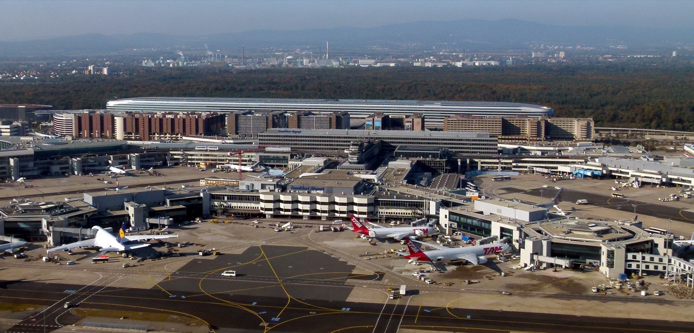
波次：为什么这趟航班是凌晨两点四十五起飞
OZ223 凌晨 02:45 从纽约起飞，06:50 抵达首尔，而衔接的 OZ361 是 09:00 出发。这些时刻看起来很随意，实际上是精确编排的结果。
中转枢纽的时刻表不是均匀铺开的，而是打成一个个波次（bank，也叫 wave）：一大批进港航班在一小时左右的窗口内密集落地，乘客在航站楼里完成交换，然后一大批出港航班在随后的一两个小时内密集起飞。波次与波次之间是相对空闲的间隙。一座大型枢纽一天可能有四到八个波次。
这么做的原因很简单：如果航班到达和出发的时间是随机分布的，那么任意两个航班之间的衔接时间也是随机的，可能是四十分钟（来不及），也可能是七小时（没人愿意等）。打成波次之后，一个波次里的任意进港航班，都能衔接上同一个波次里的任意出港航班，衔接时间被控制在一两个小时的舒适区间内。用一次编排，把 N 个进港航班与 N 个出港航班之间的 N² 种组合，全部变成可售卖的商品。
仁川的清晨波次正是为跨太平洋航线设计的：北美各城市在当地的傍晚到深夜起飞，跨过日界线之后，恰好在首尔的清晨陆续落地；紧接着一批飞往中国、日本、东南亚各城市的航班在上午出发。凌晨 02:45 从纽约起飞，看起来是个不近人情的时刻，但它是被首尔那头的清晨波次倒推出来的。整张时刻表的锚点不在纽约，在仁川。
波次编排也解释了为什么枢纽机场的忙闲差异那么剧烈——某些时段登机口全满、安检排长队，隔两小时又空空荡荡。这不是管理不善，是设计如此。
两小时十分，到底紧不紧
行程单上写着"首尔转机 · 2 小时 10 分"。这个时间是宽裕还是危险？
判断依据是一个叫最短衔接时间（MCT，Minimum Connecting Time）的行业参数。每座机场对每种中转组合都规定了一个 MCT：同航站楼国际转国际最短、需要换航站楼的次之、国际转国内因为要过边检和重新安检往往最长。订票系统在编排联程时会强制检查这个参数，低于 MCT 的组合根本卖不出来。
仁川对同一航站楼内的国际转国际中转，MCT 通常在四十五分钟上下，是全球主要枢纽里比较宽松的——它的中转流程不需要重新入境、不需要重新托运行李，只需要过一道中转安检。相比之下，一些欧美枢纽的国际转国内中转要求乘客入境、提取行李、重新托运、重新安检，MCT 可以长达两三个小时。
所以两小时十分对仁川来说属于"宽裕但不浪费"的区间：足够吸收一到一个半小时的前段延误，又不至于让人在候机厅耗掉半天。这个区间也正是订票网站默认推荐的中转时长。
但真正决定风险的不是这个时间，而是下面这件事。
一张联程票，还是两张分开的票
这可能是全书最实用、也最容易被忽略的一条知识。
行程单上有一行小字：「无需领取及重新托运行李」。同一个电子客票号 988 7487723896，后面跟着 01 和 02 两个航段序号。这两个细节共同说明了一件事：这是一张联程票（through ticket / single ticket），两个航段在同一份运输合同里。
联程票和"分别买两张票"在票面价格上可能差不多，但在出问题的时候，两者是两个世界：
| 情形 | 一张联程票 | 两张分开的票 |
|---|---|---|
| 前段延误导致误机 | 承运人有义务把你免费改签到下一个可用航班；跨夜的话通常还负责食宿 | 后一段被视为"你自己没赶上"，属于 no-show，票直接作废，需要全价重买 |
| 行李 | 值机时一次挂到最终目的地，中转时不用取出来 | 必须在中转站提取行李、出境入境、重新值机托运 |
| 中转是否需要签证 | 多数国家的国际转国际中转可停留在隔离区，不入境、不需要过境签 | 取行李意味着必须入境，很多国家要求过境签证 |
| 中转时间要求 | 系统强制满足 MCT，卖给你的组合一定是"官方认可来得及"的 | 没有任何保护，时间是你自己拍脑袋定的 |
"分开买"的诱惑在于它经常便宜几百块——用两家不同航司的特价票拼一段行程，总价看起来很划算。但这笔账里没有计入风险成本：一旦前段延误，损失的是后段整张票的钱，外加改签差价、可能的住宿，还有在异国机场手忙脚乱的几个小时。经验法则是：如果两段之间的衔接时间不足四小时，就不要用两张分开的票去赌。
还有一个中间形态需要知道：即使在同一个订单里，如果两段由完全没有联运协议的航司承运（比如一段廉航、一段全服务航司），系统也可能把它们出成两张独立客票。判断方法是看电子客票号——同一个票号带不同航段序号的，是联程；两个完全不同的票号，是两份合同。订票时值得花三十秒确认这一点。
直飞真的更好吗
直飞的优势很明确：时间短、不用换机、行李丢失概率低（行李绝大多数丢失事故发生在中转环节）、少一次起降。但它也有代价，而且代价常常被低估。
价格。直飞航线的定价权高度集中——某条航线上可能只有两三家航司在飞，而中转路线可以有十几种组合在互相压价。跨太平洋航线上，中转往往比直飞便宜三分之一以上。
时刻的灵活度。直飞每天可能只有一班，时间不合适就只能等一天；中转路线可以在几十种组合里挑一个抵达时间合适的。
产品的可选性。这一点最常被忽略：直飞航线上执飞的机型和客舱产品是固定的，你没得挑；而中转路线可以让你避开某家航司的老旧客舱，或者用同样的钱坐上一家服务口碑更好的航司。
反过来说，中转的隐性成本也是真的：多一次起降意味着多一次延误风险的暴露，中转机场的体验差异极大（有些枢纽的中转流程堪称酷刑），而且长途旅行中被打断的那次睡眠，代价往往比行程单上多出来的四小时还大。
比较务实的判断顺序是：先看总价差多少，再看中转点是哪里（后面第六章会讲不同枢纽的体验差异），然后看衔接时间是否在一到三小时的区间，最后确认是不是同一张联程票。四条都过关，中转就是笔划算买卖。
一条被地缘政治改写的航线
航线网络看起来是技术和经济的产物，但它随时可能被政治重画。最近的一次剧变发生在 2022 年。
俄罗斯领空是欧亚之间最短路径的必经之地。从赫尔辛基飞东京，笔直穿过西伯利亚只要九个多小时；绕开俄罗斯，要么向北绕北极、要么向南绕中亚，航程增加数千公里，飞行时间增加两到四小时。多出来的时间不只是乘客的煎熬，更是燃油、机组工时和飞机利用率的真金白银——一趟航班多烧几十吨油，很多航线的利润就直接归零了。
2022 年之后，欧美航空公司与俄罗斯互相关闭领空，而中国航空公司仍可正常使用俄罗斯航路。结果是同一条中欧航线上，两边的航司在成本上出现了结构性差距：欧洲航司要多飞两三个小时，中国航司不用。此后几年里，多家欧洲航空公司陆续缩减甚至完全退出中国航线。
受打击最重的是芬兰航空。它整个公司的战略，就建立在"赫尔辛基是欧洲到东亚的最短中转点"这一个地理优势上——而这个优势的前提是能飞越俄罗斯。前提消失，芬航被迫大规模重组亚洲航线网络，把运力转投其他方向。这是一个教科书级的案例：一家公司的护城河，可能是一条随时会被别人关掉的航路。
类似的事情在历史上反复出现。冷战时期，欧洲到东亚的航班因为无法飞越苏联和中国，必须绕道阿拉斯加的安克雷奇加油，安克雷奇因此一度成为国际枢纽；随着领空开放和飞机航程增加，那条路线消失了，安克雷奇转型成了今天的货运枢纽。航线网络从来不是地图上的固定线条，它是技术、经济和政治三方博弈后的临时快照。
- 把航线网络看成图论问题：轮辐式网络本质上是星形图，它的直径是 2（任意两点最多两跳可达），而边数只有 n−1。现实中的大型航司网络是多枢纽星形图的叠加，在鲁棒性和效率之间取折中。
- 想直观看到大圆航线为什么"往北绕"，可以在地球仪上拉一根线，或者用 Great Circle Mapper 这类工具画一遍纽约到上海的航路——平面地图的墨卡托投影会严重扭曲高纬度距离，这是"绕远"错觉的根源。
名字背后
问：法航、国泰、大韩、新加坡、阿联酋、春秋——这些名字每一个都代表着完全不同的东西。别人报出一家航司的名字，怎么才能立刻知道自己在跟什么打交道？
这一章的目标很具体：读完之后，听到任何一家主要航空公司的名字，能立刻定位它属于哪个类别、大概什么水平、为什么是这个水平。方法不是死记四十家公司，而是先建立三套坐标——联盟归属、商业模式、以及它靠什么活着——然后把所有公司挂上去。
先从那两个字母开始
登机牌上的「OZ」是国际航空运输协会分配的双字代码（IATA code），用于订票、行李条、时刻表这些商业场合。每家航司还有一个三字的国际民航组织代码（ICAO code），用于空管通话——韩亚的是 AAR，所以管制员喊的是"Asiana 223"而不是"OZ223"。
这些代码不总是助记的。有些很直观（CX=Cathay、SQ=Singapore、AF=Air France），有些则是历史遗留：OZ 之于 Asiana、UA 之于 United、EK 之于 Emirates 都看不出来路。电子客票号开头那三位数字是另一套编码——韩亚是 988，所以那张票的号码以 988 开头。这三套代码是航空业的"户籍"，也是订票系统能把几十家公司的航班拼进同一张票里的技术前提。
三大联盟：航空业的三个阵营
全球主要航空公司分属三个联盟，或者明确不加入任何联盟。联盟不是合资公司，也不涉及股权，它是一套商务协议的集合：成员之间互认里程、互开休息室、互给优先待遇、并且共享一套让"多家航司出现在同一张机票上"变得容易的结算与联运机制。
星空联盟 Star Alliance
成立 1997 · 26 家成员 · 精英等级两级：Silver / Gold- 美联航、加拿大航空
- 汉莎、瑞士、奥地利、布鲁塞尔、葡萄牙、波兰、爱琴海、克罗地亚
- 意大利国家航空 ITA（2026 年 4 月加入）
- 全日空、新加坡航空、泰航、长荣、印度航空
- 中国国航、深圳航空（吉祥航空为"连接伙伴"）
- 土耳其航空、埃及航空、埃塞俄比亚航空、南非航空
- 巴拿马航空 Copa、哥伦比亚航空 Avianca、新西兰航空
- 韩亚航空（至 2026 年 12 月 16 日）
天合联盟 SkyTeam
成立 2000 · 名义 19 家、实际运作 18 家 · 精英等级两级：Elite / Elite Plus- 达美航空
- 法国航空、荷兰皇家航空、维珍大西洋
- 北欧航空 SAS（2024 年 9 月从星空转来）
- 大韩航空
- 中国东方航空、厦门航空、中华航空
- 越南航空、印尼鹰航
- 沙特航空、中东航空、肯尼亚航空
- 阿根廷航空、墨西哥航空、西班牙欧罗巴航空、罗马尼亚航空
- 俄罗斯航空（2022 年 4 月起会籍中止）
寰宇一家 oneworld
成立 1999 · 15 家成员 · 精英等级三级：Ruby / Sapphire / Emerald- 美国航空、阿拉斯加航空（含夏威夷航空）
- 英国航空、伊比利亚、爱尔兰航空、芬兰航空
- 国泰航空、日本航空、马来西亚航空
- 澳洲航空、斐济航空（2025 年加入）
- 卡塔尔航空、阿曼航空（2025 年加入）
- 摩洛哥皇家航空、约旦皇家航空、斯里兰卡航空
- 菲律宾航空已宣布将于 2027 年加入
还有一批重要航司刻意不加入任何联盟，它们的策略是"一次深度绑定一家"而不是"跟二十家浅层合作"：阿联酋航空（与澳航的合作深到接近联营）、阿提哈德航空（与捷蓝互通忠诚度）、捷蓝、西南航空、以及绝大多数廉价航空公司。中国的南方航空也在 2019 年退出了天合联盟，此后走双边路线。
廉航不入盟不是因为懒。联运意味着要为别人的延误承担赔付责任，而超低成本航司的整个成本结构，恰恰建立在"不承担这种责任"之上——它们卖的是一段最便宜的运输，不是一张有保障的行程。
联盟不是俱乐部，是资本关系的下游产物
这一点值得单独说，因为它反直觉：航司很少"主动跳槽"到另一个联盟，联盟归属的变动几乎总是股权变动的结果。最近几年的三个案例都指向同一个规律。
北欧航空退出星空联盟，加入天合
SAS 是星空联盟 1997 年的创始成员之一，待了 27 年。它离开的原因不是不满，而是破产重整之后法荷航集团取得了约 19.9% 的股权——而法荷航是天合的核心。股权先变，联盟归属随后跟上。
意大利国家航空从天合转到星空
它的前身意大利航空是天合成员。汉莎集团入股之后，ITA 先在 2025 年 4 月退出天合，2026 年 4 月正式成为星空成员，里程计划也并入了汉莎的体系。2026 年 6 月，汉莎行使期权把持股从 41% 提高到约 90%。
韩亚航空退出星空联盟，然后消失
韩亚 2003 年加入星空，待了 23 年。它离开的方式最彻底：不是转会，是被同属天合的大韩航空整体吸收。12 月 16 日退出星空，12 月 17 日法人被并入大韩，OZ 这个代码就此消失。
所以判断一家航司的联盟归属，长期来看要看它的股东是谁。而这也意味着：你今天记住的联盟版图，五年后会有几处不同。
一家正在消失的航空公司
开篇那张登机牌属于韩亚航空。它值得单独讲一节，不是因为它有多特殊，而是因为它恰好把这一章所有的概念都串在了一起——载旗航空、联盟、并购、反垄断、里程整合，全都发生在这一家公司身上，而且就发生在最近两年。
韩亚 1988 年成立，是韩国的第二家全服务航司，长期与大韩航空构成双寡头格局。它在服务上口碑不错，加入星空联盟 23 年，机队里有 6 架 A380。
然后是这条时间线：
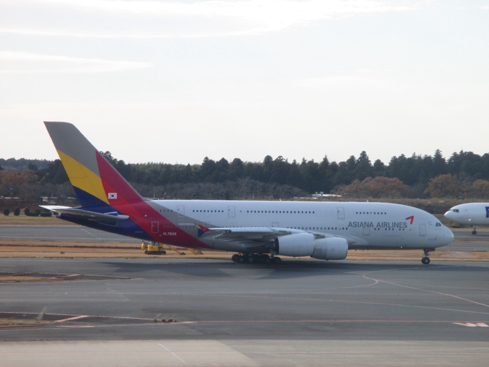
| 时间 | 事件 |
|---|---|
| 2020 年 | 大韩航空宣布收购韩亚。此后是长达四年的全球反垄断审查——涉及韩国、美国、欧盟、日本、中国等多个辖区，被称为航空史上耗时最长的并购之一 |
| 2024 年 12 月 12 日 | 收购完成。大韩投入约 1.5 万亿韩元取得韩亚 63.88% 股权，韩亚成为子公司。但两个品牌继续并存 |
| 2026 年 1 月 14 日 | 韩亚从仁川机场 T1 整体搬到 T2——值机柜台、登机口、休息室全部搬走，两家低成本子公司同日跟着搬。T2 原本是天合联盟的航站楼 |
| 2026 年 6 月 25 日 | 韩国国土交通部附条件批准合并 |
| 2026 年 8 月 12 日 | 大韩董事会与韩亚股东大会分别通过合并协议（韩亚股东出席率 81.86%，赞成 99.3%） |
| 2026 年 10 月 15 日 | 在韩亚航班上累积星空联盟里程的最后期限 |
| 2026 年 12 月 16 日 | 韩亚正式退出星空联盟 |
| 2026 年 12 月 17 日 | 韩亚法人被大韩吸收，品牌消失。合并后的公司是天合成员 |
回头看开篇那张登机牌，几个细节忽然都有了含义。它印着「A STAR ALLIANCE MEMBER」，而这个身份在四个月后就到期了。它从仁川 T2 出发——而 T2 是大韩和天合的楼，韩亚是七个月前才搬进去的：联盟切换在物理上先表现为一次搬家，票面上的联盟标识反而是最后才改的那一项。而右下角那个空着的里程栏，距离"再也不能往星空联盟里记"只剩两个月。
这场并购还留下一个很好的反垄断教学案例。为了换取各国批准，大韩必须交出竞争资源：34 条国际及国内航线的时刻被腾给其他航司——德威航空接手了仁川到法兰克福、巴黎、罗马、巴塞罗那四条欧洲线，Air Premia 接手了洛杉矶、纽约、旧金山、檀香山等美洲线，韩亚的货运业务被整体出售。监管机构的逻辑很清楚：两家变一家没问题，但必须有人接着在这些航线上跟它竞争。
后续则说明了这类补救措施的脆弱：接手欧洲线的德威航空连续多个季度亏损，而它被要求运营这些航线的强制期在 2026 年 10 月到期。把航线判给一家扛不住的公司，竞争就只是纸面上的。
韩亚旗下的三家低成本航司也在整合：真航空、釜山航空、首尔航空将统一使用"真航空"品牌，合并后约 60 架飞机，目标在 2027 年第一季度完成，届时会成为韩国最大的廉航。
载旗航空：为什么有些公司像"国家的脸"
现在进入分类。第一类是载旗航空（flag carrier），也叫国家航空公司。
这个概念来自第一章讲过的双边航权体系：既然国际航线要由两国政府逐条谈判、指定承运人，那么每个国家自然需要一家"代表本国上谈判桌"的公司。二战后大批国家成立了国有航空公司，它们的使命从一开始就是双重的——既要赚钱，也要充当国家名片、维持"必须通航但不赚钱"的政治航线、在危机时执行撤侨任务。
这个双重身份解释了载旗航空身上常见的那种矛盾感：产品可以做得极其精致（因为它是国家形象工程），运营效率却常常一般（因为它承担了非商业目标，而且历史上有工会与政治包袱）。法国航空恢复并扩张只有 4 个座位的 La Première 头等舱，汉莎给 747 加装新头等舱，英航把新一代头等舱首发在 A380 上——这些投资从纯利润角度都很难算得过来，它们真正的功能是品牌旗舰。
反过来，也有载旗航空把国家名片这件事做成了核心竞争力：新加坡航空、国泰航空、全日空、日本航空长期以服务立身，Skytrax 之类的评级榜单上常年占据前列。这里的因果并不神秘——它们所在的经济体人力成本高、服务业标准高、竞争激烈，而且都不得不依赖国际客源（第一章讲的第六航权），所以服务是它们唯一能建立的护城河。
全服务与廉价航空：真正的差别不在服务，在成本结构
第二个坐标，也是最重要的一个。
很多人以为廉航便宜是因为"抠"——少给一瓶水、座位窄一点。这只是表面。廉价航空是一整套互相咬合的成本结构，1970 年代由美国西南航空首创，随后被瑞安航空、亚洲航空、春秋航空等全球复制。它的核心是四板斧：
单一机型
全机队只飞一款飞机（西南和瑞安全是波音 737，春秋全是空客 A320 系列）。飞行员不需要多机型资质、备件只需一套库存、维修培训只做一遍、任何一架飞机都能替换任何一班航班。
节省的是训练、备件与调度的复杂度成本快速周转
落地到再次起飞压缩到 25–30 分钟（全服务航司常需 45–60 分钟）。不供餐、不设商务舱、行李少、清洁简化，都是为了这个数字服务的。
同一架飞机每天多飞一到两个航段，等于资产利用率提升三成二级机场与点对点
飞主要城市周边的小机场（起降费低、时刻宽松、拥堵少），只飞点对点、不做中转衔接——因此不需要承担误接责任，也不需要复杂的行李联运系统。
节省的是机场费用、延误连带成本与地面系统投资辅营收入
票价压到极低作为诱饵，靠行李、选座、优先登机、餐食、改签费赚钱。这不是补充收入，这是主营收入的一半。
让"票价看起来只要 99 元"这件事在财务上成立第四板斧的规模常常超出想象。瑞安航空 2026 财年（截至 2026 年 3 月）的官方业绩：总收入 155.4 亿欧元，其中辅营收入 49.9 亿欧元，占 32.1%，折合每位旅客约 24 欧元；全年运载 2.084 亿人次，机队 647 架，税后利润约 22.6 亿欧元。而在把这套模式推到极致的美国超低成本航司 Spirit，非机票收入一度占到营业收入的五成以上，平均每位旅客贡献六七十美元的附加费。
但这里有一个必须写下来的结局：Spirit 已经不存在了。它在 2024 年 11 月首次申请破产保护，2025 年 3 月脱困，2025 年 8 月二次申请，最终在 2026 年 5 月 2 日凌晨停止一切运营，转入法院监督下的清算——成为二十五年来第一家因财务原因倒闭的美国主要航空公司。直接诱因是 2026 年中东冲突推高的航油价格，以及寻求联邦纾困未果。
这个结局的含义值得想一想：辅营收入占比最高、成本压得最狠的那家公司，并不是活得最好的那家。超低成本模式把利润率压在一条极窄的走廊里，一旦油价、需求或汇率之中任何一项剧烈波动，缓冲就没有了。反过来，西南航空这些年在做相反的事——取消"两件行李免费"、引入指定座位和高端经济舱、甚至开始跟其他航司建立联运合作。廉航之父正在慢慢变成一家普通航司。
超级承运人：靠"过境"建立的帝国
第三类是过去三十年里最引人注目的现象：超级承运人（superconnector）。这些公司的本国市场都很小，却拥有远超本国体量的机队和网络，因为它们卖的不是"来我们国家"，而是第一章讲的第六航权——"从我们国家过"。
| 航司 | 枢纽 | 它的独特之处 |
|---|---|---|
| 阿联酋航空 EK · 不结盟 | 迪拜 DXB | 全球最大的 A380 运营者（约 116 架），也掌握着全世界头等舱套房的四到五成。它计划把 A380 飞到 2040 年代初，并投入约 50 亿美元翻新客舱。迪拜 2025 年旅客量 9,520 万人次，全球第二。这家公司几乎是"第六航权"这个概念的人格化 |
| 卡塔尔航空 QR · 寰宇一家 | 多哈 DOH | 走了一条相反的路：它公开表示不需要头等舱，把全部资源压在商务舱上。它的 Qsuite 是第一款带门的商务舱套间，重新定义了整个行业的高端标准。目前头等舱只残存在 8 架 A380 上，而随着 A380 撤出多条航线，那点头等舱也在消失 |
| 阿提哈德航空 EY · 不结盟 | 阿布扎比 AUH | 三家里规模最小、也最极端。它的 A380 上有全世界唯一的三居室机上套房 The Residence——约 11.6 平方米，含客厅、卧室和带淋浴的私人卫生间，一架飞机只有一间。有意思的是它目前不单独售卖，只作为部分头等旅客的升舱选项 |
| 土耳其航空 TK · 星空联盟 | 伊斯坦布尔 IST | "第四极"。以通航国家数量世界第一著称，靠地理位置同时吃欧洲、中亚、非洲、南亚四个方向的中转客流。值得注意的是它已经取消了头等舱——超级承运人里也不是人人都往奢华方向走 |
这个模式的脆弱之处在 2026 年暴露了一次：中东地区的冲突干扰了当地空域，卡塔尔航空的 A380 机队在 2026 年 4–5 月全线停飞，6 月才恢复。把整个商业模式压在一个地理点上，就意味着那个点的所有风险都是你的系统性风险。
逐区名录
下面是分区的速查表。不需要背，需要的时候能查到、看到名字时能定位就够了。
东亚
| 航司 | 联盟 | 枢纽 | 定位与近况 |
|---|---|---|---|
| 大韩航空 KE | 天合（创始） | 仁川 ICN | 韩国载旗航司。2025 年 3 月发布 41 年来首次品牌与涂装换代。吞并韩亚，2026 年 12 月完成合并后将成为东亚最大的航司之一 |
| 韩亚航空 OZ | 星空 → 天合 | 仁川 ICN（T2） | 见上节。2026 年 12 月 17 日品牌消失 |
| 全日空 ANA / NH | 星空 | 羽田 + 成田 | 日本载旗航司。把最高比例的运力分配给头等舱的航司（约 3.2%，全球第一），"The Suite" 头等与"The Room"商务舱都是各自品类里的标杆 |
| 日本航空 JAL / JL | 寰宇一家 | 羽田 + 成田 | 2010 年破产重整、由稻盛和夫主持重建，是航空业公司重生的经典案例 |
| 国泰航空 CX | 寰宇一家 | 香港 HKG | 极度依赖中转客的第六航权型航司。新商务舱 Aria Suite 正在铺开，官方定位就是要做"商务舱里的头等舱"；改装过的飞机不再设头等舱，头等要等 777-9 交付才回归。货运收入约占集团总收入两成 |
| 长荣航空 BR | 星空 | 台北桃园 | 全服务，Hello Kitty 彩绘机是全球识别度最高的涂装之一 |
| 中华航空 CI | 天合 | 台北桃园 | 台湾载旗航司 |
| 星宇航空 JX | 不结盟 | 台北桃园 | 2018 年才成立的精品航司（由长荣创办人之子创立），是近年少见的"新增头等舱"案例：2026 年拿下台湾首架 A350-1000，四舱布局含头等；2026 年 7–8 月新开凤凰城与布拉格航线 |
| 中国国际航空 CA | 星空 | 北京 PEK / PKX | 中国载旗航司。747-8 与 777-300ER 上仍设头等舱 |
| 中国东方航空 MU | 天合 | 上海 PVG / SHA | C919 的首家运营者。2026 年夏季新开上海—苏黎世、上海—斯德哥尔摩、西安—维也纳 |
| 中国南方航空 CZ | 不结盟（2019 年退出天合） | 广州 CAN + 北京 PKX | 中国机队规模最大。A380 已于 2022 年全部退役。2026 年夏季筹备北京—赫尔辛基 |
| 海南航空 HU | 不结盟 | 海口 + 北京 | 产品口碑长期偏好，母集团 2021 年破产重整后由新股东接盘 |
| 厦门航空 MF | 天合 | 厦门 + 福州 | 中国唯一的全波音机队 |
| 吉祥航空 HO | 星空"连接伙伴" | 上海 PVG | 民营，正在向全服务方向发展。"连接伙伴"是星空联盟为非正式成员设的一种有限合作身份 |
| 春秋航空 9C | 无 | 上海 PVG | 中国低成本航空的代表，全空客 A320 系列单一机队，是本章"四板斧"的中国样本 |
| 济州航空 7C | 无 | 首尔 + 济州 | 韩国最大的独立廉航。2024 年 12 月 29 日务安机场事故：一架 737-800 从曼谷返航时遭鸟击，冲出跑道撞上跑道端的混凝土结构起火，179 人遇难，仅 2 人生还，是韩国最惨重的空难之一 |
| 真航空 LJ / 釜山航空 BX / 首尔航空 RS | 无 | 仁川 / 釜山 | 大韩系与韩亚系的廉航，正在整合为统一的"真航空"品牌，目标 2027 年第一季度完成 |
东南亚与大洋洲
| 航司 | 联盟 | 枢纽 | 定位与近况 |
|---|---|---|---|
| 新加坡航空 SQ | 星空 | 樟宜 SIN | 第六航权最纯粹的教科书案例：一个没有国内航线的国家的航空公司。A380 上有 6 间 Suites，而 777-300ER 上的头等舱只有 4 个座位。常年位居服务评级榜首。旗下有中长程廉航酷航 Scoot |
| 泰国国际航空 TG | 星空 | 曼谷 BKK | 疫情期间进入法院重整，2025 年 6 月裁定退出重整、同年 8 月复牌 |
| 马来西亚航空 MH | 寰宇一家 | 吉隆坡 KUL | 2014 年 MH370 失踪与 MH17 被击落两起事件，是航空史绕不开的节点 |
| 越南航空 VN / 印尼鹰航 GA / 菲律宾航空 PR | 天合 / 天合 / 无 | 河内·胡志明 / 雅加达 / 马尼拉 | 三家东南亚载旗航司。菲律宾航空是亚洲历史最悠久的航司之一（1941 年），已宣布 2027 年加入寰宇一家 |
| 亚洲航空 AirAsia | 无 | 吉隆坡 KUL | 东南亚廉航开创者，口号"Now Everyone Can Fly"。它的多国合资子公司模式（在泰国、印尼、菲律宾各设一家本地公司）是绕开航权国籍限制的经典手法——既然外国公司拿不到某国的国内航线权，那就在当地成立一家本地公司 |
| 澳洲航空 QF | 寰宇一家 | 悉尼 + 墨尔本 | 澳洲载旗航司，A380 上设 14 间头等套房。"日出计划"（Project Sunrise）要用 A350-1000 超远程型开通悉尼直飞伦敦与纽约，是目前最受关注的超长途项目。旗下有廉航捷星 Jetstar |
| 新西兰航空 NZ | 星空 | 奥克兰 AKL | 已取消头等舱。以经济舱"Skynest"床位这种创新著称 |
欧洲
| 集团 / 航司 | 联盟 | 枢纽 | 定位与近况 |
|---|---|---|---|
| 汉莎集团 Lufthansa Group 含瑞士 LX、奥地利 OS、布鲁塞尔 SN、ITA | 星空 | 法兰克福 + 慕尼黑 | 欧洲最大的航空集团。新一代客舱品牌 Allegris 含带门头等套间（A350 上 3 间，中间那间可拼成双人床），已装 10 架 A350-900，并计划给 15 架 747-8 加装头等。2026 年把 ITA 持股提高到约 90% |
| 法荷航集团 Air France-KLM | 天合 | 巴黎 CDG + 阿姆斯特丹 AMS | 法航的 La Première 头等舱每架飞机只有 4 个座位，2025–2026 年网络反而扩张了四成（新增特拉维夫、亚特兰大、休斯敦、波士顿）。集团持有 SAS 约 19.9% 股权 |
| IAG 含英航 BA、伊比利亚 IB、爱尔兰航空 EI、伏林 VY | 寰宇一家 | 伦敦 LHR + 马德里 MAD + 都柏林 DUB | 英航的新一代头等套间从 2026 年年中开始在 A380 上首发改装，将延续到 2028 年；改装后的 A380 商务舱达 110 座。伊比利亚是欧洲—拉美的桥梁；爱尔兰航空的卖点是都柏林的美国境外预清关；伏林是集团旗下的廉航 |
| 北欧航空 SAS | 天合（2024 年从星空转来） | 哥本哈根 + 斯德哥尔摩 + 奥斯陆 | 见上文"联盟是资本关系的下游" |
| 芬兰航空 AY | 寰宇一家 | 赫尔辛基 HEL | 俄罗斯领空关闭最大的受害者。整个公司的战略建立在"赫尔辛基是欧洲到东亚的最短中转点"上，而这个优势的前提是能飞越俄罗斯。赫尔辛基—东京从九小时变成十三小时，中国航线从高峰期每月几十班一路砍到每周几班。详见第一章 |
| 瑞安航空 FR | 无 | 都柏林 + 全欧近百个基地 | 欧洲最大的超低成本航司，也是全球运载旅客最多的航司之一（2026 财年 2.084 亿人次）。辅营收入占比 32.1%。它的商业模式是本章"四板斧"最纯粹的实现 |
| 易捷航空 U2 / Wizz Air W6 | 无 | 伦敦 LTN·LGW / 布达佩斯 BUD | 易捷是比瑞安"温和"一档的廉航；Wizz 是中东欧的超低成本航司，2025 年 9 月关闭了阿布扎比合资公司并退出中东，战略收缩回中东欧 |
北美
| 航司 | 联盟 | 主枢纽 | 定位与近况 |
|---|---|---|---|
| 美国航空 AA | 寰宇一家 | 达拉斯 DFW（+ 六七个枢纽） | 机队规模全球第一。已取消国际长途头等舱，全部改为 Flagship Suite 商务舱；商务舱座位数到 2026 年减少 15%，但靠超级经济舱把整体高端运力做大了——这是"头等舱衰落"最典型的一次战略选择 |
| 达美航空 DL | 天合（主导者） | 亚特兰大 ATL（+ 七八个枢纽） | 亚特兰大 2025 年 1.063 亿人次，全球最繁忙机场。注意"Delta One"是商务舱不是头等舱。它与美国运通的联名卡关系，是全球最赚钱的里程生意（见第五章） |
| 美国联合航空 UA | 星空（创始） | 芝加哥 ORD（+ 纽瓦克、休斯敦、丹佛、旧金山等） | 与捷蓝的"Blue Sky"合作已通过美国交通部审查，预计 2026 下半年正式交割。第三章讲的那起改变了整个行业超售规则的事件，发生在它的支线航班上 |
| 西南航空 WN | 无 | 达拉斯爱田 DAL（点对点，无传统枢纽） | 廉航模式的鼻祖，也是现在正在"传统化"的活标本：取消了标志性的"两件行李免费"，引入指定座位与高端经济舱，并从 2025 年起开始与其他航司建立联运合作 |
| 阿拉斯加航空 AS | 寰宇一家 | 西雅图 SEA + 檀香山 | 2024 年 9 月完成收购夏威夷航空，2025 年 10 月拿到单一运行合格证，2026 年 4 月夏威夷航空在 97 年后停用了自己的航班代码。两家共用一个订座系统、一个航班代码、一个里程计划，但保留两个品牌 |
| 捷蓝航空 B6 | 无 | 纽约 JFK + 波士顿 | 混合型：低价基底 + 名为 Mint 的高端商务舱产品。积分永不过期 |
| Spirit NK | 无 | 劳德代尔堡 FLL | 已于 2026 年 5 月 2 日停止运营并进入清算，是二十五年来第一家因财务原因倒闭的美国主要航司。见上文 |
| Frontier F9 | 无 | 丹佛 DEN | Spirit 倒闭后美国超低成本阵营的主要幸存者 |
| 加拿大航空 AC / Porter PD | 星空（创始）/ 无 | 多伦多 YYZ | Porter 是个有意思的异类：全经济舱但"没有中间座位"，靠 E195-E2 支线机大举扩张，走的是"高端体验 + 中等价格"的第三条路 |
拉美与非洲
| 航司 | 联盟 | 枢纽 | 定位与近况 |
|---|---|---|---|
| LATAM | 不结盟（2020 年退出寰宇一家） | 圣保罗 + 圣地亚哥 + 利马 | 拉美最大的航司集团，退出寰宇后与达美结成深度合资伙伴关系 |
| 巴拿马航空 Copa | 星空 | 巴拿马城 PTY | 第六航权的另一个教科书案例。它把自己的枢纽直接命名为"美洲之桥"（Hub of the Americas）——一个几乎没有本地客源的小国，靠地峡的地理位置做整个南北美洲的中转生意 |
| 哥伦比亚航空 Avianca | 星空 | 波哥大 BOG | 拉美第二大，隶属 Abra 集团 |
| 埃塞俄比亚航空 ET | 星空 | 亚的斯亚贝巴 ADD | 非洲最大、最赚钱的航空公司，机队约 162 架，是非洲最大的 A350 运营者。它把亚的斯亚贝巴做成了"非洲 ↔ 中国 / 欧洲"的中转枢纽——又一个第六航权的成功案例，而且发生在一个人均收入很低的国家 |
| 南非航空 SA | 星空 | 约翰内斯堡 JNB | 长期困境的载旗航司。曾在 2020–2021 年进入商业拯救程序，2026 年仍在挣扎——截至 2026 年 2 月只飞 17 个目的地、19 架飞机，为保流动性砍掉了多条航线 |
尾翼图鉴
最后是一组照片。下次在候机厅看见涂装，试着先认出公司，再回忆它属于哪个类别。
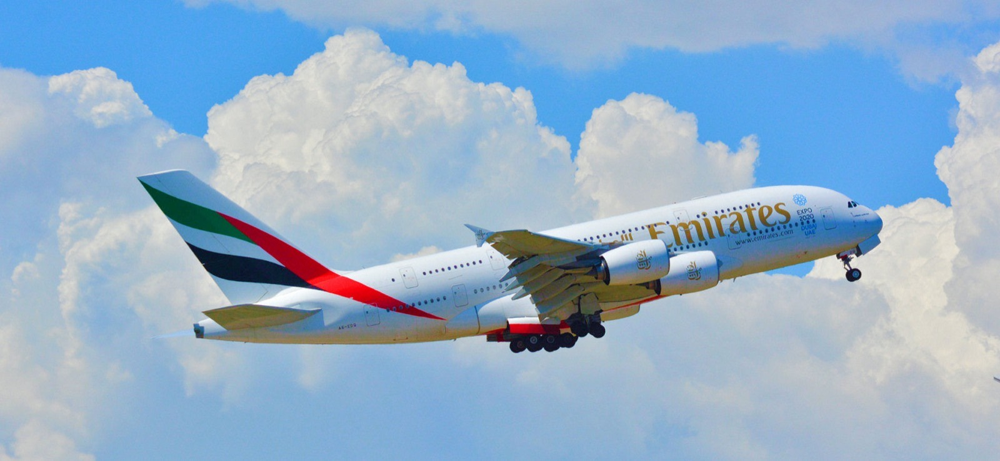
阿联酋航空
超级承运人的原型。全球最大 A380 运营者，掌握全世界头等舱套房的四到五成。红色斜纹尾翼加阿拉伯书法体，是全球最好认的涂装之一。
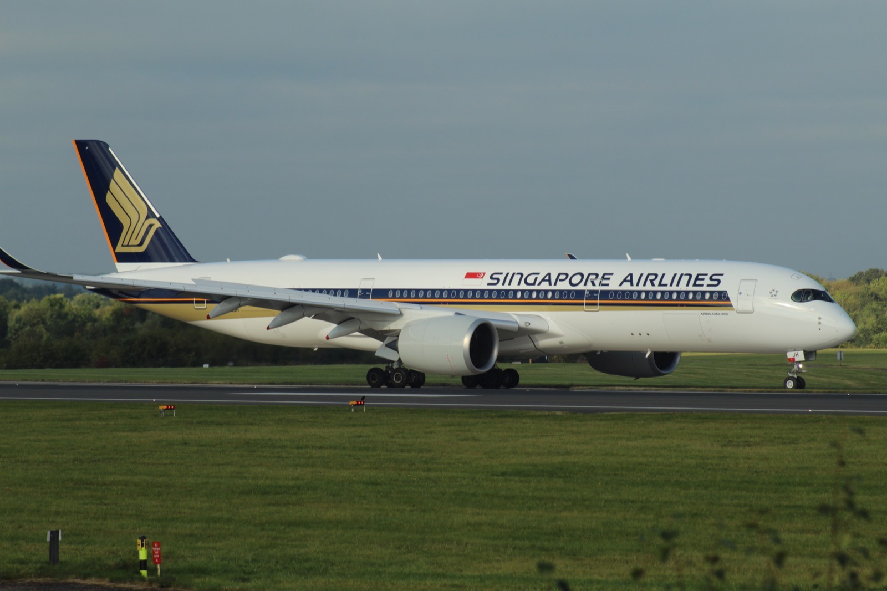
新加坡航空
没有国内航线的国家航空公司，服务评级常年第一。图中是 A350-900——注意驾驶舱周围那道黑色"墨镜"描边，那是空客新一代机型的识别特征。
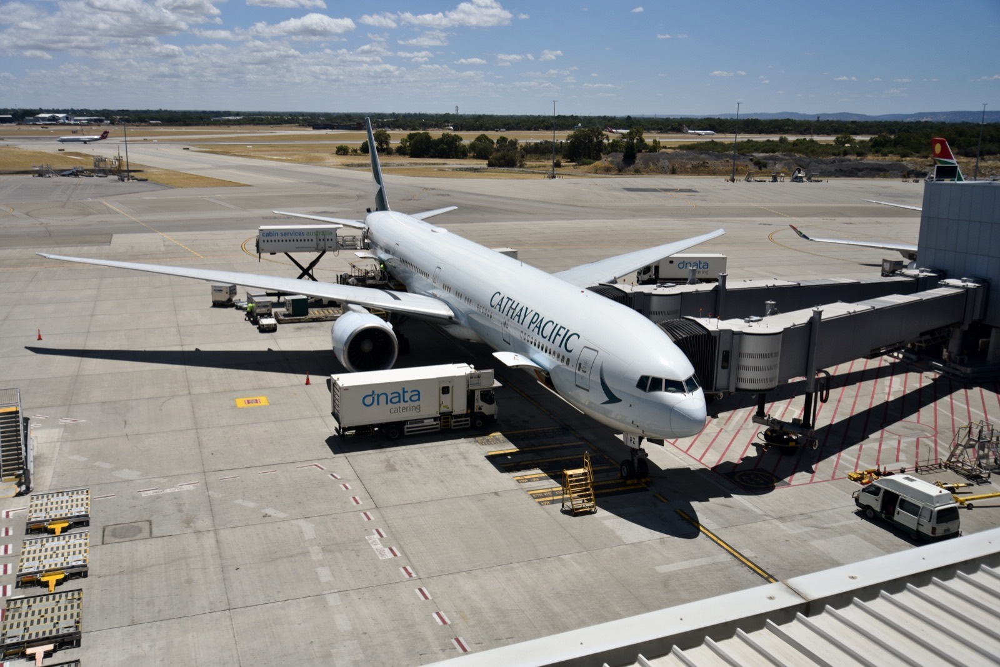
国泰航空
绿色"鱼翅"尾翼。极度依赖中转客流的第六航权型航司，新商务舱的目标是做"商务舱里的头等舱"。图中是 777-300ER，主起落架每侧六个轮子。
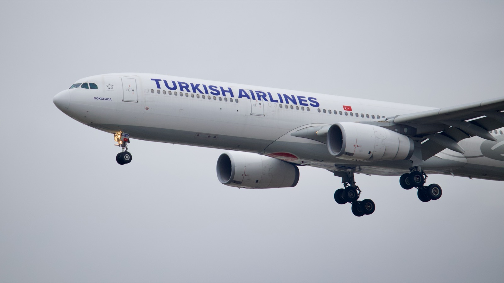
土耳其航空
中东三强之外的"第四极"，通航国家数世界第一。已取消头等舱——说明超级承运人也不是人人都往奢华方向走。
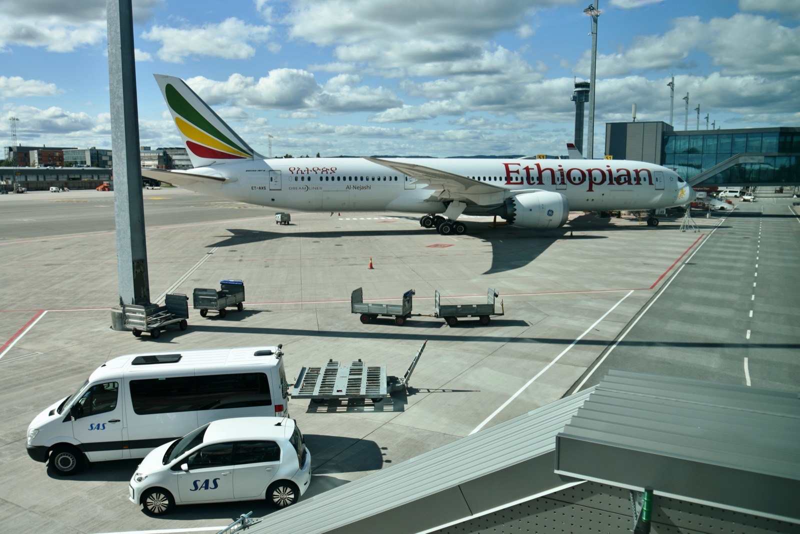
埃塞俄比亚航空
非洲最大也最赚钱的航司，非洲最大的 A350 运营者。它证明第六航权枢纽模式不需要一个富裕的本国市场作前提。
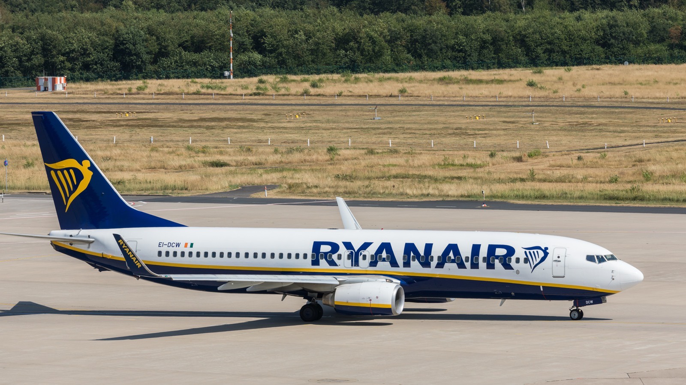
瑞安航空
欧洲最大的超低成本航司，"四板斧"的最纯粹实现：全 737 单一机队、25 分钟周转、二级机场、辅营收入占三成以上。
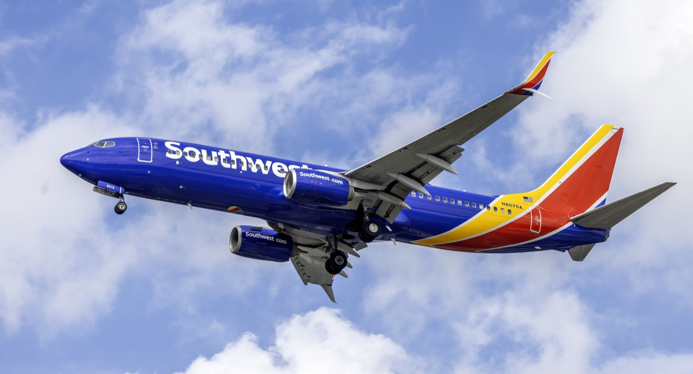
西南航空
廉航模式的发明者，全世界所有低成本航司的祖师爷。也是现在正在慢慢"传统化"的活标本——它最近做的每一件事都在往回走。
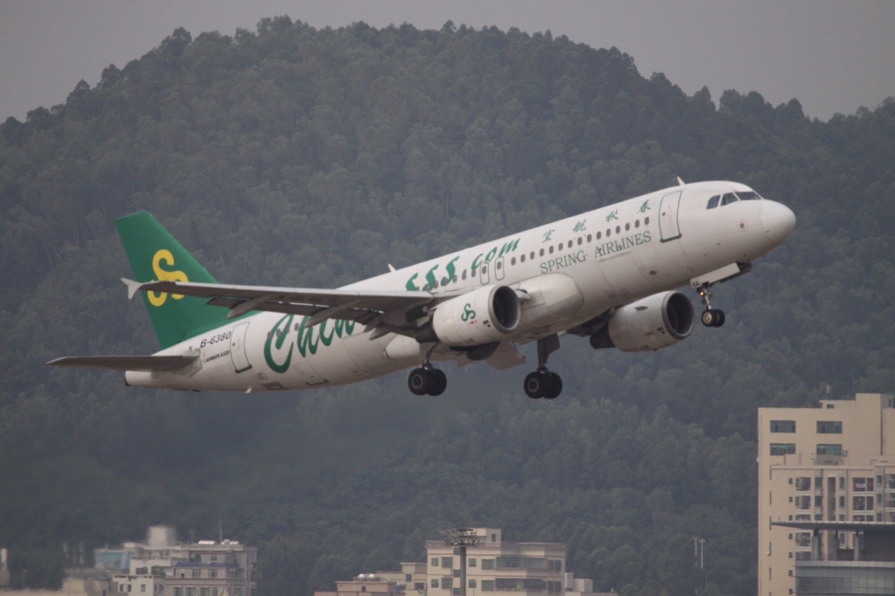
春秋航空
中国低成本航空的代表，全空客 A320 系列单一机队。它把西南航空那套模式搬进了一个航权与时刻资源都受严格管理的市场。
所以，为什么有些名字代表奢华，有些代表便宜
把这一章收成一句话：一家航空公司的产品水平，基本上由三件事决定——它靠什么客源活着、它所在的国家想让它扮演什么角色、以及它选择在哪个成本结构里竞争。
靠中转客活着的航司，服务通常更好。因为中转客是最容易被抢走的客户——他们的起点和终点都不在你的国家，选你只是因为你更便宜或更舒服。新加坡、国泰、阿联酋、卡塔尔、埃塞俄比亚都属于这一类，它们没有本地市场可以依赖，只能靠产品说话。
靠本国庞大国内市场活着的航司，服务通常一般。美国三大就是典型：它们的国内网络密度是无法被替代的护城河，旅客不满意也基本没得选，于是竞争压力转移到了价格和网络覆盖上，而不是客舱体验。它们的利润也不主要来自运输——第五章会讲清楚这一点。
被国家当作名片的航司，会在旗舰产品上过度投资。法航只有 4 个座位的头等舱、汉莎给 747 加装的新头等、英航从 A380 开始的头等换代，从纯财务角度都很难算过来账，但它们的功能本来就不是赚钱。
而选择了超低成本结构的航司，"服务差"不是缺陷，是设计。它卖给你的是一段运输，价格已经反映了你放弃的东西。真正需要警惕的不是它服务差，而是把它的票价跟全服务航司的票价直接比较——那两个数字不是同一种商品的价格。
下一章要处理的，正是"同一种商品"这个假设本身的问题：即使在同一架飞机的同一个客舱里，坐着的人买到的也不是同一种东西。
你买的到底是什么
问：同一架飞机、同一段航程、同一天起飞，为什么有人付了三千，有人付了三万，还有人被广播叫住、给了一千五百美元请他别上这架飞机？
航空公司卖的不是"座位"。它卖的是一组高度差异化的商品，这些商品共用同一架飞机、同一批机组、同一次起降，但在价格上可以差出十倍。理解这套商品体系，是理解机票价格的前提。
四种商品，不是"加点钱"的四个档
先把最常见的误解澄清掉：头等舱不是"经济舱加钱升级"的顶配版本，它是一个独立设计、独立定价、面向完全不同客户群的产品。国际航线上通常存在以下四种舱等，行业用四个字母指代：
头等舱 First
独立套间或半封闭空间，全平躺床铺，单独的乘务配比，餐食按需点餐而非固定时段。一架飞机上通常只有 4 到 14 个座位，且只在少数机型的少数航线上存在。
典型价格：经济舱的 8–15 倍正在全球范围内萎缩
商务舱 Business
全平躺座椅，多数新客舱做到每个座位直通过道，部分带门。长途宽体机上通常 20–60 个座位。这是今天绝大多数"高端飞行体验"的实际归宿。
典型价格：经济舱的 3–6 倍产品差异极大，见下文
超级经济舱 Premium Economy
独立小舱区，座椅比经济舱宽 2–4 厘米、前后间距多 15–20 厘米，可后仰更多但不能平躺。餐食与行李额度略优。
典型价格：经济舱的 1.5–2.5 倍长途性价比最高的一档
经济舱 Economy
飞机上绝大多数座位。宽体机上按 2-4-2、3-3-3 或 3-4-3 横排，座椅宽度 17–18.5 英寸，前后间距 30–32 英寸。内部还分十几个价格等级。
同一个客舱内部差价可达 3–5 倍这一点比舱等本身更重要
需要立刻指出一件事：「有没有头等舱」是由航空公司和具体机型共同决定的，不是航线远近决定的。很多超长途航线上根本没有头等舱，很多两三小时的短途航线上却挂着"头等舱"的名号——后者其实是把经济舱座椅中间一个位子锁起来当扶手用，跟长途头等舱是完全不同的两种东西。美国国内航线上的所谓 First Class，本质上相当于国际航线的超级经济舱甚至更低。
头等舱正在消失，而且消失得很快
先给几个数字，它们比任何描述都直观。根据航空数据机构的统计，头等舱座位目前已经占不到全球可售座位的 1%；2025 年在售的头等舱座位比 2023 年少了约 120 万个；2024 年的头等舱年度计划座位数比 2019 年减少了四成以上；在约六十家经营长途国际航线的航空公司里，只有不到一半还设有真正独立的头等舱。
更具体的：下面是仍在长途航线上提供真头等舱的主要航司，以及每架飞机上的头等座位数。注意这一列数字有多小。
| 航司 | 机型 | 头等座位数 | 说明 |
|---|---|---|---|
| 阿联酋航空 | A380 | 14 间套房 | 规模最大，机上还有淋浴间。业界估计这一家掌握着全球头等舱套房的四到五成 |
| 阿联酋航空 | 777-300ER | 6 间套房 | 新一代"Game Changer"套间，两排各三间 |
| 澳洲航空 | A380 | 14 间套房 | 位于主甲板 |
| 阿提哈德航空 | A380 | 1 + 9 | 1 间三居室 The Residence（约 11.6 ㎡，全世界唯一）+ 9 间 First Apartment |
| 大韩航空 | A380 | 12 | Kosmo Suites |
| 中国国际航空 | 747-8 / 777-300ER | 12 / 8 | 品牌名"故宫金顶" |
| 全日空 | 777-300ER | 8 间套房 | "The Suite"。全日空是把最高比例运力分配给头等舱的航司，约 3.2%，全球第一 |
| 英国航空 | 777 / 787 / A380 | 8 | 新一代头等套间从 2026 年年中开始在 A380 上首发改装 |
| 日本航空 | 777-300ER / A350-1000 | 8 / 6 | A350-1000 上是新一代套间 |
| 新加坡航空 | A380 / 777-300ER | 6 / 4 | A380 上的 Suites 常年被评为全球最佳头等舱；777 上只有 4 个座位 |
| 国泰航空 | 777-300ER（未改装机） | 6 | 正在消失：装了新商务舱的 777-300ER 不再设头等，头等要等 777-9 交付才回归 |
| 法国航空（La Première） | 777-300ER | 4 | 每架飞机只有 4 个座位，但网络在 2025–2026 年反而扩张了四成 |
| 汉莎航空（Allegris） | A350 | 3 间套房 | 中间那间是可拼成双人床的"First Class Suite Plus"，约 3.7 ㎡ |
| 中国东方航空 / 南方航空 | 777-300ER | 6 / 4 | |
| 卡塔尔航空 | 仅 A380 | — | 正在归零：头等舱只存在于 8 架 A380 上，随着 A380 撤出多条航线而消失。这家公司公开表示不需要头等舱 |
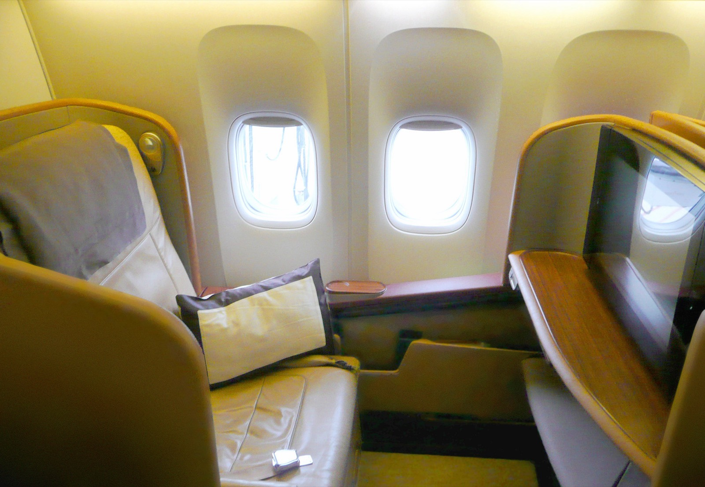
把这张表读一遍，"头等舱"这个词的含义就变了：它不是舱等序列的顶端，而是一架三百人的飞机上那 4 到 14 个座位——占全机座位的 1% 到 3%。它在物理上是一间小房间，在商业上是一个正在关门的小柜台。
还有一份反面清单，是已经明确取消长途头等舱的航司：美国航空（全部改为 Flagship Suite 商务舱）、新西兰航空、土耳其航空、韩亚航空。而达美的"Delta One"、维珍大西洋的"Upper Class"这类名字听起来很高级的产品，本来就是商务舱，从来不是头等舱。
韩亚 A380 上那 12 个座位：一个恰好在手边的标本
开篇那架 A380 上就有一个极好的例子。韩亚在 2019 年 9 月 1 日停售头等舱，把主甲板机头那 12 个座位改名为"Business Suite"。
关键在于：硬件一个螺丝都没动。还是那些带门的套间，还是 32 英寸的屏幕，还是 83 英寸的座距。改变的只有商业定义——餐食、地面服务、行李额度、里程累积全部降到商务舱标准，产品作为"商务票之上的付费升舱选项"出售。
所以那架飞机上现在有一个物理意义上的头等舱，但商业意义上不是了。这基本上就是整个行业正在发生的事情的缩影：座位还在，标签换了。
为什么会这样
头等舱衰落有四个原因，而且它们互相加强：
- 商务舱把头等舱吃掉了。这是最根本的一条。1-2-1 的带门套间已经提供了十年前头等舱级别的私密性和平躺质量。国泰对自己新商务舱的官方定位就是"商务舱里的头等舱"——当商务舱能做到这个程度，头等舱与它之间的价差就变得难以解释。
- 企业差旅政策封了顶。绝大多数公司的报销上限就在商务舱。头等舱因此失去了最稳定、最不看价格的那个客户群，剩下的是自费的富裕旅客——这个池子小得多，也不足以填满全球那么多头等舱。
- 每平方米收益算不过账。一个头等舱套间占用的地板面积，可以换成三到四个商务舱座位，或者更多的超级经济舱座位。当航司按"每平方米产生多少收入"来评估客舱时，头等舱几乎总是输。
- 超级经济舱抢走了那块投资预算。美国航空的做法最能说明问题：它砍掉头等舱、把商务舱座位数减少 15%，但通过大幅增加超级经济舱，让整体的"高端座位"数量反而变多了。航司不是在削减高端运力，是在把它重新分配到更赚钱的那一档。
那么为什么汉莎、法航、英航、阿提哈德还在往里投钱？因为它们投的不是利润中心，是品牌旗舰。阿提哈德的 The Residence 甚至已经不单独售卖，只作为部分头等旅客的升舱选项——它的功能是让这家公司出现在每一篇"世界上最奢华的飞行体验"的文章里。这是市场部的预算，不是财务部的。
商务舱：该看的不是能不能躺平
商务舱是过去二十五年里进化最剧烈的航空产品。它的演进史，基本上就是一部"如何在固定的机身宽度里，让每个人既能躺平、又能不打扰别人地走出去"的工程史。
加宽的躺椅（recliner）
本质上是更大更软的经济舱座椅，能后仰到 150 度左右。今天在一些短程航线和老旧机队上还能见到。睡眠质量与经济舱的差距远没有价格差距那么大。
斜躺平床（angled lie-flat）
座椅能放平，但放平之后是一个斜面，人会不断往下滑。这是航空史上被吐槽最多的产品之一——它宣传上叫"平躺"，体验上并不是。至今仍有少数航司在部分机型上使用。
真正的水平平床（fully flat）
英国航空率先在商务舱推出可完全放平成水平床铺的座椅，做法是让相邻两排的座椅头尾相对交错（yin-yang 布局），用别人的脚部空间换自己的床长。这一步把商务舱从"更好的椅子"变成了"一张床"。
斜向排布，每人直通过道（herringbone / reverse herringbone）
把座椅斜着朝向过道或舷窗排列，做成 1-2-1 的布局。这是商务舱历史上最关键的一次跃迁——它意味着靠窗的乘客不需要跨过邻座就能出去。反鱼骨（座椅朝向舷窗）比正鱼骨（朝向过道）私密性更好，是目前的主流。
带门的套间（suite with door）
在 1-2-1 的基础上给每个座位加一道齐肩高的门，中间两座还可以放下隔板拼成双人间。卡塔尔航空的 Qsuite 是这一代的开创者，此后各家陆续跟进。全日空的 The Room 则走了另一条路——把座椅做到异常宽大。这一代商务舱在很多维度上已经超过了十年前的头等舱。
这段历史的实用含义是：「商务舱」这三个字在今天几乎不携带任何关于体验的信息。同样叫商务舱，可能是二十年前的斜躺座椅，也可能是带门的独立套间；可能是 2-2-2 布局（靠窗的人出去要惊动两个人），也可能是 1-2-1（谁都不用打扰谁）。买票时真正该查的不是舱等，而是这架飞机上这个舱位的具体座椅型号和布局。
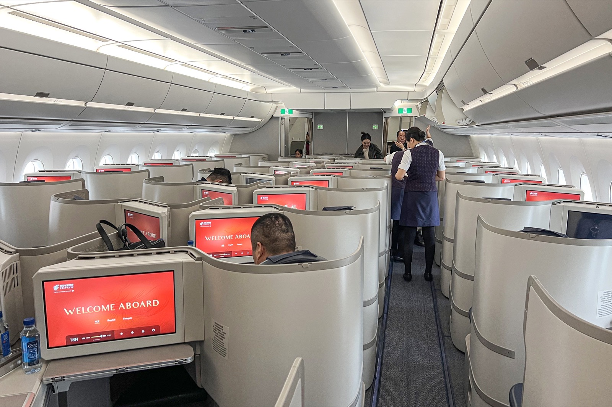
查询方法也很具体：订票时记下航班号与机型，去 aeroLOPA 或 SeatGuru 这类座位图网站查这架飞机的实际布局。同一家航司的同一款机型，甚至可能因为交付批次不同而装着两代完全不同的座椅——这种情况在大型航司里非常常见。
超级经济舱：长途飞行里性价比最高的一档
超级经济舱诞生于 1990 年代初，长荣航空常被认为是最早系统性推出这一舱等的航司之一。它的产品逻辑很清楚：商务舱太贵，经济舱太挤，中间存在一个巨大的、愿意多付五成到一倍价钱换取明显改善的市场。
它的实际改善集中在几个地方：座椅宽度增加约 2–5 厘米、前后间距增加 15–20 厘米（从 31 英寸左右增加到 38 英寸左右）、每排座位数减少（例如宽体机上从 3-4-3 变成 2-4-2 或 2-3-2）、独立的小舱区意味着更少的人共用洗手间、行李额度和值机优先级也通常有提升。
对超过十小时的航班来说，这些改善的边际效用非常高。一个粗略但好用的判断标准是：如果超级经济舱的加价在经济舱票价的 60% 以内，且航段超过十小时，通常值得。超过一倍，就要认真考虑这笔钱拿去升商务舱还差多少。
经济舱内部的十几个字母
现在讲这张登机牌上最容易被误读的字段。
登机牌上印着「ECONOMY」，右下角另外还印着一个孤零零的「Y」。很多人以为这两处是同一个意思的两种写法，其实不是。前者是舱等（cabin）——飞机上物理隔开的客舱；后者是舱位代码（fare class / booking class）——同一个物理客舱内部的价格与权利等级。
一架飞机的经济舱里坐着的三百个人，可能分属十几个不同的舱位代码。他们坐同样的椅子、吃同样的餐食，但在下面这些方面完全不同：票价、能否改期、改期收多少手续费、能否退票、退多少、能累积多少里程、能否累积精英资格、行李额度、选座是否免费、超售时的优先级、以及能否用里程候补升舱。
| 舱位代码 | 大致含义 | 典型特征 |
|---|---|---|
| F / A / P | 头等舱 | F 为全价，A、P 为折扣头等 |
| J / C / D / I / Z | 商务舱 | J 为全价，C 次之，D / I / Z 通常是深折扣商务，里程累积比例可能明显下降 |
| W / E / T / R | 超级经济舱 | 各航司定义差异很大，W 通常是全价超经 |
| Y / B | 全价经济舱 | 可免费改期、可退票、里程按 100% 或更高比例累积 |
| M / H / K / L | 中等折扣经济舱 | 改期收费但允许，里程通常按 70%–100% 累积 |
| Q / V / S / N | 深折扣经济舱 | 改期费用高昂或不允许，里程按 25%–50% 累积 |
| O / G / X / U | 最低价/特殊用途 | 常见于促销票与团体票，很多情况下完全不累积里程，且不允许任何变更 |
重要提醒：上表是行业内的常见约定，但每家航空公司的具体定义并不相同。国际航空运输协会只对少数几个字母有约定俗成的含义（F=头等、J/C=商务、Y=全价经济），其余字母完全由各航司自行定义。任何"通用舱位对照表"都只是经验归纳，不是规范。查询时必须以该航司自己公布的舱位对照表为准。
一个能立刻说明"字母不通用"的例子：W 在很多航司是超级经济舱的代码，但在新加坡航空自家的经济舱累积表里，W 是一个只累积 75% 的折扣经济舱。同一个字母，两种完全不同的东西。
把抽象的字母换成真实的数字
光看字母还是抽象的。下面这张表来自新加坡航空公布的官方里程累积文件（2026 年 7 月版），它规定的是"坐这些航司的这些舱位，能往 KrisFlyer 账户里记多少比例的里程"。真实的数字比任何解释都有说服力：
| 承运航司 | 经济舱各舱位代码的里程累积比例 |
|---|---|
| 新加坡航空 | 100% — B, E, Y ／ 75% — H, M, W ／ 50% — K, N, Q, V, G |
| 酷航（新航旗下廉航） | 20% — A, F, P, R, S, Y ／ 15% — B, H, M, W ／ 10% — N, O, X |
| 汉莎 / 瑞士 / 奥地利 / ITA | 100% — B, Y ／ 75% — M, U, H ／ 50% — Q, V, W, S ／ 10% — T |
| 美国联合航空 | 100% — A, B, E, H, M, O, R, U, Y ／ 75% — Q, V, W ／ 50% — L, S, T ／ 25% — G, K ／ 10% — N |
| 全日空 | 125% — E, G ／ 100% — B, M, N, Y ／ 75% — H, Q, U ／ 50% — K, L, S, T, V, W |
| 中国国际航空 | 110% — G ／ 100% — Y, B, M, U, E ／ 50% — H, Q, V |
| 长荣航空 | 110% — K, L ／ 100% — B, M, P, T, Y ／ 50% — H, Q, S |
| 泰国国际航空 | 100% — A, B, H, M, Q, U, Y ／ 50% — K, T, S |
| 土耳其航空 | 100% — A, B, E, H, M, O, Q, S, Y ／ 50% — L, T ／ 25% — V |
| 加拿大航空 | 100% — A, B, H, M, O, E, Q, U, V, Y ／ 50% — S, T, L, W ／ 25% — K, G |
| 韩亚航空 | 100% — A, B, E, H, K, M, Q, S, Y ／ 70% — V, W |
两处值得盯一下：
第一，汉莎的 T 舱只累积 10%。一段六千公里的欧洲长途，T 舱票只给 600 里程。这比常说的"特价票只有一半"要极端得多。
第二，同集团、同航线，新航 Y 舱累积 100%，旗下廉航酷航 N 舱累积 10%——差十倍。这一条几乎是整个体系的隐喻：里程从来不是"飞了多远"的记录，它是票价的影子。你付得多，公司愿意给你的锁链就长一点。
这套字母体系有两个直接的实用价值。
第一，它解释了为什么"同一个航班的经济舱票价每天都在变"。航空公司并不是在调整一个价格，而是在开关不同的舱位库存。一个航班的经济舱可能被划分成十几个"桶"，每个桶有各自的价格和固定数量。最便宜的桶卖完了，系统就只报下一档的价格——你看到的"涨价"，其实是低价桶售罄。这也是为什么同一趟航班的价格有时会下降：临近起飞时上座率不理想，航司会重新打开低价桶。
第二，它决定了这趟飞行能给你留下多少资产。这一点在第五章会详细展开，这里先埋一个伏笔：一张深折扣经济舱票飞一万一千公里，累积到的里程可能只有全价票的四分之一，甚至一里都没有。买票时多看一眼舱位代码，往往比比价便宜的那两百块更值钱。
Basic Economy：把经济舱再劈一刀
过去十年出现了一个新品类：基础经济舱（Basic Economy）。它是全服务航空公司为了对抗廉价航空而设计的产品——票价压到跟廉航接近，代价是剥离几乎所有附加权利。
下面是美国三大航截至 2026 年的基础经济舱限制对照，看清楚被剥掉的是哪些东西：
| 限制项 | 美国航空 | 美国联合航空 | 达美航空 |
|---|---|---|---|
| 提前选座 | 不可，值机时随机分配 | 不可 | 不可 |
| 占用行李架的手提行李 | 允许 1 件 | 允许 1 件 | 不允许，只能带能塞进座位下方的个人物品，更大的包须付托运费 |
| 改期 / 退票 | 不可 | 不可改不可退 | — |
| 登机顺序 | 最后一批 | 最后一批 | 最后一批 |
| 升舱资格 | 无 | 无 | 无 |
| 里程与等级进度 | 2025 年 12 月起完全归零：无里程、无等级进度 | 有，但比例很低 | 不产生任何等级进度 |
但基础经济舱真正的作用不是"卖给价格敏感的人"，而是当一道围栏（fare fence）。它的设计意图是：通过把这张票做得难受到某个特定程度，让原本愿意多付一点钱的人不至于买到便宜票，从而被推回标准经济舱。它存在的目的一半是被买，一半是被看。
而这道围栏还在继续加高。美国航空在 2025 年 12 月让基础经济舱的里程完全归零，2026 年 5 月起连精英会员买基础经济舱也不再享有免费提前选座。基础经济舱正在从"便宜票"演化成"惩罚性票"。
它的存在也解释了一个常见的困惑：为什么在比价网站上看到某家全服务航司的票价低得不合理。答案往往是那是一张基础经济舱票，把加行李、加选座、加改签的钱补回去之后，总价可能反而更高——而这正是设计目标。
选座：预算有限时最大的杠杆
如果预算不允许升舱，那么在同一个经济舱内部，选座是唯一能显著改变十五小时体验的变量，而它常常是免费的。
首先要理解一件反直觉的事：客舱的舒适度主要由航空公司决定，不是由飞机型号决定的。同一款波音 777，有的航司排 3-3-3（每个座位约 18.5 英寸宽），有的排 3-4-3（每个座位约 17 英寸宽）——后者在同样的机身里多塞了一列人，每个人窄了将近四厘米。这是同一款飞机上两种截然不同的商品。
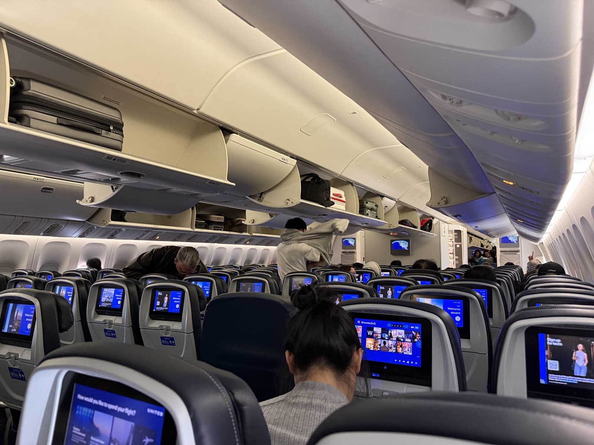
在确定了机型和布局之后，选座的实用原则大致如下：
- 避开洗手间和厨房（galley）前后两排。整段航程都有人排队、有灯光、有推车碰撞声，且这些位置的椅背常常不能后仰。
- 紧急出口排的腿部空间大，但代价是扶手不能抬起、部分座椅不能后仰、且脚下不能放随身物品。某些航司对这些座位收费。
- 隔板排（bulkhead）腿部空间好，但没有前排座椅底下的空间放包，而且常被分配给带婴儿的乘客（婴儿摇篮挂在隔板上）。
- 机翼上方的位置颠簸感最弱——这是物理事实，飞机绕重心转动，越靠近重心（大致在机翼位置）的座位，俯仰和滚转带来的位移越小。最后几排的颠簸感最强。
- 2-4-2 布局里的靠窗两座、以及 3-3-3 里的过道座位，是长途上最值得抢的两类位置。
- 值机开放的那一刻去选座。大多数航司在起飞前 24–48 小时开放免费选座，好位置在几分钟内会被拿光。
ZONE 2：登机组是怎么排出来的
登机牌上那个「ZONE 2」几乎没人研究，但它是一份公开的身份排序表。
登机顺序在各家航司之间不尽相同，但大体遵循同一套优先级：先是需要协助的乘客和带小孩的家庭，然后是头等舱与商务舱、以及联盟高等级会员（这两类人常常被合并成一个优先登机组），接下来是超级经济舱和中等级会员，最后是经济舱——而经济舱内部还会再按位置或按票价细分成两到四个组。
经济舱内部的排序逻辑，各家的做法有两种流派。一种是按物理位置：后排先登机，从后往前填，理论上能减少互相堵塞。另一种是按票价与会员等级：买了贵一点的经济舱票、或者持有低级别会员卡的人先登机，基础经济舱排在最后。近年来，第二种做法明显占了上风，因为它把"早点上飞机、行李架还有空位"变成了一项可以出售或用作会员权益的商品。
顺带一提，学术界研究过什么样的登机顺序最快，结论相当反直觉：严格从后往前登机并不是最优解——同一排的人会在过道里互相等待。多项模拟与实测研究显示，让乘客先按靠窗、再中间、最后过道的顺序登机（业内称 WilMA），或者采用更复杂的交错顺序，效率明显更高；而完全随机登机的效率，居然也比严格从后往前要好。之所以现实中很少采用最优方案，是因为它与"按票价和会员等级排序"的商业诉求直接冲突。
价格是怎么定出来的：收益管理
现在回答那个最初的问题：为什么同一个客舱里的人付了完全不同的钱。
航空公司卖的是一种极端易腐的商品——飞机一旦推出廊桥，所有空座的价值瞬间归零，而且不可库存、不可退回。与此同时，多飞一名乘客的边际成本极低（多烧一点油、多一份餐食）。这两个特征加在一起，导致了一个结论：只要还有空座，任何高于边际成本的价格都值得卖；但又不能让愿意付高价的人买到低价票。
解决这个矛盾的学问叫收益管理（revenue management，也叫 yield management）。它诞生于 1980 年代美国航空业放松管制之后：低成本新进入者用极低的票价冲击市场，传统航司发现单纯跟着降价会死，于是转而开发系统，把每个航班的座位切成不同价格的库存桶，用预测模型决定每个桶开多少个、什么时候关掉。这套系统后来被酒店、租车、演唱会、乃至网约车行业全盘照抄。
它的核心是需求预测与舱位库存控制：系统根据这条航线的历史数据，预测在起飞前每一天会有多少人来买票、其中多少人愿意付高价。如果预测显示临近起飞会有足够多的商务旅客来买全价票，系统就会提前关掉低价桶，把座位"存"给他们；如果预测显示需求疲软，系统就会释放更多低价库存。
一个反直觉的细节：库存是"嵌套"的
这里有一个绝大多数人都误解的机制，值得单独讲。
如果座位是被硬性分割的——比如"低价 T 舱固定 50 个，高价 Y 舱固定 20 个"——就会出现荒谬的结果：Y 舱那 20 个卖完之后，即使 T 舱还剩着空位，系统也必须拒绝一个愿意付高价的旅客。这显然是在烧钱。
所以实际使用的是嵌套式限额（nested booking limits）：高价舱位可以占用为低价舱位预留的库存，低价舱位不能反过来占用高价的。因此"T 舱还剩 50 个"的真实含义是——"在总剩余座位里，最多还允许 50 个以 T 舱的价格卖出"，而不是"有 50 个 T 舱专属座位"。
这解释了那个常见的困惑：为什么明明显示"还有座位"，最便宜的那一档却买不到了？因为座位确实还在，只是允许以那个价格卖出的额度用完了。
决定每个桶开多少的数学工具叫期望边际座位收入（EMSR）。它的思路一句话就能说清：把第 N 个座位留给高价舱位的期望收益，等于高价票价乘以"这个座位真能以高价卖出"的概率。当这个期望值低于眼前低价客户能带来的确定收益时，就该把座位放出来低价卖。价格曲线的形状，就是这个比较结果随时间变化的轨迹。
近年的演进方向是从"十几个固定档位"转向连续动态定价——价格不再必须落在预设档位上，而可以随需求实时连续变化。顺带说一句，这套逻辑后来被完整地复制到了里程侧：美国三大航都已取消固定的里程兑换表，改为随现金票价浮动。第五章会讲这件事的后果。
这解释了几个常见现象：
- 为什么临近起飞票价暴涨。不是航司在趁火打劫，而是低价桶早已按计划关闭，留给最后时刻的本来就是高价库存——这些库存的目标客户是那些行程无法提前确定、且价格不敏感的商务旅客。
- 为什么"提前多久买最便宜"是个伪命题。价格曲线不是时间的单调函数，而是"预测需求 vs 实际售出"的动态博弈结果。同一条航线，旺季和淡季的最优购买窗口完全不同。
- 为什么往返票有时比单程票还便宜。这是收益管理用来区分客户类型的经典手段——商务旅客往往需要周中往返，休闲旅客通常跨周末。历史上航司用"必须包含周六过夜"这类规则作为筛子，把两类客户分开定价。
- 为什么中转票经常比直飞便宜，哪怕中转那段包含了直飞的整个航程。因为直飞航线上竞争少、定价权集中，而中转市场上有十几家航司在互相压价。
隐藏城市订票：为什么它可行，又为什么不值得做
最后一条现象衍生出一种叫隐藏城市订票（hidden city ticketing / skiplagging）的做法：既然 A→B 的直飞票可能比 A→B→C 的联程票更贵，那就买 A→B→C 的票，在 B 下机不走了。
它在技术上确实可行，但风险清单很实在：
- 只能单程用。一旦你未搭乘某个航段，后续所有航段（包括回程）会被系统自动取消。所以它只能用在单程行程，或往返行程的最后一段。
- 不能托运行李。行李会被挂到最终目的地 C，你在 B 下机时拿不到。
- 违反运输合同。各大航司的运输总条件普遍把它列为违规使用客票，航司有权取消客票并追讨差价。
- 不能形成模式。偶尔一次难以察觉，反复操作会被系统标记。
不过这件事的法律状态有个很有意思的细节值得说清楚。2023 年，美国航空在得州起诉了一家专门帮人搜索隐藏城市票价的网站，索赔约 9,440 万美元。2024 年 10 月陪审团判该网站赔偿约 940 万美元——但胜诉理由是著作权侵权（未经授权展示美航的 logo，以及用其名称标识误导消费者以为该网站是获授权的订票伙伴），在商标侵权一项上陪审团没有判赔。
换句话说：法院并没有裁定"隐藏城市订票本身违法"。美航赢的是"你用了我的商标图案"，不是"你教人跳程"。判决之后那家网站仍在继续提供美航机票，双方均已上诉。
这个区分值得记住，因为它准确描述了这类操作的真实性质：它不是违法行为，是违约行为。后果不来自法律，来自你和航空公司之间那份你从没读过的合同。
超售：机场里的那场拍卖
接下来是航空业最容易被误解、也最有意思的一项操作。
在美国的机场登机口，偶尔能看到这样的场面：广播里说本次航班座位已满，需要有乘客自愿改乘后续航班，愿意的可以获得补偿；起初是几百美元，没人应，价格往上加，五百、八百、一千二……最后有人举手，接受补偿，办理改签，皆大欢喜。第一次见到的人往往一头雾水：明明所有人都买了票，怎么会座位不够？
原因是航空公司故意多卖了票。
这不是欺诈，而是一项被监管机构认可、且有明确规则约束的商业实践。它的基础是一个统计事实：每个航班都会有一定比例的乘客最终没有出现——改了行程、误了前序航班、临时取消、或者干脆忘了。这个比例叫缺席率（no-show rate），在不同航线、不同舱位、不同季节上差别很大：全价可退票的商务旅客缺席率高得多，深折扣不可退的休闲票缺席率则很低。
如果航司严格按座位数卖票，那么每个航班都会带着若干空座起飞——这些座位本来可以卖给需要的人，现在它们的价值归零了。于是航司做了一件从概率角度看很自然的事：根据这条航线的历史缺席率，多卖出一小部分票，让"实际到场人数"的期望值尽可能贴近座位数。
建模的输入很细：不是按航线，而是按每一个具体航班——这条航线在这个星期几、这个时段的历史缺席率，舱位组合（可退改的高价票缺席率显著更高），季节与节假日，以及有多少中转旅客（他们的缺席由上游航班的延误驱动）。常见的缺席率参考量级是 5%–8%：一架 180 座的飞机，如果历史缺席率 5%，就大约卖 189 张票。现代做法已经从"航班级"细化到"旅客级"——用模型预测具体哪位旅客可能不出现。
大多数时候这个赌注是赢的：多卖的票恰好被缺席者抵消，飞机满座起飞，没有人察觉发生过什么。而"被强制赶下飞机"这件事，实际上罕见到超出直觉。美国交通部的统计里，主要航司的非自愿拒载率约为每万名旅客 0.33 人次——大约每三万名旅客中才有一人。也就是说，超售非常普遍，被强制拒载极其罕见，这两句话必须一起说，否则很容易对超售产生错误的恐惧。系统真正的运作方式是：绝大多数超售靠升舱和花钱征集自愿者就消化掉了，强制拒载是最后手段。
但概率就是概率，总有一部分航班上所有人都来了。这时候航司必须处理超出的那几个人——而这里出现了一个法律上至关重要的区分。
- 航司在登机口公开征集自愿者，用补偿换座位
- 本质是一场公开拍卖：从较低金额起价，无人接受就往上加
- 补偿金额没有法定上限，由航司与乘客协商确定
- 补偿形式可以是现金、支票、代金券或里程；后两者的实际价值往往打折扣，值得当场问清楚
- 通常还包括改签到后续航班、必要时的餐食与住宿
- 征集不到足够的自愿者时，航司按内部规则强制选人
- 被选中的通常是：最晚办理值机的、票价最低舱位的、没有会员等级的
- 补偿受法律强制规定，按票价的百分比计算，并设有上限
- 各法域规则不同：美国按延误时长分档，欧盟按航程距离分档
- 这是航司极力避免的情形——不仅要赔钱，还是公关灾难
美国的非自愿拒载赔偿公式写在联邦法规里，是这样的（金额上限每两年按通胀调整一次，下面是截至 2026 年 8 月的现行数字）：
| 替代航班的到达延误 | 美国国内航班 | 从美国出发的国际航班 |
|---|---|---|
| 1 小时以内 | 无须赔偿 | 无须赔偿 |
| 中等延误 | 1–2 小时：票价的 200%，上限 $1,075 | 1–4 小时：票价的 200%，上限 $1,075 |
| 较长延误 | 超过 2 小时：票价的 400%，上限 $2,150 | 超过 4 小时：票价的 400%，上限 $2,150 |
这里有一条绝大多数乘客不知道、但价值直接可以用钱衡量的规则：在非自愿拒载的情形下，你有权要求现金或支票，不必接受代金券。代金券的实际价值远低于面值——它有有效期、有不可用的黑名单日期、通常不可转让、往往不能与促销叠加。一张 800 美元的代金券和 800 美元现金，是完全不同的两样东西。
而正因为自愿补偿没有上限、非自愿补偿有法定标准且伴随巨大的行政与声誉成本，航空公司有强烈的动机把价格一路往上加，直到有人接受为止。广播里那个不断上涨的数字，本质上是一场反向拍卖——出价从低往高走，第一个接受的人成交。
那场把规则改写了的事件
今天航司愿意在登机口喊出四位数美元，源头是 2017 年 4 月 9 日的一趟支线航班。
那趟航班从芝加哥飞路易维尔，飞机满员。起飞前 19 分钟，四名机组人员被临时安排上这班飞机——他们要在次日执飞路易维尔出发的航班。航司需要四个座位，先提供 400 美元代金券加酒店和次日改签（意味着延误 21 小时以上），无人接受；加到 800 美元，仍无人接受。
于是转入强制拒载，按优先规则选中了四名乘客。其中一位 69 岁的医生拒绝下机，理由是次日要出诊。机场安保人员将其强行拖离，过程中他的脸撞在扶手上，鼻梁骨折、两颗门牙脱落、脑震荡，需要重建手术，满脸是血地被拖过过道。全过程被其他乘客拍下，几小时内传遍全球。
这个事件真正值得记住的不是"航司很坏"，而是：那天航司做的每一步都在联邦法规允许的范围内。先征集自愿者、加价、无果后按公示的优先规则强制拒载——流程完全合规。失败发生在第四步：它把执法权力引入了一场商业纠纷。
此后的规则修补，本质上都是在把"强制"这个选项从流程里拆掉：
- 涉事航司把自愿补偿的授权上限从 1,000 美元提高到 10,000 美元，并承诺不再动用执法人员带离乘客、已登机乘客不会被要求让出座位（安全安保原因除外），机组调岗必须至少在起飞前 60 分钟完成
- 另一家主要航司把一线主管可自行批准的补偿授权从 1,350 美元提高到 9,950 美元
- 西南航空的做法最彻底：直接停止超售
- 美国交通部在 2021 年发布规则，禁止对已完成值机并拿到登机牌的乘客实施非自愿拒载
把这几条放在一起看，整个行业其实是在承认一件事：这本来就该是一个纯粹的价格问题。400 美元加不动，那就加到 10,000 美元——总会有人答应。
竞价的策略：这取决于航司用哪种拍卖规则
这里有一个很实际、也很少被讲清楚的细节：不同航司用的拍卖机制不一样，因此乘客的最优策略也不一样。
- 所有自愿者最终都按航司给出的最高报价获得补偿
- 策略：可以先报低价、先答应
- 因为只要有一个人硬扛把价格抬上去，所有已接受的人都跟着拿最高价——先举手不吃亏
- 你接受的是哪一档，拿到的就是哪一档
- 策略：必须自己把握时机
- 答应太早会锁死在低价上；等太久可能根本不被选中。这家航司现在还支持在值机时通过 App 电子投标，在登机口开口叫价之前就完成征集
不管哪种机制，这几条风险都是真的：
- 硬扛可能一无所获。很多航班最后因为缺席或误接而自行空出了座位，超售自然消解——你既没拿到补偿，也照常飞走了。
- 地面人员会优先选出价最低的人。你报得高，只是提高了不被选中的概率。而航司需要的自愿者数量往往只有一两个。
- 加价通常是逐级的，并在临近关闭登机门时到达峰值。
- 真正的关键变量不是价格，是你的时间成本。如果后续航班在两小时后、行程不赶、也没有需要衔接的联程，一笔可观的补偿加上后续航班确实是笔划算交易。如果后面还有转机、有会议、有人在接机，任何金额都不值得。
- 接受前必须问清四件事：补偿是现金还是代金券（代金券有效期多久、有无黑名单日期、可否转让）；改签的具体航班和时间；是否是确认座位还是候补；以及如果要过夜，食宿由谁承担。行李已经托运的，还要确认行李怎么处理。
三种监管哲学
最后一件事：这套机制在美国之所以运转得如此活跃，跟当地的监管框架和航线密度直接相关——美国国内航线网络极密，一天之内改签到后续航班通常不难，这让"用补偿换座位"成为一笔双方都划算的交易。而不同法域对同一件事的处理方式差别很大，对比起来相当有意思：
| 美国 | 欧盟 | 中国 | |
|---|---|---|---|
| 赔偿金额 | 法律直接规定：票价的 200% / 400%，上限 $1,075 / $2,150 | 按航程距离定额：≤1,500 km 赔 €250；1,500–3,500 km 赔 €400；>3,500 km 赔 €600。与票价无关 | 法律不规定金额，只要求航司自己制定标准并在网站、售票场所、值机柜台公示 |
| 现金请求权 | 非自愿拒载可要求现金 | 规定为赔偿金 | 取决于航司自定标准。国航等提供代金券 / 里程 / 现金三选一 |
| 处置流程 | 必须先征集自愿者 | 必须先征集自愿者 | 规定得比谁都细：行业标准要求先免费升舱（不得收差价）→ 再分两个时点征询自愿者 → 最后才按公示的优先规则拉减；甚至写明"登机口征询时尽量选择无托运行李或行李最后装机的旅客" |
| 后续服务 | — | — | 明文规定：优先安排最早可用航班、非自愿退票不收退票费、等待期正值用餐时间须提供免费餐饮、后续航班间隔 4 小时以上须提供免费酒店 |
三种设计对应三种立法意图，值得想一想：
欧盟在惩罚航司。定额赔偿与票价脱钩，意味着一张 50 欧元的廉航票被拒载也照赔 250 欧元——赔偿可以是票价的数倍，直接让在廉价票上超售变得无利可图。
美国在补偿乘客。按你的实际损失比例赔，同时设一个绝对上限，避免赔偿脱离实际损害。
中国在规范流程。把"必须先升舱、再征询、最后才拉减"这套阶梯连细节都写进标准，但金额完全交给航司自定。管过程而不管结果——这是一种与前两者完全不同的监管思路。作为参考，国航公示的标准里，国内航线等待四小时以内的经济舱旅客可选 1,000 元代金券、2,500 公里里程或 500 元现金；国际长途最高一档是 8,000 元代金券、20,000 公里里程或 4,000 元现金。
上述金额与规则为截至 2026 年 8 月的现行版本。美国的赔偿上限按通胀两年一调，欧盟的规则在 2026 年 7 月刚完成一轮改革（金额与延误门槛均保留原状，变化集中在家庭同座、无障碍保护等方面，新规预计 2027 年起适用），中国民航业也在研究制定分级补偿的团体标准。出行前请以当期规定和航司公示为准。
加多少钱，到底能买到什么
最后把上面所有内容折算成一张实用的表。以一段十五小时的跨太平洋航线、经济舱基准票价约五千元人民币为例：
注册常旅客账户并填进订单——这是全表里回报率最高的一项，成本为零。
值机开放的第一时间上线选座，避开洗手间与厨房，争取 2-4-2 布局的靠窗两座或 3-3-3 的过道位。
提前 24 小时预订特殊餐食（素食、海鲜、清真、低盐等）——不额外收费，而且通常先于普通餐食送达。
订票前查一次机型与座位图，在同价位的几个航班里挑客舱布局更宽松的那个。
付费选定一个明确更好的座位：紧急出口排、前排、或者能锁定的靠窗双座。
从基础经济舱升级到标准经济舱，换回选座权、改签权和完整的里程累积——这一项经常被证明比它的价格更值。
在中转方案里换一个体验更好的枢纽，或把衔接时间从五十分钟调整到两小时。
换一家客舱产品明显更好的航司飞同一段——这是这个价位段最实际的用法。同样是十五小时，坐进一个 3-3-3 的新客舱和一个 3-4-3 的老客舱，是两种体验。
促销期的超级经济舱有时会落在这个区间，需要留意。
用直飞替代中转，省下四到六小时和一次起降。
常规价格的超级经济舱。对超过十小时的航段，这是价格与体验之间斜率最陡的一段——多付一倍票价，睡眠质量的改善远超一倍。
或者用来把一趟廉价的多段中转，换成一趟直飞的正规全服务航班。
商务舱的现金票价通常从这里起步。需要说明的是：跨太平洋航线的商务舱票价一般在经济舱的 3 到 6 倍之间，"加一千块升商务舱"在长途国际航线上不存在。
真正让普通人坐进商务舱的路径不是现金，而是里程兑换——这是第五章的主题。用里程换长途商务舱，是整个常旅客体系中价值密度最高的一种用法。
这张表里最值得记住的一行是第一行。绝大多数人在买票时反复比较那两三百块的差价，却让"+0 元"那一栏里的每一项白白流走——尤其是最后那个空着的里程卡号。
飞机图鉴
问：不需要成为飞机迷，但站在登机口看一眼窗外，应该能说出"这是一架什么飞机、大概什么定位、我这趟会坐得舒服吗"——这需要知道多少东西？
答案是：比想象中少得多。民航客机的世界高度集中，两家公司占据了绝大部分市场，型号命名有清晰的规律，外观识别有几条可靠的特征。掌握这一章的内容之后，绝大多数机型可以在几秒钟内认出来。
先建立坐标：窄体与宽体
所有客机首先分成两大类，这个分类比任何型号都重要。
窄体机（narrow-body）：机舱内只有一条过道，横排通常坐 6 个人（3-3）。载客 100–240 人，航程一般在 5,000–7,000 公里以内，主力用于国内航线和三四小时以内的国际航线。全世界在役客机里，窄体机的数量远超宽体机。
宽体机（wide-body）：机舱内有两条过道，横排坐 7 到 10 个人。载客 250–550 人，航程 11,000–17,000 公里，是所有跨洋长途航线的载体。
还有一类支线机（regional jet）：50–130 座，单通道横排 4 人（2-2）或 5 人（2-3），飞一两个小时的短程支线。在中国相对少见，在北美和欧洲非常普遍。
这个分类的实用含义是：看到座位号里出现 H、J、K 这些靠后的字母，或者排数超过 40，基本就是宽体机。开篇那张登机牌上的 60J，一眼就能判断出是一架大家伙。
波音：数字里的年代
波音民用喷气客机全部以 7 开头、7 结尾，中间的数字大体按推出顺序递增。这套命名从 1950 年代沿用至今，本身就是一部年代表。
波音在 1997 年合并了麦克唐纳-道格拉斯，把 MD-11、MD-80 系列一并收入。MD-11 是三发宽体机（尾部有一台发动机），在客运领域已基本消失，但作为货机还活跃了很久。
值得一提的是波音的客机命名后缀：ER 表示加大航程（Extended Range），LR 表示超远程（Longer Range），F 表示货机（Freighter）。看到 777-300ER，就知道这是 777 的加长型加大航程版本。
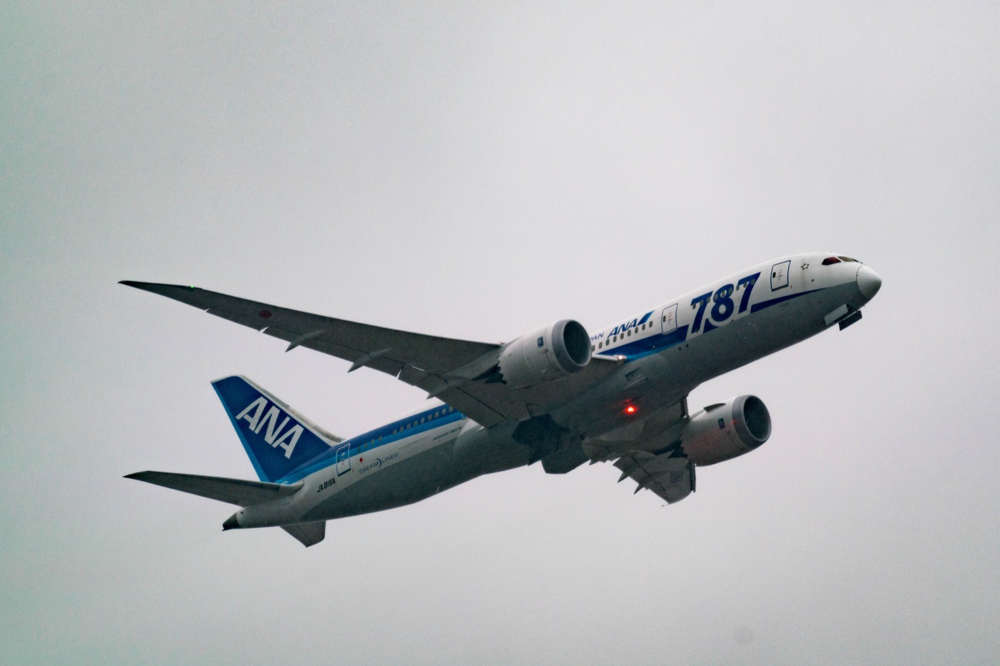
空客：字母加三位数
空客民机全部以 A 开头加三位数字。第一位大体表示世代与量级，后两位是型号序列。空客是欧洲多国合资的产物，1970 年成立时被普遍认为不可能撼动美国厂商，如今与波音平分市场。
两家之外
巴西航空工业（Embraer）是全球第三大民机制造商，主打 70–150 座的 E-Jets 系列（E170/175/190/195 及第二代 E2）。它的客舱是 2-2 布局，没有中间座——对乘客来说这是个不小的优点。在北美和欧洲的支线航线上极为常见。
ATR（法意合资）生产 ATR 42/72 涡桨支线机，在岛屿、山区和短跑道航线上不可替代。螺旋桨飞机在噪音上确实不如喷气机，但在一小时以内的航段上，它的经济性无可匹敌。
中国商飞（COMAC）目前有三款产品。支线机 C909（原名 ARJ21，2024 年更名）截至 2025 年底已交付超过 180 架，并已在印尼、老挝、越南等东南亚国家投入运营。对标 A320 与 737 的单通道干线机 C919 于 2022 年 12 月交付首架给东方航空，截至 2025 年底累计交付约 32 架；产能爬坡明显不及预期——2026 年第一季度只交付了 3 架，咨询机构对 2026 全年的预测约为 25 架。宽体机 C929（约 280 座、航程 12,000 公里）仍处于详细设计阶段，商飞的公开目标是 2032 年取证、2035 年前后投入运营。
这几个数字放在一起，恰好说明了大型客机制造业真正的门槛在哪里：C919 已经能飞、能载客、能卖，卡住它的是产能爬坡、供应链（尤其发动机与航电大量依赖国外供应商）和全球适航互认。把飞机设计出来是第一关，把它每月造出几十架、并让全世界的监管机构都认，是完全不同的另外几关。这个从"两家寡头"到"三方格局"的过程会以十年为单位计量，但方向已经出现了。
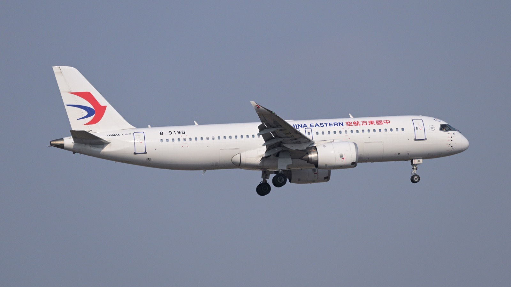
登机口识别法：几秒钟判断眼前是什么
下面这套流程按可靠性排序，从最容易看到的特征开始。
- 数发动机。四台发动机、且是全长双层——A380，唯一答案。四台发动机、前部有驼峰——747。四台发动机、机身细长无驼峰——A340（今天已很罕见）。
- 数过道 / 看排数。两条过道就是宽体机，一条就是窄体机。这一步决定了后面在哪个集合里找。
- 看机头形状。波音的机头较尖，驾驶舱风挡上沿有明显的折角，两侧还常有一小块斜切的"眉窗"痕迹；空客的机头更圆钝，风挡轮廓更规整。这条经验略需练习，但一旦掌握非常快。
- 看发动机短舱。737 的短舱底部被压扁成非圆形（离地间隙不够），这是最好认的一个特征；787 和 747-8 的短舱后缘是锯齿形；A320 系列的短舱是规整的圆形。
- 看翼尖。737 NG 是向上翘的融合式小翼，737 MAX 是上下都有的分叉式；A320neo 是形似鲨鱼鳍的 sharklet；777 和 787 没有小翼，而是把翼尖后掠拉尖（raked wingtip）；A350 的翼尖是一道向上的连续弧线。
- 数主起落架轮子。每侧六个轮子的只有 777（和 A350-1000）。每侧四个是大多数宽体机，每侧两个是窄体机。
- 看 A350 的"墨镜"。驾驶舱周围那道黑色环形涂装是 A350 独有的设计语言，隔很远都能认出来。
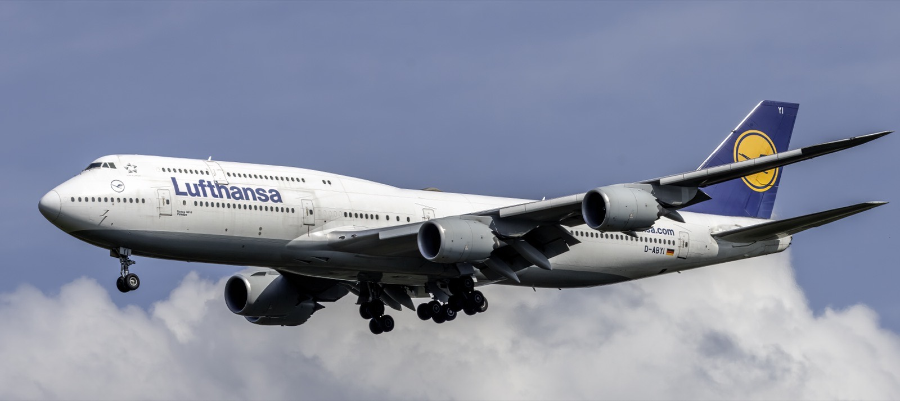
波音 747-8
只要看到四台发动机加前部驼峰，答案唯一。747-8 的发动机短舱后缘也是锯齿形，和 787 同源。这条生产线在 2023 年 1 月关闭，一共造了 1,574 架。
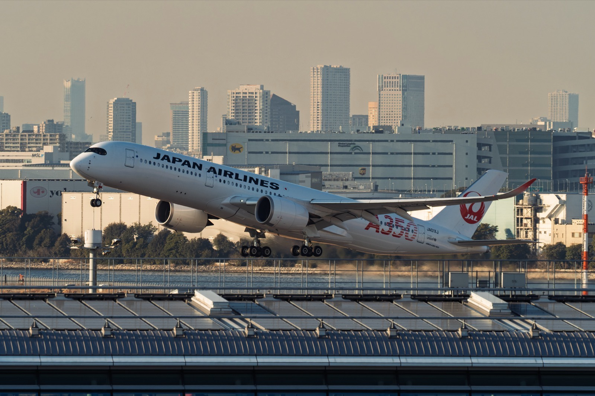
空客 A350-900
驾驶舱风挡外圈那道黑色描边是空客新一代机型的设计语言，隔很远都能认出来。翼尖是一道向上的连续弧线，不是竖起来的小翼。它是第一款拿到 ETOPS-370 的机型。
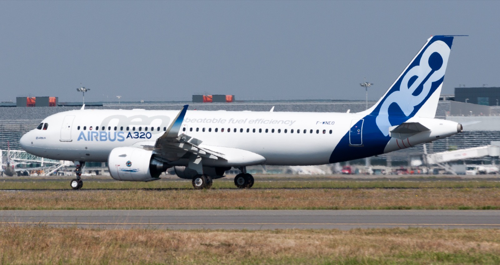
空客 A320neo
翼尖那片又高又干净的单片小翼叫 sharklet，是 neo 系列的标志。发动机短舱接近正圆——对比 737 被压扁的短舱底部，这是区分两家窄体机最快的一眼。
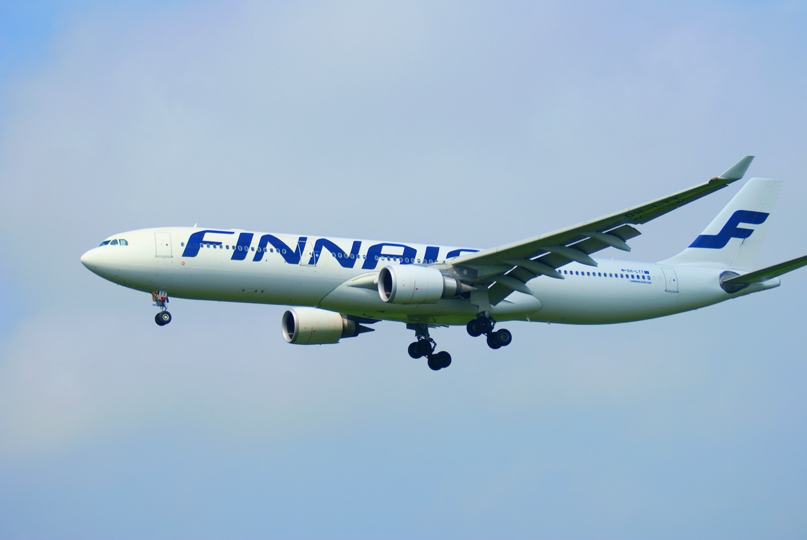
空客 A330-300
全球数量最多的宽体机型之一，是很多航司飞四到十小时航线的主力。开篇那趟行程的第二段 OZ361（仁川→浦东）用的就是这一款——同一家航司、同一个舱等，但换了一款定位完全不同的飞机。
如果实在懒得看外面，还有一个更简单的办法：值机时订单页面通常写着机型，或者在座位图上数一数每排的座位数。3-4-3 且有六十多排，只可能是 A380 主甲板或者少数几款高密度 777。
A380：为什么造它，为什么停产
A380 的设计前提，是一个在当时看来无可争议的判断：随着航空运输量持续增长，主要枢纽机场的时刻资源会越来越紧张，因此未来的增长只能靠"每班装更多人"来消化。如果希思罗、成田、肯尼迪这些机场没有空间再增加航班，那么解决方案就是把飞机造得更大。
按这个逻辑，A380 是一个完美的答案。它把 747 的部分双层扩展成全长双层，典型三舱布局载客约 500 人，高密度单舱布局可达 850 人。它的单座燃油消耗在满载时相当出色，客舱噪音是同代宽体机里最低的之一，乘客口碑长期名列前茅。
然后世界朝另一个方向走了。
波音在同一时期押的是相反的赌注：随着双发远程客机的效率提高，航空公司会绕过枢纽，直接开通城市对城市的"点对点"长途航线。不需要把五百人集中到一架飞机上，而是用两架 250 座的 787 分别飞两条直达航线。这个判断被证明更接近事实——旅客更愿意直飞，而航空公司发现小一号的双发机在航线灵活性和上座率风险上占尽优势。
压垮 A380 的因素叠加在一起：
- 双发经济性的追赶。后面要讲的 ETOPS 规则放宽，加上 777 和 787 这一代双发机的效率跃升，使得"四台发动机"从必需品变成了成本负担。发动机是客机维护成本的大头，四台就是四份。
- 上座率的脆弱性。A380 只有在接近满座时才划算。一架 500 座的飞机坐了 350 人，单座成本会难看得多，而同样 350 人如果坐在一架 787 上则接近满载。航空公司厌恶这种"必须填满才能赚钱"的机型。
- 机场适配成本。它需要 80 米级的机位、加宽加固的滑行道、双层登机桥、更长的旅客与行李处理时间。很多机场为它做了昂贵的改造，另一些干脆放弃。
- 订单的极度集中。它的销量在很大程度上依赖单一大客户——阿联酋航空一家就占了将近一半的交付量。当这个客户停止追加订单，生产线就失去了继续下去的理由。
关键的数字是燃油。按典型密布座位构型计算，A380 的每座百公里油耗约 3.1–3.3 升，比它要取代的 747-400（约 3.2–3.3 升）只省下百分之几；而同代的双发 787-9 只需约 2.3–2.4 升。也就是说，A380 比它的直接竞争对手费油约三分之一。这就是它输掉的那场仗，输得非常干脆。
还有一笔账落在机场身上。A380 翼展 79.75 米，紧贴国际民航组织 Code F 机位（80 米 × 80 米）的上限——它是机场基础设施的最大设计等级。它需要至少两条登机桥才能在合理时间内完成上下客，很多机场为它改造道面、滑行道和登机口。美国政府审计部门曾专门就此出过报告，纽约与新泽西港务局仅在机场道面和滑行道改造上的花费就估计超过 1.75 亿美元。这些成本一旦分摊到每个航班上，就变成了 A380 隐形的额外票价。
空客在 2019 年 2 月宣布终止 A380 项目，末架于 2021 年 12 月 16 日交付给阿联酋航空，是这家公司的第 123 架 A380。总计交付 251 架（另有 3 架不交付的试验机，故也有"254 架"的说法），远低于最初的销量预测，项目在财务上未能收回研发投入。阿联酋一家就占了交付总量的将近一半——这个集中度本身就说明了问题。
但故事有个转折：疫情之后国际长途需求强劲复苏，部分枢纽的时刻和运力重新变得紧张，一些原本打算提前退役 A380 的航司又把它从封存地拉了回来，重新翻新客舱投入运营。阿联酋航空目前计划把 A380 一直飞到 2040 年代初，并投入约 50 亿美元对机队做客舱翻新。一款已经停产的机型因为"座位供不应求"而复活，某种意义上恰恰说明当初那个设计前提并没有完全错——只是它出现的时机不对。
更有意思的是同一批设施同时在做两件相反的事：欧洲的专业拆解商既在把封存的 A380 复飞（已让约 29 架重返运营），也在把另一些 A380 拆成零件（截至 2025 年 5 月已拆解 29 架）。一架 A380 能回收出一两千个可用件，其中不少可以供给 A350 的二手件市场。同一款飞机，一边复活一边解体。
关于 A380 的几个具体问题
这几个问题是坐过 A380 的人最常问的，也都有明确答案。这里以韩亚航空的 A380 构型为例——就是开篇那张登机牌上的那一架。
「二楼是头等和商务舱，一楼全是经济舱」——方向对了一半，实际情况正好反过来。
直觉上，最高级的舱位应该在楼上。但韩亚 A380 的布局是这样的：
| 舱位 | 座位数 | 所在甲板 | 排号 | 横排布局 |
|---|---|---|---|---|
| Business Suite（原头等舱，带门套间） | 12 | 主甲板机头 | 1–3 | 1-2-1 |
| 商务舱 | 66 | 上层甲板前部 | 7–24 | 1-2-1 交错 |
| 经济舱 | 311 | 主甲板中后部 | 28–60 | 3-4-3 |
| 经济舱 | 106 | 上层甲板后部 | 70–83 | 2-4-2 |
合计 495 座。也就是说：最高级的那 12 个座位在一楼，而二楼后半截坐的是经济舱乘客。原因是几何——主甲板机身更宽（内宽 6.58 米，上层要窄一截），机头那一段又是全机最宽敞的位置，用来摆 12 个占地极大的带门套间最合适。上层甲板宽度有限，摆 1-2-1 的商务舱恰好，剩下的后段就摆成 2-4-2 的经济舱。
顺带说一句：A380 上层的那片经济舱，是很多常飞的人专门去抢的位置——舱区小、人少、安静，行李架因为机身收窄反而做成了额外的侧壁储物格，而且 2-4-2 的横排八座比主甲板的 3-4-3 每人宽出一截。同一张经济舱票，两种体验。
顺着这张表还能解决一个小问题：座位号 60J 在哪一层？
在一楼。判断依据有两条，而且互相独立：第一，60 排落在主甲板经济舱的 28–60 区间里，上层经济舱是 70–83 排；第二，也更干脆——上层的 2-4-2 布局根本没有 J 这个字母（座位字母排到 H 为止），只有主甲板的 3-4-3 才有 H-J-K 这个右侧三连座。所以"J"这个字母本身就是它在一楼的证明。而在 3-4-3 里，J 是右侧三座的中间那个——既不靠窗也不靠过道，是这架飞机上比较难受的一类位置。
「A380 的座位比普通飞机宽一点」——这个感觉是真的，而且有一组很干净的对比数据。
最能说明问题的比较来自同一家航司：阿联酋航空的 A380 经济舱座椅宽 18.0 英寸，而它自己的 777 经济舱只有 17.0 英寸——整整窄一英寸，而两者都是 3-4-3 的十座横排。同一家公司、同样的密度、同样的成本压力，差别完全来自机身宽度：A380 主甲板内宽 6.58 米，777 只有约 5.87 米，多出来的七十多厘米横向空间分摊到十个座位上，每人就多出七厘米。
韩亚官方给出的自家 A380 经济舱数据是 18.9 英寸宽、33 英寸座距，在业界属于相当宽裕的一档。一英寸听起来微不足道，但在十五个小时的尺度上，肩膀和胯部有没有那两三厘米余量，差别相当明显。顺带记住一条通则：座椅宽度是航司的选配项，不是机型的固有属性。引用任何数字时都得绑定"哪家航司的哪个构型"。
「飞机大，所以更平稳，不容易受气流影响」——结论成立，但流传最广的那个解释其实站不住脚。
常见的说法是"A380 翼载荷高，所以抗阵风"。阵风带来的过载增量确实大致与翼载荷（重量除以机翼面积）成反比，这一点写在适航规章的阵风载荷公式里。但真去算一下数字，这个解释就崩了：A380 的翼载荷约 680 千克/平方米，波音 737-800 约 634，A320neo 约 644——A380 只高出百分之六七；而波音 777-300ER 高达约 805，比 A380 还高得多。如果翼载荷是主因，那 777 应该比 A380 更稳，这与乘客的普遍体感不符。
真正起主导作用的是另外两条，都跟"大"直接相关：
第一是绝对质量与转动惯量。乘客感受到的不是力，是加速度。同样一阵阵风产生的气动力，作用在 575 吨的 A380 上，与作用在 79 吨的 A320 上，加速度差了七倍多。同理，庞大的转动惯量让它绕自身轴线的俯仰和滚转都更"迟钝"，姿态变化慢而柔。
第二是空间平均效应。大气湍流由各种尺度的涡旋构成，其中真正让人感到颠簸的那些，尺度大致在几米到几十米量级。A380 翼展 79.75 米、机身长 72.7 米，一个涡旋只能作用在它的一部分结构上，其余部分仍处在不同相位甚至相反方向的气流里，正负扰动互相抵消——机体本身对湍流场做了一次低通滤波。而翼展 36 米的 A320 跨不过一个涡旋，只能被整体推来推去。这一条也解释了为什么 A380 比翼展 65 米的 777 还稳：它的尺度更大。
此外还有两个次要因素：细长的大展弦比机翼在受载时会明显弯曲，像悬挂系统一样把峰值加速度吸掉一部分；以及 A380 客舱是同代宽体机里实测最安静的——一项 2022 年发表的宽体机客舱噪音实测研究测得 A380 约 56 分贝，为受测机型中最低。安静会显著降低人对颠簸的紧张感，这一条虽然不改变物理加速度，但确实改变体验。
需要补充的是：这一整段只关于体感，与安全无关。小飞机在颠簸中的结构裕度同样充足，这一点在第七章会用具体的适航载荷标准来说明。
「A380 好像从来没出过事」——这个印象准确，但两个限定条件比结论本身更重要。
严格的说法是：截至 2026 年 8 月，A380 没有发生过导致机体全损的事故，也没有发生过造成机上人员死亡的事故。截至 2021 年底，A380 机队累计飞行已超过八十万架次，这个记录期间一直保持。在宽体客机里这相当不寻常。
但第一个限定是：它经历过非常严重的机械事件，只是都被安全处置了，所以"从未出事"这个说法其实过头了。
最著名的一次是 2010 年 11 月，澳洲航空 32 号班机从新加坡起飞后不久，2 号发动机发生非包容性解体——高速旋转的部件碎片冲出发动机机匣，击穿左翼，切断了多套液压与电气线路，机组面对的是层层叠叠、彼此矛盾的告警。他们在空中盘旋数小时逐项处置，最终安全返场，机上 469 人全部无恙。这次事件至今是机组处置与飞机冗余设计的教科书案例。另一次是 2017 年 9 月，法国航空 66 号班机在格陵兰上空发生发动机风扇毂断裂，整个进气道脱落，备降加拿大，机上 521 人全部安全。
第二个限定更重要：这项记录在相当大程度上来自样本量小。A380 只造了 251 架，运营不到二十年；而 737 和 A320 各造了上万架、飞了几十年，累计架次高出好几个数量级。小样本下的零事故是好消息，但它在统计上支撑不起"这款飞机比别的飞机安全好几倍"这个结论。反过来说，那些偶尔上新闻的机型，事故数量背后也伴随着庞大得多的飞行基数。这个"分子与分母"的道理，是第七章整章的核心，这里先埋下。
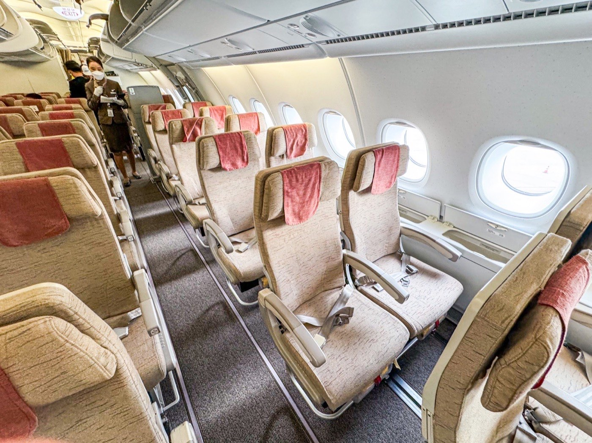
ETOPS：一条规则如何杀死四台发动机
如果只能从这一章记住一个概念，应该是这个。
早期喷气客机的发动机可靠性不高，空中停车（in-flight shutdown）是需要认真考虑的风险。因此监管机构长期规定：双发飞机在航路上任何一点，距离最近的可用备降机场都不得超过 60 分钟单发飞行时间。这条规则的直接后果是双发飞机无法跨越大洋——太平洋和大西洋中部有大片区域，距离任何机场都远超 60 分钟。跨洋航线因此只能由三发或四发飞机执飞。
随着发动机可靠性在 1970–80 年代大幅提升，行业开始推动放宽这条限制。ETOPS（Extended-range Twin-engine Operational Performance Standards，双发延程运行）就是这套放宽机制的名字：满足特定的发动机可靠性记录、维修程序、机组训练与备份系统要求之后，双发飞机被允许在距备降场更远的地方飞行。
60 分钟规则
美国联邦航空局规定双发飞机在航路上任一点距最近可用备降场不得超过 60 分钟单发飞行时间。双发客机被牢牢锁在陆地和近海，跨洋市场由 707、747、DC-10、L-1011 这些三发四发机型垄断。四发飞机存在的制度根源就在这一条规则里。
ETOPS-120：第一次跨越大西洋
环球航空（TWA）的波音 767 获得首个 120 分钟批准，双发客机第一次获准执飞跨北大西洋定期航线。这被视为民航史上的分水岭之一。业内当时流传一个玩笑，说 ETOPS 的意思是"发动机转动，否则乘客游泳"——但事实证明这条路走通了。
ETOPS-180：太平洋也打开了
180 分钟的批准使双发机几乎可以覆盖全球绝大多数商业航路。四发飞机最后的技术壁垒开始崩塌，A340 的处境从此不可逆转。
ETOPS-330 与 ETOPS-370
波音 787 在 2011 年出厂即具备 ETOPS-330；空客 A350-900 在 2014 年拿到 ETOPS-370，是现行最高等级，也是第一款在投入服务之前就拿到 180 分钟以上认证的机型。到这一步，连南太平洋和极地航路这些最偏远的空域也被双发机覆盖，"必须用四发才能飞"的航线在商业上已经不存在了。
这条规则线的后果是决定性的：
- 四发客机失去了存在理由。A340 停产，747 客机版本停产，A380 停产。它们不是被更好的四发机取代，而是被规则的变化连根拔除。
- 直飞航线大量增加。双发中型宽体机（787、A350、A330）的运营成本足够低，使得"从二线城市直飞另一个大洲的二线城市"第一次具备经济可行性。这反过来削弱了超大枢纽的必要性，也就是第一章里波音押的那个赌注。
- 乘客的选择变多了。今天能买到的直飞航线数量，是三十年前的好几倍，这背后是一条监管规则的持续放宽，而不是某项突破性的技术发明。
协和号：不是被一场事故杀死的
协和号是英法合作的产物，1969 年首飞，1976 年投入商业运营。巡航速度达到 2.04 倍音速，巡航高度约六万英尺——在那个高度上能看见地球的弧线和头顶发暗的天空。伦敦到纽约只需三个半小时，比现在快一倍以上。它在技术上是一次辉煌的胜利，在商业上是一场彻底的失败：总共只造了二十架，只有英国航空和法国航空两家运营，而且很大程度上靠政府补贴维持。
很多人以为协和号是被 2000 年那场空难终结的。事故当然是导火索——2000 年 7 月 25 日，一架协和在巴黎戴高乐机场起飞时轧到跑道上一片前机掉落的金属条，轮胎爆裂，橡胶碎块击穿油箱引发大火，造成 113 人死亡（机上 109 人、地面 4 人）。但如果只有事故，一款机型通常会在整改后复飞——协和确实整改（给油箱加装凯芙拉内衬）后复飞过。真正杀死它的是几件事的叠加：
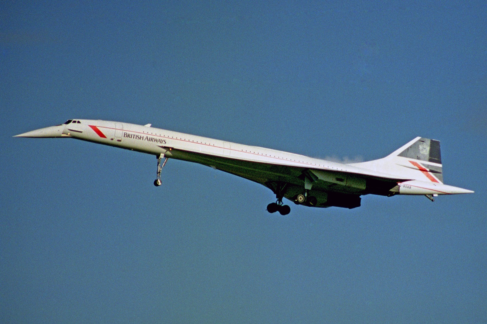
- 音爆导致的航线封锁——这是最致命的一条，比油耗更根本。超音速飞行会在地面拖出一条数英里宽的连续音爆走廊，震窗惊畜。美国早在 1973 年就禁止民用飞机在陆地上空作超音速飞行。这意味着协和只能在跨洋航段上发挥速度优势，最初设想的全球航线网络从第一天起就不成立——它实际上只剩下伦敦/巴黎—纽约这么几条航线。一款飞机的市场规模，被一条法规从一开始就锁死了。
- 油耗。协和的每座燃油消耗远高于同期宽体客机。1970 年代的石油危机让这个缺陷从"昂贵"变成了"不可持续"。
- 市场太小。它只有约 100 个座位，往返票价在头等舱级别。全世界愿意为省下三小时支付这个价格的人，数量不足以支撑一个机队。
- 9·11 与产业支持的终结。2001 年之后跨大西洋高端商务出行需求崩塌，而那正是协和唯一的客源。2003 年，制造方宣布不再提供适航支持，二十多年的老飞机失去了继续飞的基础。
今天有两条路线在尝试让超音速客运复活，而且都刚有实质进展。一条是商业路线：某家美国初创公司的验证机在 2024 年首飞、2025 年 1 月首次突破音速，计划中的客机目标是 2030 年前后投入运营——它最大的技术风险是自研发动机。另一条是监管路线：美国航天机构的低音爆验证机在 2026 年 6 月 5 日完成首次超音速飞行，达到 1.1 倍音速。它的目标不是运客，而是证明音爆可以被削弱到地面听起来只是一声闷响——如果数据成立，那条 1973 年的陆上禁飞令就有了被重新讨论的基础。
换句话说，超音速客运复活的关键，可能不在发动机，而在能不能把协和输掉的那场法规仗重新打一遍。
飞机的一生，以及它的终点
一架客机的典型经济寿命在二十到二十五年之间（货机可以用到四十年），但衡量标准不是年份而是起降循环次数——每一次增压和卸压，都会让机身结构承受一轮疲劳载荷。因此飞短程航线的窄体机（一天可能起降六到八次）比飞长途的宽体机老得快得多。全球每年有超过 650 架商用飞机退役。
退役后的飞机通常被送往气候干燥的储存基地。美国亚利桑那州图森的一座空军基地是全世界最大的飞机存放场，当地相对湿度只有百分之十几、年降水量约十一英寸、地面是碱性硬土，天然防腐；加州的莫哈韦与维克多维尔、欧洲的塔布与特鲁埃尔也都是知名的"飞机坟场"。干燥空气能极大延缓腐蚀，让飞机长期保持可复飞状态——所以坟场并不总是终点站，相当一部分飞机后来又被拉回来重新服役。
剩下的进入拆解流程，而拆解不是报废。新一代客机最多有约 90% 的部件可以回收、翻新或再部署。最值钱的是发动机，其次是起落架、辅助动力装置和各类航电部件，拆下来经翻新认证后重新流入维修市场，价值可以占到整机残值的大部分；机身铝合金最后被回收熔炼，而回收铝相比原生冶炼可以减少高达九成的碳排放。行业里有专门的组织为拆解回收制定标准并做认证，以确保每个拆下来的部件可追溯——毕竟没有人希望一个来路不明的零件被装回天上的飞机。
- 想练识别，最有效的办法是打开 Flightradar24 之类的实时航班地图，点开头顶正在飞过的航班看机型，再对照照片。几周之后基本能形成条件反射。
- 查具体某架飞机的机龄和履历：航班信息页通常会给出注册号（如 HL7625 这种），用注册号可以查到出厂年份、历任运营人和客舱构型。
- 关于 ETOPS 的完整规则体系，可以查阅各国适航当局发布的运行规章——它是理解"为什么某条航线只能由某些机型执飞"的钥匙。
那两个空格
问：登机牌右下角印着 MEMBERSHIP CARD NO. 和 MILES 两栏，都是空的。这两个空格值多少钱？以及一个更根本的问题——航空公司为什么要费力设计一整套里程体系，白送东西给乘客？
第二个问题的答案会颠覆很多人对这个行业的理解，所以先把它放在前面：对今天的许多大型航空公司来说，常旅客计划不是市场部的促销工具，而是公司最赚钱的资产——有时候赚得比开飞机多。理解了这一点，这一章其余所有的规则就都有了解释。
先解决那个最基本的误解
很多人以为常旅客计划是这样运作的：飞够足够多的里程，达到某个门槛，然后就"成为会员"。
不是。常旅客账户是免费注册的，注册当下就生效。在航司官网填一份表，几分钟拿到会员号，从此每次订票或值机时填进去，飞过的里程就会入账。没有门槛，没有年费，不需要飞过任何航班。
需要"飞够"的是另一样东西——精英会籍，也就是银卡、金卡、白金卡这一套等级。里程是账户里的余额，会籍是账户的等级，两者是两回事。这是本章要澄清的第一个混淆，后面还有更重要的一个。
换句话说，那两个空格之所以是空的，不是因为不够资格，只是因为没填。
里程从诞生第一天起就不是"感谢"
1978 年，美国通过《航空业放松管制法》。在此之前，航线和票价由政府逐条审批；此后，航司第一次可以自由定价、自由开航线。竞争在几个月内变得残酷，而航空运输是一种高度同质化的商品——同一条航线上，两家公司提供的东西几乎没有区别。于是"如何让旅客不因为便宜一百块就换一家"变成了生死问题。
1979 年，德州国际航空推出了一个被普遍认为是第一个的常旅客奖励方案。1981 年 5 月 1 日，美国航空推出 AAdvantage——第一个真正意义上以"里程"为货币单位、并且延续至今的常旅客计划。它起初是邀请制的：航司用自己的订座系统识别出最常飞的旅客，主动发出邀请，终极奖励是任意航线的头等舱机票。
所以这条因果链是清楚的：放松管制 → 价格战 → 产品同质化 → 需要非价格手段制造转换成本 → 里程。里程从来不是对忠诚的感谢，它是制造忠诚的工具——更准确地说，是一种人为设置的转换成本。你在一家航司攒下的里程越多，换一家的心理代价就越大，即使那家便宜一点。
知道这一点不会让里程变得不值得攒。它只是提醒你：这套体系的设计目标不是让你受益最大化，而是让你留下。两者有时重合，有时不重合。
两种货币：这是本章最重要的区分
几乎所有计划都同时发放两种"分"，而绝大多数乘客把它们混为一谈。
- 用途：换机票、换升舱、换东西
- 能消费。用掉就没了
- 有效期视计划而定
- 常见名称：里程 / miles / Avios / 积分
- 信用卡消费产生的绝大多数是这一种
- 用途：只用来算你今年够不够精英等级
- 不能消费。它只是一个计数器
- 通常每个"资格年"清零重来
- 常见名称：PQP（美联航）、MQD（达美）、Loyalty Points（美航）、Tier Points（英航）、Premium Points（全日空）、Elite Miles（新航）
- 信用卡消费通常不算（少数计划有例外）
推论很直接：你账户里显示的那个大数字，完全不代表你的等级进度。刷卡刷出来的八万里程可以换一张机票，但在"今年够不够金卡"这件事上可能一分不算。反过来，飞出来的里程通常两边都算。
从按距离到按票价：一场正在进行的行业转向
传统的累积公式是：获得里程 = 航段实际距离 × 该舱位代码对应的累积百分比。这就是第三章那些字母的用途——它们是这个公式里的系数。
但从 2015 年开始，美国的主要计划陆续改成了另一套逻辑：按你花了多少钱算。
| 计划 | 转向时间 | 现行规则（截至 2026 年 8 月） |
|---|---|---|
| 达美 SkyMiles | 2015 年初 | 第一个吃螃蟹的。里程按票价计，资格已简化为只看一个指标（MQD），1 美元票价 = 1 MQD。2026 年门槛：银 5,000 / 金 10,000 / 白金 15,000 / 钻石 28,000 MQD。基础经济舱不产生任何 MQD |
| 美联航 MileagePlus | 2015 年 | 里程按票价计（基础 5 里程/美元，随等级递增）。资格用 PQP（1 美元 = 1 PQP）加 PQF（航段数）。2026 年门槛：银 5,000 PQP + 15 航段（或纯 6,000 PQP）……直至最高等级 22,000 PQP + 60 航段 |
| 美航 AAdvantage | 2016 年 | 里程按票价计。资格用 Loyalty Points，把飞行、信用卡消费、合作商户购物全部并入同一个计数器——美国三大里最"去飞行化"的设计。2025 年 12 月起基础经济舱票价完全不产生里程与等级进度 |
| 英航 Club | 2025 年 4 月 | Tier Points 按英镑消费计：£1 = 1 点。2026 年 4 月起进一步把行李费和选座费按 2 点/£1 计入 |
而亚洲与欧洲的多数计划仍然按"距离 × 舱位系数"：新航 KrisFlyer、全日空、日航、国泰、大韩 SKYPASS、韩亚 Asiana Club、汉莎 Miles & More，以及国航凤凰知音、东航东方万里行、南航明珠俱乐部。
这个转向的意义比它看起来大。按距离算的时候，一个买特价长途票的学生和一个买全价短途票的商务客，前者可能拿到更多里程——这在航司眼里是错配。改成按票价之后，里程分配严格与"你给公司贡献了多少收入"挂钩。舱位系数制其实是"按票价"的一个粗糙近似版，而行业正在把它替换成精确版。
对普通旅客的直接影响是：在按票价计的计划里，长途特价经济舱的里程收益大幅下降。飞一万一千公里、票价五千块，在按距离的计划里能拿到六七千里程，在按票价的计划里可能只有三四千。
跨航司累积：同一张票，记进不同计划差别很大
这是这一章最实用的一段。
规则本身简单，但方向容易搞反：
决定"你坐的是什么档次"的是承运航司的舱位代码；但决定"这个档次值多少里程"的，是你选择记入的那个计划的规则。这两者来自不同的公司。
所以同一张韩亚 Y 舱机票，记进新航 KrisFlyer、记进美联航 MileagePlus、记进加拿大航空 Aeroplan，拿到的里程数可能完全不同，因为三家各有各的换算表。这就是为什么会存在专门横向对比几十个计划、告诉你"这段航班记进哪家最划算"的查询网站。
有一条已经核实的具体数据可以当作例子：韩亚的经济舱 Y 舱位记进新航 KrisFlyer 是 100%。而回看第三章那张表，同样是经济舱，汉莎的 T 舱记进 KrisFlyer 只有 10%，美联航的 N 舱也只有 10%。
实操上的三步：订票后记下航班号与舱位代码；查一下你所在联盟的几个计划各自的换算比例；把里程记进比例最高、或者里程价值最高的那一个。这三步加起来花不到十分钟，回报是几千里程的差额。
补登：这是最容易被浪费掉的一笔钱
如果值机时忘了填卡号——就像开篇那张登机牌那样——里程并没有立刻蒸发。绝大多数计划允许事后补登（retroactive credit），用登机牌和电子客票号把已经飞过的航段追加进账户。
| 计划 | 补登时限 |
|---|---|
| 汉莎 Miles & More | 6 个月 |
| 长荣航空 | 6 个月 |
| 达美 SkyMiles | 9 个月 |
| 美航 AAdvantage | 12 个月 |
| 行业常见区间 | 6 至 12 个月 |
三条实操要点：
- 时限从实际飞行日起算，不是从出票日或你想起来的那天起算。
- 合作航司的补登比自家航班难得多，常常要求登机牌原件或清晰照片，条码要能读出来。
- 在里程到账之前，不要扔掉登机牌、电子客票和收据。这是本节唯一真正重要的一句话。
里程值多少钱
里程的估值方法叫 cent-per-mile（每里程多少美分）：
分子里那个减号至关重要。如果兑换一张商务舱奖励票还要另付 800 美元附加费，那 800 美元必须从票面价值里扣掉——下面会讲这个坑。
下面是一家美国里程媒体在 2026 年 8 月发布的估值。必须说明这是一家媒体的主观模型，不是市场价，而且逐月变动——但它的相对关系有参考价值：
| 航司计划 | 估值（美分/里程） | 银行可转点货币 | 估值 |
|---|---|---|---|
| 阿拉斯加 Atmos Rewards | 1.55¢ | Chase Ultimate Rewards | 2.05¢ |
| 加拿大航空 Aeroplan | 1.45¢ ↓ | Amex Membership Rewards | 2.0¢ |
| 法荷航 Flying Blue | 1.45¢ ↓ | Citi ThankYou Rewards | 1.9¢ |
| 美航 AAdvantage | 1.4¢ | Capital One | 1.85¢ |
| 英航 Avios / 全日空 | 1.4¢ | ||
| 新航 KrisFlyer / 国泰 Asia Miles | 1.3¢ | ||
| 美联航 MileagePlus | 1.25¢ ↓ | ||
| 达美 SkyMiles / 阿联酋 Skywards | 1.2¢ |
两处值得注意。
第一，那三个向下的箭头。它们表示这三家的估值在这一个月里被下调了。这就是"贬值"在数据上的日常形态——不是某一天的公告，而是持续的、缓慢的失血。
第二，银行可转点的估值系统性地高于任何单一航司里程（约 1.85–2.05 美分对 1.2–1.55 美分）。原因是它们具有期权性质：银行积分可以按 1:1 转给多家航司，你不必提前押注某一家，可以等到真正需要兑换时再决定。灵活性本身就是价值。
为什么兑换长途商务舱是价值最高的用法
因为里程价格表大致线性，现金票价严重非线性。
航司的里程兑换表通常按舱等大致等比递增——比如经济舱 3 万、商务舱 6 万、头等舱 9 万。但同一条跨太平洋航线的现金票价可能是：经济舱 800 美元、商务舱 5,000 美元、头等舱 12,000 美元——是 6 倍和 15 倍，不是 2 倍和 3 倍。
把两条曲线相除，结论就出来了：经济舱兑换的每里程价值可能只有 1 美分，而长途商务舱能到 4–6 美分。同样的里程，用法不同，实际价值差四五倍。
但这里有一个里程圈里极普遍的自我欺骗，值得点破。
绝大多数人根本不会自掏腰包买那张 12,000 美元的头等舱票。所以"我用里程换到了价值 12,000 美元的机票"这句话里，那个 12,000 美元对你而言是虚的——你并没有省下 12,000 美元，因为你本来也不会花。
理性的算法是：拿"你本来会买的那张票"的价格做分子，而不是拿你根本不会买的那张。如果你本来会买 800 美元的经济舱，那么用里程换到商务舱，你真正省下的是 800 美元，多出来的是一次体验升级——那个升级有价值，但不是 11,200 美元的价值。
这个修正会让里程的账面收益缩水不少，但它是唯一诚实的算法。
燃油附加费：兑换里程时最锋利的那个坑
票价之外，航司还会加收一笔叫"燃油附加费"的费用（票面代码 YQ 或 YR）。名义上它跟油价挂钩，实际上这层关联早就松脱了——它本质上是一笔航司可以自由定价、且在很多国家不受票价监管约束的收入。
关键在于：兑换奖励机票时，里程只抵扣"票价"部分，YQ 通常还要用现金付。而不同计划对此的处理方式差别巨大：
- 美联航 MileagePlus（自家与伙伴航班均免）
- 加拿大航空 Aeroplan（仅收约 39 加元伙伴出票费）
- 哥伦比亚航空 LifeMiles
- 土耳其 Miles&Smiles
- 新航 KrisFlyer（自家航班零附加费）
- 阿提哈德 Etihad Guest（自家航班零附加费）
- 英航 Club（业内最狠）
- 汉莎 Miles & More
- 法荷航 Flying Blue
- 维珍大西洋 Flying Club
- 全日空（兑换欧洲星盟伙伴时）
- 美航（兑换英航、伊比利亚航班时）
数量级是这样的：英航跨大西洋商务舱的往返奖励票，每人 700–900 美元以上的附加费是常态。也就是说你付了十万里程，还要再掏八百美元现金。
所以这条经验值得单独记住：评估任何一个里程计划，第一个该问的问题不是"要多少里程"，而是"还要另外付多少现金"。同一个座位，标价同样十万里程，在 A 计划实付 50 美元税，在 B 计划实付 850 美元——实际成本差了十几倍。
精英会籍能拿到什么
三大联盟把各成员航司五花八门的等级映射到一套统一的联盟等级上。乘客拿到的是"航司等级 + 对应联盟等级"两层身份，而后者决定了你在别家航司的飞机上能享受什么。
| 权益 | 星空 Gold | 天合 Elite Plus | 寰宇 Sapphire | 寰宇 Emerald |
|---|---|---|---|---|
| 优先值机柜台 | ✓ | ✓ | ✓ | ✓（头等舱柜台） |
| 优先登机 | ✓（与头等/商务同批） | ✓ | ✓ | ✓ |
| 安检 / 边检快速通道 | ✓（限有该设施的机场） | ✓ | ✓ | ✓ |
| 行李优先处理 | ✓ | ✓ | ✓ | ✓ |
| 额外行李额 | 计重 +20kg / 计件 +1 件 | +20kg 或 +1 件 | ✓ | ✓ |
| 商务舱休息室 | ✓ 本人 + 1 名客人 | ✓ 本人 + 1 名客人 | ✓ | ✓ |
| 头等舱休息室 | ✗ | ✗ | ✗ | ✓ 全世界唯一有这一项的联盟等级 |
其中最值得注意的一条：休息室权益看的是你的会籍，不是你今天坐什么舱。只要当天有该联盟成员的航班，坐经济舱的金卡会员照样可以进休息室——这是精英会籍最实际的一项回报，也是很多人低估的一项。
而寰宇一家的 Emerald 是三大联盟里唯一让你坐经济舱也能进头等舱休息室的等级。国泰在香港、日航在羽田、澳航在洛杉矶的头等舱休息室都因此开放。这是资深玩家把寰宇一家排在第一的主要原因。
现在讲那件最反直觉的事：航空公司真正的生意
2020 年，全球航空业几乎停摆，几家美国大型航司急需现金。它们做了一件在此之前从未做过的事：把自己的常旅客计划整体抵押出去借钱。
而抵押就必须向债权人披露这项资产的真实财务状况。这是常旅客计划历史上唯一一次被大规模公开估值，结果让很多人吃了一惊：
| 航司与计划 | 时间 | 融资规模 | 被披露的计划估值 |
|---|---|---|---|
| 美联航 — MileagePlus | 2020 年 6 月 | 约 68 亿美元 | 219 亿美元（按 2019 年 EBITDA 的 12 倍估算）。同时披露：该计划每年产生约 53 亿美元现金流、18 亿美元 EBITDA |
| 达美 — SkyMiles | 2020 年 9 月 | 90 亿美元 | 创下当时的纪录 |
| 美航 — AAdvantage | 2021 年 3 月 | 100 亿美元 | 第三方评估 195 亿至 315 亿美元 |
三家在不到一年里靠里程计划借到了约 258 亿美元。而值得琢磨的是那个"里程计划的估值"与"航空公司本身市值"之间的关系——在 2021 年 3 月，美航的 AAdvantage 被评估为最低 195 亿美元，而当时整个美国航空集团的市值远低于这个数。一家公司的积分部门，比这家公司值钱。
这不是疫情期间的特例。看正常年份的数字：
机制其实很简单，说出来就明白了：
关键在于时间差：航司在里程被"发出去"的那一刻就已经收到了银行的现金；而里程被"兑换"是很久以后的事，兑换时航司付出的边际成本又远低于售价——那本来就是一个要空着飞的座位。
一位美国消费者权益组织的人士在 2026 年的一篇报道里给出了一句很精确的总结，值得直接引用："现代航空公司是一个恰好还在开飞机的巨型积分计划。"
这一句话解释了这个行业的很多现象：
- 为什么规则一直朝"按消费额"而不是"按飞行距离"改。因为真正付钱买里程的是银行，而银行关心的是刷卡额。
- 为什么里程会持续贬值。里程的发行量由银行的营销需求驱动，远远超过实际飞行所产生的量。供给过剩，必然贬值。
- 为什么美国三大航服务口碑常年被骂却极其赚钱。它们的利润中心不在客舱里。改善经济舱座椅不会增加运通向它们支付的金额，但推出一张新联名卡会。
- 为什么航司死也不肯让里程有固定价值。那等于给自己发行的货币锚定汇率。
里程是一种私人货币，而且发行方有超发的动机
顺着上面这条思路，里程的性质就清楚了：它是一种由发行方单方面决定购买力、且发行方有持续超发动机的私人货币。它没有央行，没有通胀目标，没有对持有者的任何承诺。
贬值的实施方式也在变得更隐蔽。过去航司公布固定的兑换表，改表是一个可以被观测、被报道、被抗议的事件。现在美国三大航都已取消固定兑换表，改为动态兑换定价——兑换所需里程随现金票价浮动。没有表，就没有"表被改了"这件事。贬值从离散的事件变成了连续的、不可见的过程。
相比之下，"过期"反而是个次要问题。达美、美联航、捷蓝、西南、阿拉斯加的里程永不过期；美航和法荷航是 24 个月无活动则过期；而"活动"的定义极其宽松——赚、用、飞、转点，任何一项都能重置计时器，用联名卡刷一笔通常就够了。这恰恰暴露了过期规则的真实目的：它不是为了清账，是为了逼你持续使用联名卡。
由此得出这个体系里唯一稳健的策略，而且它只有一句话：赚了尽快用掉，不要囤积。英文圈里管这个叫 earn and burn。囤积一种由别人决定汇率、且那个人有印钞机的货币，从来不是好主意。
中美信用卡里程生态的差距
上面讲的银行—航司链条，在中美两国的成熟度完全不同，这直接决定了"靠刷卡攒里程"这条路在国内是否走得通。
美国的核心是可转点体系。Chase、美国运通、花旗、Capital One 各自发行自己的银行积分，这些积分可以按 1:1（部分伙伴比例不同）转给十几家航空公司。Chase 的 10 家航空伙伴全部 1:1，运通覆盖了 Chase 没有的关键计划（如全日空、达美），花旗约 15 家 1:1。这就是为什么银行积分的估值高于任何单一航司里程——它是期权，不是股票。
中国境内则是"积分换里程"，比例普遍不划算，而且有上限。几个公开的例子：
| 银行 | 兑换比例 | 上限 |
|---|---|---|
| 招商银行（经典白金卡） | 1,500 积分 → 2,000 里程（国航/东航/南航任一） 1,800 积分 → 2,000 亚洲万里通里数 | 年上限 5 万里程；超出后降为 3,000 积分 → 2,000 里程 |
| 交通银行（标准白金卡） | 18 积分 → 1 公里里程 | 每次最低 500 里程起，上限 50 万里程 |
| 中国银行 → 东方万里行 | 首次兑换需达 1,000 点，之后以 500 点为单位 | — |
三点结构性差异：
- 没有可转点体系。中国的银行积分基本是一对一绑死到某几家航司，比例固定。你没有"等一个更好的转点奖励"这个选项。
- 普遍存在兑换上限。招行 5 万/年、交行 50 万，超过就打折或不给。美国的可转点通常不设年度上限。
- 返点率差一到两个数量级。美国主流旅行卡在常见类别是每美元 2–5 点、点值约 2 美分；国内多为"每消费若干元得 1 分"，再按上表比例折成里程。
结论对国内读者相当直接：在中国，里程主要还是飞出来的，不是刷出来的。与其研究哪张卡的积分兑换比例好一点点，不如把注意力放在"每次飞行都别漏记"这件事上——那才是真正的杠杆。
上述银行卡比例来自公开资料汇总，且这类规则调整频繁（2025–2026 年国内高端信用卡权益普遍处于收缩期），实际操作请以银行官网当期公告为准。
一份给学生的实操路径
把上面所有内容压缩成可执行的几条。这里刻意不推荐具体的某一个计划，因为规则每年都在改，而下面这些原则不会：
先注册，再谈策略
今天就去注册一到两个账户，成本是十分钟和零元。哪怕你还不确定以后主要飞哪家，账户开着不会有任何损失，而没开着的每一次飞行都在漏钱。
这一条的回报率高于本章其余所有内容之和选一个联盟，而不是一个航司
对一年飞几次的人来说，押注单一航司太窄——你的行程会被价格和时刻推来推去。选一个联盟（比如星空或天合），在联盟内部挑一个计划作为主账户，把联盟内所有航班都记进它。
既保留了选航班的自由，又不让里程分散成七八个零头不要为了里程改变行程
为了多攒几千里程去买贵一千块的票、或者绕一个更远的中转，几乎总是亏的。按前面的估值，几千里程值几十到一百多元。里程是飞行的副产品，不是飞行的理由。
这一条能挡住里程圈里绝大多数的坑把过去半年的航段补登回来
翻一遍最近六到十二个月的行程，凡是没记过的都试着补登。留着登机牌和电子客票号，去计划官网的"补登"入口提交。这是唯一能"追回"的部分，而且时限一过就永远没了。
对已经飞过几趟却从没填过卡号的人，这是立刻能做的一件事攒够了就用掉，优先兑长途商务舱
别囤。兑换时先看要另付多少现金（燃油附加费），再算每里程价值。长途商务舱是价值密度最高的用法——但别用"省下了三万块"这种算法自我陶醉，要用"我本来会买的那张票"作基准。
对抗贬值的唯一有效手段就是缩短持有时间短期内不必追精英会籍
一年飞两三次国际航线，达不到任何有意义的等级门槛。等真的开始频繁出行（每年十几个航段以上）再考虑集中冲刺一个等级。在那之前，把力气花在第 1 和第 4 条上。
避免为了一个够不到的目标做次优决策回到那两个空格
现在可以给那两个空格算一笔账了。
开篇那趟行程的回程有据可查：纽约到首尔约 6,880 英里，首尔到上海约 540 英里，合计约 7,420 英里。去程是同一个方向的镜像（中国 → 首尔 → 西雅图 → 堪萨斯），量级相当。加上美国境内的航段，整个往返的可累积距离大致在 14,000 至 16,000 英里之间。
距离为大圆航线估算值；实际累积取决于各航段的承运航司、舱位代码与所记入计划的换算表，此处按已核实的"韩亚 Y 舱记入新航 KrisFlyer = 100%"作示意。里程估值取自 2026 年 8 月的第三方模型。
一万四五千里程能干什么？大致相当于一趟国内往返，或者一段亚洲区域内的单程兑换。它换不来商务舱，但它是实实在在的一千多块钱，代价只是值机时在一个输入框里填一串数字。
而这件事还有一个更具体的时间维度。那趟航班飞在 2026 年 8 月 13 日，多数计划的补登时限是六到十二个月，所以从时限上说它还没过期；但韩亚航班能记进星空联盟计划的最后期限是 2026 年 10 月 15 日。两个时限叠在一起，留给这两个空格的窗口正在关闭，而且是以周为单位。
这大概是这一章最好的收尾：里程体系真正的门槛从来不是"飞得够不够多"，而是"知不知道有这件事"。那两个空格不需要资格、不需要门槛、不需要花钱，它只需要有人告诉你它们是什么。
- 想横向比较"这段航班记进哪个计划最划算"，可以查 wheretocredit 这类专门做跨计划比对的工具——它把几十个计划的换算表放在一起，输入航班号和舱位就能出结果。
- 想理解里程作为金融资产的一面，可以读 2020–2021 年美国三大航常旅客计划抵押融资的公开文件（8-K 与投资者材料）。那是这个行业极少数一次被迫把这项资产的现金流摊开给外人看。
- 各计划的官方舱位累积表通常以 PDF 形式挂在官网，是唯一权威的数据源。任何第三方整理的对照表都可能过期。
地面的一侧
问：行李在值机柜台被贴上条码、放上传送带之后，去了哪里？它真的跟人在同一架飞机上吗？飞机肚子里除了行李还装着什么？以及——十五个小时里，那些每次都遇到、却从没想过为什么的规定，到底是从哪来的？
这一章讲登机口两侧被忽略的那一半：地面上的流程，以及舱内那些"就是这样"的细节。
航站楼是按联盟分的
大型枢纽机场往往有多座航站楼，而它们的分配逻辑不是随机的，也不是按国内/国际，而是按航空公司集团和联盟。原因很实际：同一联盟的旅客之间中转最频繁，把它们放在同一栋楼里，中转距离最短、行李转运路径最短、共用的休息室与地面服务也能集中。
仁川机场是个很清楚的例子，而且它刚刚经历了一次变动：
第二航站楼（T2）在 2018 年开航时只有四家天合联盟成员：大韩、达美、法航、荷航。今天它已经变成"大韩系 + 天合"的大楼——大韩航空、达美、法航、荷航、中华航空及多数天合成员，加上真航空、釜山航空、首尔航空这几家韩国廉航。
而韩亚航空也在这里——它在 2026 年 1 月 14 日凌晨整体从 T1 搬进了 T2，值机柜台、登机口、休息室全部搬走，两家子公司同日跟着搬。搬迁之后，仁川两座航站楼的旅客分担比例从大约 65:35 变成了 50:50。
第一航站楼（T1）则留给了星空联盟（美联航、全日空、新航等）、寰宇一家（美航、英航、日航、国泰等）、不结盟的中东航司，以及其余韩国廉航。
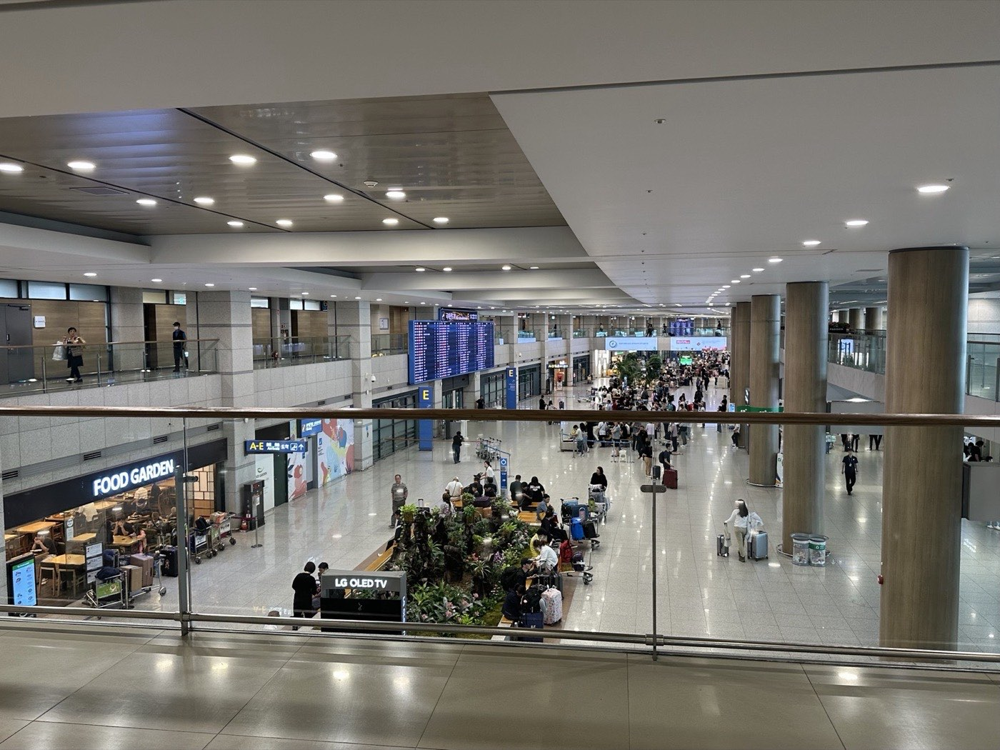
这件事对开篇那张登机牌来说不是背景知识，而是一个直接的注解。韩亚是一家还挂着星空联盟标识、却已经搬进天合联盟航站楼的公司。它在 1 月搬家，12 月才正式换联盟——也就是说，联盟切换在物理上先发生了十一个月，票面上的标识反而是最后才改的那一项。任何 2026 年 1 月之前写的攻略，只要说"韩亚在 T1"，现在都是错的。
反过来，这次搬家给旅客带来了一个实际好处：过去大韩与韩亚之间的中转必须跨航站楼，衔接时间要求长得多；现在两家同在 T2，中转窗口大幅缩短。并购给消费者的好处，往往就是这种不写在新闻稿里的东西。
国际转国际：为什么不用入境
开篇那趟行程在仁川停留两小时十分，行程单上写着"无需领取及重新托运行李"。这一行字背后是一整套设计。
国际转国际的中转全程在"空侧"（airside）完成——也就是安检线以内、边检线以外的那片区域。旅客跟着"Transfer / 换乘"指示走，不入境、不过对方国家的海关与边检。法律上，你从未踏上韩国国土。
这解释了几件事：为什么大多数国家的国际中转不需要过境签证；为什么中转旅客不能去航站楼外面吃饭；以及为什么行李可以一路挂到最终目的地——它和你一样，从未"入境"过。
但通常要重新过一次安检（转机安检）。原因是各国对安检标准的互认程度不同，接收方需要按自己的标准重新筛一遍。这也是为什么在中转站买的液体常常在下一段登机前被没收。
中转时间到底要留多久
第一章提到过最短衔接时间（MCT）这个参数。这里补一个诚实的说明：它没有单一数字。
MCT 本质上是一张按"到达航司 × 出发航司 × 航站楼组合"逐项定义的表。同一座机场，同航司同楼中转、跨航司中转、跨航站楼中转、国际转国内，四种组合的数值可以差出三倍。以仁川为例，流传的数字包括同楼同航司约 45 分钟、跨航站楼约 90 分钟、异航司联程约 120 分钟——它们可能都对，只是对应不同的组合。
实用的做法不是记数字，而是记原则：
- 订票系统卖给你的联程，一定满足官方 MCT。低于 MCT 的组合根本不会出现在搜索结果里。所以"来不来得及"这个问题，系统已经替你把过一道关了。
- 但 MCT 是"一切正常时的最小值"，不是舒适值。它假设前段准点、行李系统正常、你走路不慢、中转安检不排队。任何一项不成立，缓冲就没了。
- 长途国际中转，实操上留两小时以上比较稳。两小时十分这样的时长属于"宽裕但不浪费"——足够吸收一到一个半小时的前段延误，又不至于在候机厅耗掉半天。
- 要特别留意卫星厅。很多大型机场有靠无人捷运连接的独立登机区，从主楼走到那里可能要二十分钟。查登机口编号时留意有没有"需乘捷运"的提示。
- 而如果是两张分开的票，以上全部不适用——那时候没有任何系统在替你把关，时间是你自己拍脑袋定的。见第一章。
休息室：有几种，怎么进
机场休息室分三类，搞清楚分类之后，"我能不能进"这个问题就变成了查表：
航司自营。航司自己建、自己运营，主要服务自家高舱位旅客与高等级会员。国泰在香港、日航的 Sakura Lounge、汉莎的 Senator Lounge 都属于这一类，通常也是体验最好的一类。
联盟共享。航司自营休息室按联盟规则对其他成员的旅客开放。这是第五章那张精英权益表的实际用途——星空 Gold、天合 Elite Plus、寰宇 Sapphire 可进商务舱休息室，寰宇 Emerald 还能进头等舱休息室。
独立第三方。由独立公司运营或聚合，靠会籍、信用卡权益或单次付费进入。Priority Pass、龙腾出行、环球悦享是聚合平台，Plaza Premium 这类则是实际运营方。
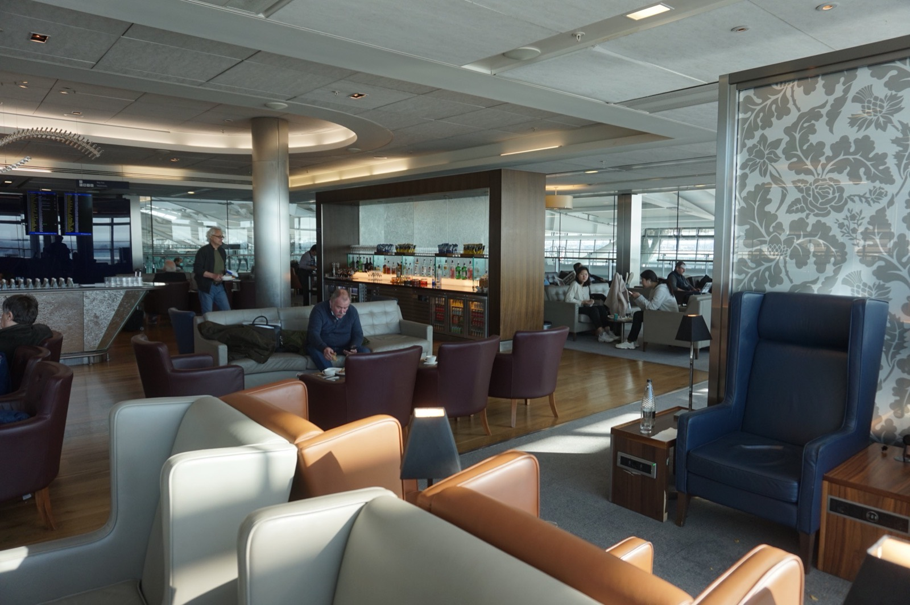
需要澄清一个概念：Priority Pass 和龙腾出行不是休息室的运营方，而是聚合平台。它们不拥有休息室，而是与各地休息室签约，把访问权打包卖给银行等发卡机构，再由发卡机构作为信用卡权益发给持卡人。这条链上有三方——平台、休息室、发卡行——而其中任何一方都可以拒绝你。这一点在下一节很关键。
进入方式一共五种：当天搭乘的舱位（头等/商务，部分航司超经也给）；精英会籍（看会籍不看今天坐什么舱）；信用卡自带的权益次数；直接购买航司俱乐部年费会籍；以及单次付费。
最后这一项常被忽略，但对偶尔长途中转的人最实用：很多休息室本身就卖单次入场。截至 2026 年，各家媒体汇总的价格区间大致在 35 至 90 美元之间（航司自营的 walk-in 通常偏上限，独立休息室偏下限），而且提前在线预订通常比现场买便宜。以仁川 T2 为例，那里有一间独立付费休息室，限时三小时，价格在四万韩元档，同时也接受 Priority Pass。
需要提醒的一点：满员时休息室有权拒绝单次付费的客人，这也是最常见的被拒原因。高峰时段值得提前订。
关于"在网上买别人的会员权益进休息室"
这件事在国内的二手平台上确实存在：有人把公司发的或自己的休息室权益按次转卖，价格几十元。既然长途中转确实有这个需求，那就把它讲清楚——不是道德评判，而是把规则、风险和替代方案摆出来，让人自己判断。
先说规则。这些条款是公开的，而且写得非常明确。
Priority Pass 的官方使用条件里有几条直接相关：会籍凭证不可转让，且"不得由记名会员以外的任何人使用"；入场"严格以持有有效凭证、有效登机牌，以及休息室可能要求的任何额外身份证明为条件"——最后这一项就是工作人员核对卡上姓名与登机牌姓名是否一致的依据；而同行客人"必须与会员本人同时登记、同时进入"，这一条直接封死了"会员在门口帮忙刷一下就走"的做法。
龙腾出行的中文条款说得更直白。某发卡银行与龙腾联合发布的服务指南里原文写着：本服务"须由持卡人本人使用，不得转让或转借他人"。值得注意的是这份文件的发布方是发卡银行而不是龙腾自己——这说明限制转让是银行侧的要求，因为银行是按次向平台付费的，转借等于让银行为一个非持卡人买单。
航司自营休息室同理。以美航的 Admirals Club 为例：会籍不可转让；会籍包含直系家属或最多两名客人的入场资格，但"仅当这些人陪同会员本人时适用"；在线购买的单日通行证也不可转让，必须载明实际使用者的姓名。
再说后果，而且只说有条款依据的。
| 后果 | 是否有明文依据 |
|---|---|
| 当场被拒绝入场 | ✓ 有。Priority Pass 条款规定入场须持有效凭证、登机牌及休息室要求的额外身份证明；不遵守条款者可被要求离开 |
| 会籍被立即取消且不予退款 | ✓ 有。Priority Pass 条款明文保留对违反使用条件的会籍立即取消、不予退款的权利——这个后果落在卖家头上 |
| 卡被没收 | ✗ 未找到条款依据。这是流传较广的说法，但在公开条款里查不到，不应作为事实陈述 |
| 常旅客账号被关闭 | ✗ 未找到明文依据。相关条款只给了运营方"采取合理必要措施执行协议"的概括性权力，没有列出这一具体后果 |
所以准确的表述是：这不违法，是违约；而违约的明确后果是当场被拒，以及卖方的会籍可能被取消。失败的成本主要不是钱，是在一个陌生机场里、在一段疲惫的中转中间，站在门口被工作人员当面核对姓名然后请走。
而现场核验正在明显收紧。一个很具体的信号：某银行自 2026 年 1 月 1 日起，对贵宾厅等权益新增了"线下核验时需出示持卡人本人预约时使用的对应信用卡"的要求。这意味着发卡行正在从"条款上禁止"走向"流程上阻断"——以前禁止转让只写在条款里没人查，现在要当场出示实体卡。同期国内高端信用卡的休息室权益也普遍在收缩：无限次改限次、携伴要额外扣次数、附属卡共享额度、积分兑换门槛提高。
最后说替代方案，因为这其实是这一节最有用的部分。
正规路径的价格并没有想象中夸张。单次付费入场大致在 35–90 美元区间，提前在线订更便宜；很多机场还有不挂任何航司牌子的独立付费休息室，价格更低。如果一次中转要待六七个小时，这笔钱换来的是一个能躺、能洗澡、有插座、有饭吃的地方——按小时折算，比一杯机场咖啡加一个不舒服的座位划算得多。
再往前一步：如果你已经开始规划长期的飞行，那么第五章的精英会籍才是这个问题的真正答案。星空 Gold 或天合 Elite Plus 可以带一名同行客人进商务舱休息室，而且看会籍不看舱位——坐经济舱照样进。它需要时间去积累，但它是唯一不需要每次都心里打鼓的方案。
你的行李去了哪里
现在跟着行李走一遍。
值机时贴在行李上的那张条，除了目的地三字码，还有一个十位数字，同时以明码和条形码两种形式印出。这个号码叫 License Plate Number——行业里直接管它叫"车牌号"，由国际航空运输协会的规程定义，全球唯一。它的结构大致是：首位是航段/重复标识，中间三位是承运航司的数字代码（就是电子客票号开头那三位，韩亚是 988），末六位是该航司的顺序号。
与此同时，航司或其地面代理会生成一条叫 BSM（Baggage Source Message，行李源报文）的电报，内容包含航班号、航班日期、目的地、旅客姓名，以及那个唯一的十位码。这条报文的作用就是把"这个人—这个航班—这件行李"三者绑在一起。
然后行李进入行李处理系统（BHS）：
- 沿线的扫描阵列从多个角度读取条形码
- 系统用十位码去查 BSM 数据库，得到这件行李应该去哪个航班、装在哪个位置
- 分拣机（倾斜托盘式或交叉带式）把行李甩进对应的滑槽
- 读不出条码的行李走人工编码站
- 在滑槽末端被装进集装器，再由拖车送到飞机旁装机
国际航空运输协会还有一项决议要求航司在交运、装机、转运、到达四个节点记录行李状态，并能与其他航司交换这些数据——这就是为什么现在很多航司的 App 能告诉你"您的行李已装机"。
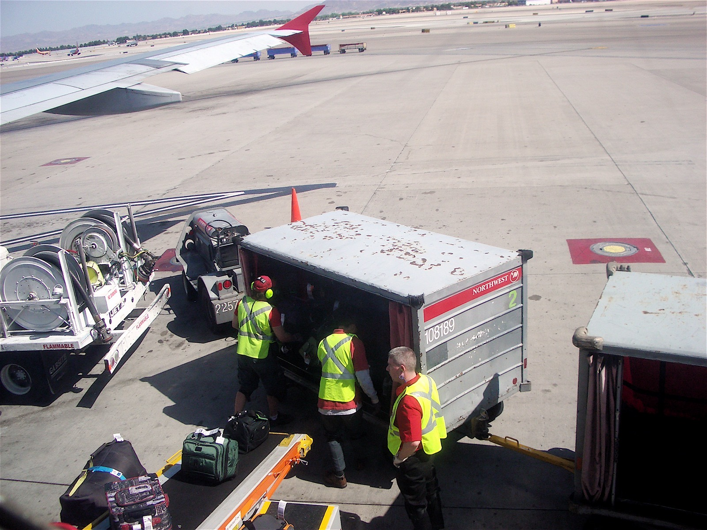
那些形状怪异的集装器也有名字。最常见的下舱集装箱代码是 AKE（俗称 LD3），尺寸约 1.53 × 1.56 × 1.63 米，最大载重约 1,587 公斤——它侧面被削成斜角，就是为了贴合机身的圆弧截面。更大的是板式的 PMC（LD7），载重可达五吨多。A350、777、A330、787 都使用这套标准集装器。
行李为什么会丢，以及丢在哪一环
先给最新的行业数据。根据 2026 年 6 月发布的行业报告（覆盖 2025 年）：
2025 年的错运率首次降到疫情前水平以下，而同期旅客量创下历史新高。所以整体趋势是好的。
但真正有用的是国内 1.65 与国际 9.12 这组对比——五倍多的差距。它说明了一件事：行李丢失几乎全部发生在交接环节，而不是"某家航司不上心"。国内航班通常是一段直飞、一个地面代理、一次装卸；国际行程可能涉及两三段航班、两三家地面代理、跨国的数据交换。每多一次转机、多一个交接方，风险就成倍上升。
由此得出几条实用推论：
- 减少中转次数是降低行李风险最有效的手段，比选哪家航司重要得多。
- 中转时间越紧，行李误接的概率越高。人可以跑，行李不能。四十分钟的衔接里你可能赶上了，行李没赶上。
- 重要物品（药品、证件、充电器、一套换洗衣物）随身带。行李延误的中位数是一两天，但那一两天里你需要活下去。
- 拍一张行李外观和内容的照片，索赔时用得上。
- 把那张行李条留到行程结束。它上面的十位码是查询系统里唯一的索引。
飞机肚子里还装着什么
这里是一个大多数乘客不知道的事实：宽体客机的下层货舱里，你的行李旁边通常躺着大量商业货物。
这叫腹舱货运（belly cargo）。逻辑非常直接：飞机反正要飞这一趟，燃油、机组、起降费都已经付出，行李装完之后剩下的货舱容积如果空着，那部分运力的价值就是零。所以航司把它卖掉，而多带的货几乎是纯边际收入。
这块收入的规模超出很多人的想象。以国泰航空 2025 年的年报为例：货运收入约 243.79 亿港元，占集团总收入约 20.8%——也就是说，一家以客运著称的航空公司，五分之一的收入来自运货。（需要说明：这个数字包含它自己的全货机机队，不等于纯腹舱收入；航司通常不公布这两者的拆分。）
这个事实还解释了一个疫情期间的怪现象。客机停飞，全球腹舱运力一夜之间蒸发了一大半，而航空货运需求反而在上升。行业的应对方式相当粗暴：把客舱座椅拆掉运货。2020 年 3 月至 12 月，全球共有约 155 架客机被拆除全部或大部分座椅改运货物，其中 A330 约 49 架、波音 777 约 45 架；同时在运营的峰值出现在 2020 年 6 月，超过 100 架。而这次转型的节奏本身很说明问题——116 架是在 2020 年第二季度就完成的，下半年只有 32 架。这是一次应急冲刺，不是结构性转型，到 2021 年初就有相当一部分改回了客运。
全货机与集成商：另一套完全平行的航空网络
除了搭客机的腹舱，还有一整套只运货的航空体系。截至 2025 年，全球全货机机队约 2,395 架，行业预测到 2045 年会增长到约 4,010 架。
货机分两种来路：新造全货机（747-8F 已随 747 停产、777F、767-300F，空客的 A350F 在研发中），以及客改货（P2F）——把退役客机拆掉座椅、加装货舱门和地板加强件改成货机，如 A330P2F、A321P2F、737-800BCF。有意思的是 2025 年出现了一个转折：宽体客改货的数量首次超过窄体，这是 2009 年以来的第一次。
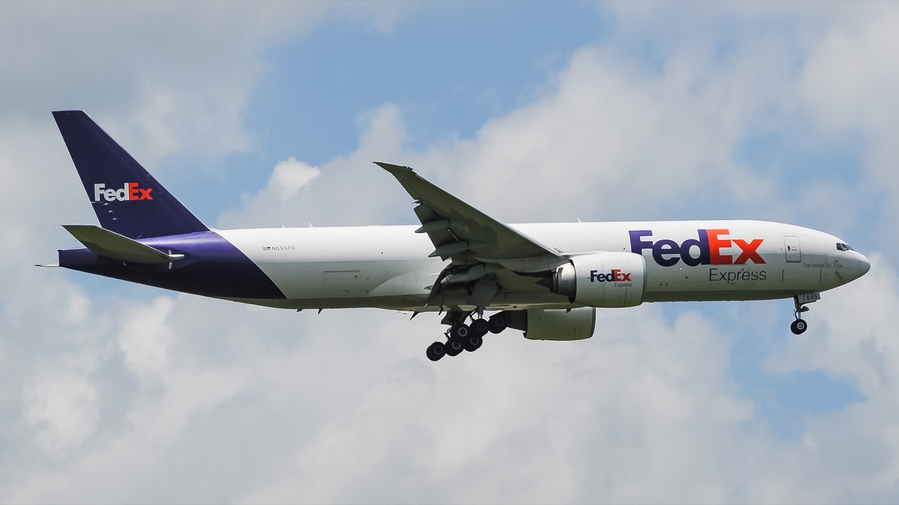
而航空货运里最精巧的那部分，是所谓集成商（integrator）模式——同时拥有飞机、卡车、分拣中心和末端派送的快递公司。它们的运作方式是第一章那套轮辐式网络的极端版本：
所有货物在夜里从各地飞到同一个超级枢纽，在凌晨几个小时内一次性完成全网分拣，再在天亮前飞回各地。这样 N 个城市之间的互通只需要 N 条航线，而不是 N×(N−1)/2 条。代价是每一件货都要绕道枢纽——从纽约寄到波士顿的包裹可能先飞到田纳西州再飞回来——好处是"任意两点之间隔夜送达"这件事在经济上第一次成立。
| 枢纽 | 每夜包裹量 | 分拣峰值 | 航班量 |
|---|---|---|---|
| FedEx · 孟菲斯超级枢纽 | 超过 150 万件，高峰可达 240 万件 | 每小时最高 47.5 万件 | 每夜 140–150 架次 |
| UPS · 路易维尔 Worldport | 每天 200 万件 | 每小时 41.6 万件 | 每天约 300–360 架次 |
| DHL · 莱比锡 | 每夜 35 万件、2,000 吨 | 每小时 15 万件以上（约每秒 42 件） | 工作日每夜 80–90 架货机 |
中国也有这套东西，而且规模已经不小。顺丰航空截至 2026 年初机队规模突破 90 架，是中国最大的货运航空公司，机队里 747 与 767 承担欧洲、北美的远程航线，757 与 737 负责国内与亚洲近程。它的主枢纽是鄂州花湖国际机场——2022 年 7 月投运，是中国及亚洲首座专业货运枢纽机场（即完全为货运而建、不以客运为主）。
这座机场的数据爬升得很快：2025 年 11 月单月完成枢纽货量 147.81 万吨（同比增长 44.2%），其中航空货邮吞吐量 114.57 万吨，位居全国第五、中部第一；国际货运航线已增至 22 条；2026 年 3 月开通了首条英国航线。2025 年，中国内地货邮吞吐量突破百万吨的机场共六家，鄂州花湖是其中唯一一座专业货运机场——其余五座（上海浦东、广州白云、深圳宝安、北京首都、郑州新郑）都是客运大机场。
所以顺丰尾翼上的标志确实是一整套航空公司，不是租来的飞机。UPS、FedEx、DHL 同理，而且它们的规模更大——这是一个和客运完全平行、只在夜里运转、绝大多数乘客一辈子看不见的航空世界。
关于锂电池：为什么它必须随身
这条规则每次广播都会提到，理由其实很硬：锂电池热失控起火时，货舱里没有人能发现，也没有人能扑灭。客舱里如果一个充电宝冒烟，乘务员几十秒内就能用专用灭火装置处置；同样的事发生在下层货舱，只有灭火系统能反应，而锂电池火灾的化学特性让常规灭火剂效果有限。
货运侧的规则在 2026 年刚刚收紧。此前属于"建议"的荷电状态限制变成了强制要求：作为货物运输的锂离子电池（包括与设备包装在一起的、以及装在车辆里的大容量电池），交运时荷电状态不得超过额定容量的 30%。而单独运输的锂金属电池，本来就禁止以货物形式装载客机。
对旅客的具体要求：备用电池与充电宝必须随身携带、不得托运；航司普遍要求电量低于某个比例；机上禁止给充电宝充电，也禁止用充电宝给设备充电。
最后一条不是过度谨慎。2025 年 1 月，一架停在韩国釜山金海机场的客机在起飞前发生客舱起火，169 人全部安全撤离；调查结论是行李中一个充电宝的内部绝缘失效短路引燃。韩国监管部门随后收紧了充电宝的携带规定。这类规则的每一条，背后通常都有一个具体的日期。
座位上的十五小时
现在进入客舱。下面这些都是每次飞行都会遇到、但很少有人追问的细节。
你其实一直在两千多米的海拔上
巡航高度上的外界气压只有地面的四分之一左右，无法维持人的意识，所以客舱必须增压。但机身不能承受太大的内外压差（那需要更重的结构），所以工程上取了折中：客舱内的气压相当于海拔 7,000 到 8,000 英尺（约 2,100–2,400 米）的水平。
这个高度大致相当于坐在一座中等高度的山上。对健康人来说没有问题，但它确实解释了一些体验：轻微的疲惫感、酒精效果比地面更强、以及气压变化时的耳鸣（中耳与外界的压差没能及时平衡，吞咽或打哈欠能打开咽鼓管解决）。
787 和 A350 把这个数字降到了 6,000 英尺。能这么做的原因是它们的机身以碳纤维复合材料为主——复合材料抗疲劳、不腐蚀，可以承受更大的压差。这两千英尺的差别在超长途航班上是能感觉到的，也是这两款飞机在乘客口碑上占优的原因之一。
湿度是另一件事，而且这里需要诚实：各方给出的数字分歧很大，不建议记住任何一个精确值。可以确定的是，传统客机巡航时的客舱相对湿度只有个位数到十几个百分点，接近沙漠；787 和 A350 靠复合材料机身和加湿系统把它抬高了几个百分点（波音公布的设计目标是在 6,000 英尺客舱高度下约 16%），但独立测量的结果彼此矛盾。无论按哪个数字，都低于人体舒适所需的约 20%。所以长途飞行的干燥感是真实的，多喝水是有依据的。
飞机餐为什么难吃：这不是心理作用
这件事有扎实的研究支撑，而且原因是三层叠加的。
第一层：低气压与低湿度直接削弱味觉。德国一家研究所受汉莎航空委托做过一项实验，在模拟客舱环境中测量味觉阈值，结果是咸味感知强度下降约 20%–30%，甜味下降约 15%–20%。相关论文明确记录：低压条件下，盐、糖、谷氨酸以及多数气味物质的感知阈值明显升高——也就是需要更高的浓度才尝得出来。
第二层：噪音也参与其中，而且方式很奇特。康奈尔大学一项 2015 年的研究让受试者戴上耳机，一组听 85 分贝的模拟客舱噪音、一组在安静环境中，测试五种基本味觉。结果是：噪音显著抑制甜味，却显著增强鲜味（umami），苦味不受影响。
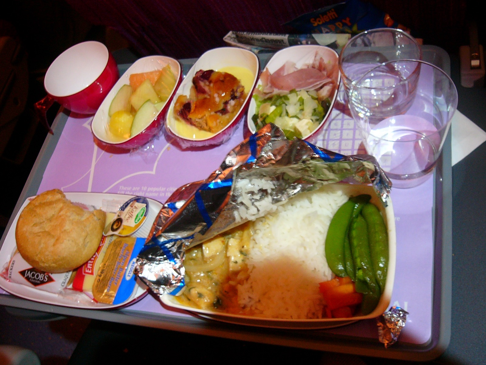
第三层：工艺约束。飞机上不能现炒，所有热食都是地面预制、冷藏、机上复热。复热对食材极不友好——酱汁会分离、肉会变干、绿叶菜会烂。菜单因此被压缩到"能扛住复热"的那一小类：炖菜、意面、咖喱、米饭配酱汁。这不是厨师没水平，是可行解的集合本来就很小。
把这三层加在一起，可以推出一个具体的结论——番茄汁在飞机上真的变好喝了。它在地面上偏酸、偏"土腥"，但它富含谷氨酸（鲜味），而客舱噪音恰好抑制甜味、增强鲜味；同时低压削弱了它的酸甜感。那项汉莎的研究里就直接测试了番茄汁。所以航空公司常年备着番茄汁、而它在地面上销量平平这件事，不是玄学：同一杯饮料在三万英尺上是另一种味道，而这是味蕾接收端和大脑跨感官整合两个层面同时发生的生理变化。
顺带一个几乎免费的技巧：提前订特殊餐。绝大多数全服务航司允许在起飞前 24 小时之外免费预订特殊餐食——素食、亚洲素食、清真、犹太洁食、海鲜、低盐、无麸质、儿童餐等等。它们通常是单独制作的，而且会在普通餐食之前先送到你手上。对不挑食的人来说这也是个可玩的选项：有些航司的素食餐做得比标准餐用心。
客舱空气比大多数办公室干净
客舱空气大约一半来自外界新风、一半是经 HEPA 过滤的再循环空气。HEPA 过滤器对 0.3 微米颗粒的去除效率是 99.97%。整个客舱的换气频率约为每小时 20–30 次——作为对照，普通办公楼大约每小时 2–5 次。
还有一个设计细节：客舱送风是从上往下的横向分区流动（每几排构成一个"气流区"），而不是前后纵向流动。这是刻意的，目的是减少跨排的交叉污染。所以"飞机上空气很脏"这个印象与实际情况相反——干燥是真的，脏不是。
起降时那三条规定，来源是同一件事
调直椅背、收起小桌板、打开遮光板、调暗客舱灯——这几条规定的源头，是一项叫90 秒撤离认证的适航要求。
美国联邦航空条例规定：座位数超过 44 座的飞机，必须证明在模拟紧急条件下，满载的乘客与机组能在 90 秒内全部撤离到地面。而规定演示条件的附录里，藏着解释那三条客舱规定的全部信息：
- 演示只能使用一半的应急出口——模拟另一侧被火焰或障碍物封死
- 必须在黑夜条件下进行，外部环境光不超过 0.3 英尺烛光，且除特定情况外只能由飞机的应急照明系统提供照明
- 演示中不得事先告知乘客将使用哪些出口
把这三个条件放在一起，那几条规定的逻辑就完整了：
需要诚实说明的一点：90 秒撤离是造飞机时的认证要求，而"起降时要开遮光板"是各航司写在运行手册里的运行规定——两者是因果关系，不是同一条法规。所以准确的说法是"这条规定的源头是 90 秒撤离认证"，而不是"法规规定必须开遮光板"。
但因果关系本身很清楚。这些规定看起来像形式主义，实际上每一条都在为一个 90 秒的窗口做准备。第七章会给出这个窗口有多重要的具体数据。
椅背屏幕正在被拆掉，然后又在被装回来
椅背娱乐系统曾被视为长途飞行体验的标配，但过去几年出现了相反的趋势。美国航空是"拆屏幕"的旗手：2025 年从最后一批 A319 上拆掉了椅背屏，737 与 A321 窄体机队也已完成，全面转向让乘客用自己的设备连接机上串流门户。理由是降本、减重减排、简化维护——一块屏幕加上布线，重量和故障率都不小。
支持拆的理由是乘客普遍自带一到多台设备，省下的钱可以投入更快的 Wi-Fi 和更好的高端舱位。反对的理由是不带设备的旅客被牺牲了——尤其是带小孩的家庭和年长旅客。
而 2026 年的情况变得有趣：美国联合航空正在借机队更新计划在新飞机上重新装回椅背屏，达美也在加码机上科技，反倒是美航因为在这方面落后而面临压力。这件事的走向还没定。
机上 Wi-Fi 这边的技术代际则很清楚：最早是空对地（地面基站向上打，只能在陆地上空用，带宽极低），然后是 Ku 波段地球同步卫星（能覆盖海洋，但延迟高达数百毫秒），再是带宽更大的 Ka 波段，现在是低轨星座（Starlink），延迟降到几十毫秒、带宽大幅提升。
2026 年的铺装进展相当快：卡塔尔航空的 241 架飞机中已有约 140 架装好，A350 与 777-300ER 全机队完成，并对会员免费；美国联合航空的支线机队已全面上线，干线正在铺开；法国航空宣布向全机队约 200 架推广；夏威夷航空是最早装的那家。"长途航班上不能上网"这件事正在快速成为历史。
时差：为什么往东飞更难受
人的生物钟自由运转周期略长于 24 小时，所以把一天拉长比把一天缩短更容易。往西飞是把一天拉长（相当于晚睡），往东飞是把一天缩短（相当于被迫早睡）。这就是为什么从中国飞美国西海岸相对好扛，而从美国东海岸飞回亚洲那一趟往往特别痛苦——那是往西飞跨过日界线，实际效果是极大幅度的时相前移。
可操作的几条：登机后立刻把手表和作息切换到目的地时间，然后按目的地时间决定睡不睡，而不是按困不困；抵达后争取白天户外的自然光照，这是重设生物钟最强的信号；避免用酒精帮助入睡（它会破坏睡眠后半段的结构，而客舱的低气压又放大了酒精效果）；咖啡因只在目的地时间的上午使用。
还有一条与选座有关：如果打算在飞机上睡觉，靠窗座位在长途上明显优于过道——不会被起身的邻座叫醒、有舷窗边框可以靠头、能自己控制遮光板。反过来，如果打算多起来活动，过道座位更好。这个选择应该在值机开放的那一刻就做完，而不是登机时才发现。
颠簸、复飞，与恐惧
问：十五个小时里，飞机会穿过云层、明显颠簸，机翼会看得见地上下弯曲；落地前偶尔会突然拉起来重飞一次。这些是危险信号吗？以及那个更大的问题——看了几百集空难纪录片之后，一个人应该更怕飞，还是更不怕飞？
这一章分两半。前半讲飞行中那些会被误读为危险的现象，后半诚实地回答"该不该怕"。第二半是这本书真正想抵达的地方。
先把升力讲对，因为流传最广的那个解释是错的
几乎所有中学教材都讲过这个版本：机翼上表面比下表面长，气流"必须"同时到达后缘，所以上表面流速更快，按伯努利原理产生低压，于是有了升力。
这个解释是错的，而且美国航天局的官方教学页面把它明确列为"错误的升力理论"。错在哪里：
- 没有任何物理定律要求上下表面的空气同时到达后缘。这是一个凭空捏造的约束。
- 实测中上表面的气流速度远大于"等长度路径"理论的预测值，空气粒子实际上比下表面的粒子更早到达后缘。
- 用这个理论算出的升力远小于实测升力，因为它预测的速度太低。
- 它无法解释平板机翼、对称翼型和倒飞为什么也能产生升力。
正确的解释有两个等价视角，而且它们不矛盾：
牛顿视角：机翼把大量空气向下偏转（下洗），根据牛顿第三定律，空气对机翼施加一个向上的反作用力。这个视角能直接解释倒飞——只要迎角合适，倒过来也能把空气推下去。
伯努利视角：机翼周围存在环量，上表面流速确实高于下表面，把压差沿表面积分就得到升力。
航天局的官方页面明确指出，这两者是同一现象的两种数学描述，都能给出正确的升力值。所以简明的记法是：飞机能飞，是因为它持续地把空气往下推。
气流是什么
广播里说的"气流"，专业上叫湍流，成因有好几种，而它们的可预测性差别很大：
对流性湍流。地表受热不均，暖空气上升、冷空气下沉。典型出现在午后、积云区、雷暴附近。它可以被雷达看见，所以基本可以绕开——这就是为什么航路有时会在图上画出一个大弯。
地形波（山岳波）。强风越过山脉被迫抬升再下沉，形成波状气流，可以传播到很高的高度和很远的下游。飞越大山脉时的持续抖动多半是这个。
晴空湍流。这是最难对付的一种：没有云，雷达看不见，多与高空急流附近的强风切变相关，通常发生在 15,000 英尺以上。它是"万里无云却突然一阵剧烈颠簸"的元凶，也是安全带灯亮着时最该系好的理由。
尾流湍流。前机翼尖拖出的涡旋。这是航空器之间必须保持最小间隔的原因——大型机后面拖出的涡旋能持续几分钟。
为什么颠簸弄不坏飞机
这一节直接给数字，因为数字比任何安慰都有说服力。
运输类飞机的适航标准规定了两个载荷概念：
限制载荷（limit load）是正常使用中预期会遇到的最大载荷，典型值为 +2.5 g 到 −1.0 g。极限载荷（ultimate load）等于限制载荷的 1.5 倍，结构必须能承受极限载荷至少三秒而不失效。也就是说，机翼的结构验证做到了 ±3.75 g 的量级。此外还有专门的阵风载荷条款，要求对离散阵风和连续湍流分别做分析。
这些数字的意义要和实际感受对比才看得出来：日常飞行中乘客觉得"很剧烈"的颠簸，垂直过载通常远不到 ±0.5 g；即便被归类为"严重湍流"的情况，也很少接近 ±1.0 g。而结构验证到 ±3.75 g。中间有很大一段是空的。
如果这还不够具体，可以看一次静力试验。2010 年 3 月，波音在 787 的静力试验机上完成了极限载荷上弯试验：载荷加到"飞机服役中预期遭遇的最极端受力的 150%"，翼尖向上弯曲了约 25 英尺（7.6 米），试验持续两个多小时，每秒采集数千个数据点，结构没有失效。
7.6 米。下次在舷窗边看到机翼上下动了十几厘米，可以想一想这个数字。机翼会弯是设计意图，不是危险信号——柔性机翼像悬挂系统一样把突加载荷吸掉一部分，反而降低了传到客舱的峰值加速度。真正需要担心的是一根完全不弯的机翼。
颠簸真正的风险：一组很说明问题的统计
湍流确实伤人，但伤的是谁，统计数据给出的答案高度一致：
为什么乘务员的风险是乘客的二十四倍？因为他们的工作性质要求他们站着走动，不能一直坐着系安全带。这一条数据几乎自己就把结论说完了：
湍流伤害几乎完全集中在没系安全带的人身上。飞机的结构不会坏，会坏的是被甩到天花板上的人。所以"全程系好安全带，哪怕安全带灯灭了"这句话不是形式主义的客套，它是把这个风险降到接近零的唯一手段，而且成本为零。
顺带回答一个常被问到的问题：颠簸是不是变多了？有研究支持这个说法。英国雷丁大学的一个团队在 2023 年发表的研究中，用二十一种不同方法计算了过去四十余年的晴空湍流，发现在北大西洋的一个典型点上，严重级别晴空湍流的年发生时长从 1979 年的 17.7 小时增加到 2020 年的 27.4 小时，增幅 55%。机制是二氧化碳排放改变了高空的温度梯度，进而增强了急流内部的风切变。
所以"最近颠簸变多"不完全是媒体报道更多造成的错觉，其中有真实的气候信号。但它改变的是不适的频率，不是结构安全的边界——而应对方式还是那一条：系安全带。
起飞：V1 之后为什么不能停
起飞前机组会念出三个速度，它们的含义值得知道：
V1 的关键在于它不是一个保守的习惯，而是一条由跑道长度算出来的物理边界。它的定义方式叫平衡场长：选取一个 V1，使"加速—然后中断并刹停所需的距离"恰好等于"加速—继续起飞并越过障碍物所需的距离"。
所以过了 V1 再刹车，剩余跑道在数学上已经不够停下来了。带着一台发动机故障继续起飞、绕回来降落，风险远小于以两百多公里的时速冲出跑道端。这也解释了为什么起飞是整个飞行中最需要"照着念"的阶段——留给判断的余量以秒计。
值得一提的现实是：飞行安全研究机构指出，实际运行中仍然存在在 V1 之上错误中断起飞的案例，而它是跑道冲出事故的重要来源之一。规则是清楚的，人在那三秒里的反应不总是。
复飞是标准操作，不是事故
落地前突然加大推力、重新爬升，机上常有人受惊。但复飞（go-around）是写在标准操作程序里的动作，每次进近简令都会预先讲一遍，机组在模拟机里反复训练。它是"这次进近不合格"的正确出口，不是应急处置。
判断进近是否合格有一套国际通行的稳定进近准则：在仪表气象条件下必须在机场标高以上 1,000 英尺稳定，在目视气象条件下必须在 500 英尺稳定。"稳定"意味着在预定航迹与下滑道上、已是着陆构型、速度在规定范围内、下降率通常不超过每分钟 1,000 英尺、发动机推力已经稳定。任何一项不满足，就该复飞。
而这里有一组数据，方向和大多数人预期的相反：
换句话说：行业面临的问题不是"复飞太多"，而是"复飞太少"。研究折算下来，约 54% 的进近着陆事故本可以通过一次复飞避免。所以下次遇到复飞，正确的反应不是紧张，而是"这个机组按规矩办事了"——因为统计上，大多数人在同样的情况下会选择硬着陆下去。
风切变：一套体系如何被两次事故改写
这是全书最好的"血写的规章"案例，也是理解现代航空安全体系的钥匙。
微下击暴流是雷暴中一股强烈的下沉气流，撞击地面后向四周辐散，直径通常不到四公里。飞机穿越它时，会先遭遇强顶风——空速骤增、升力增加、机头上仰，飞行员的自然反应是收油门压低机头；紧接着穿过核心区，风向急转为强顺风——空速骤降、升力骤失。而这一切发生在离地几百英尺的高度上，几乎没有改出余量。
1975 年 6 月 24 日，一架波音 727 在纽约肯尼迪机场进近时遭遇风切变坠毁。这起事故触发了低空风切变告警系统的研发。
1985 年 8 月 2 日，一架 L-1011 在达拉斯/沃斯堡机场进近中穿过雷暴的微下击暴流，在进近中骤降一千英尺，137 人死亡。
此后行业做的事不是加一条禁令，而是同时从三个方向下手——这套组合拳的结构值得记住，因为现代航空安全的所有改进都是这个模式：
风切变探测网
机场周边布设风速仪阵列，通过比较各点的风速风向差异探测低空风切变；1985 年后升级为具备一定微下击暴流探测能力的版本。此后数年，高风险机场开始部署终端多普勒气象雷达。
让地面能提前几分钟发现看不见的东西预测性风切变系统
监管当局在此之后强制要求商用飞机具备低空风切变探测能力。现代气象雷达可以在飞机进入切变区之前数十秒发出"WINDSHEAR AHEAD"告警。
把探测能力搬上飞机，不再依赖地面风切变改出程序
调查明确指出机组对微下击暴流的知识与训练不足。此后改出程序（最大推力、抬头至抖杆边界、不收起落架和襟翼）成为定期模拟机训练的必修科目。
让人在那十几秒里做出反直觉的正确动作雷暴附近的运行限制
对雷暴单体的绕飞距离、进近中遭遇切变告警时的处置、以及地面等待的判据都被写进手册。
把判断变成规则，减少个人经验的差异效果如何？定性的结论是：1990 年代之后，美国商业航空再未发生过 1985 年那一量级的风切变事故。一类曾经反复杀人的事故，被一套"探测 + 告警 + 训练 + 程序"的组合基本消灭掉了。
这个模式在后面还会出现好几次。它是理解"为什么飞机变安全了"的核心。
自动驾驶到底自动到什么程度
自动驾驶会做：保持航向、高度、速度，沿飞行管理系统里的航路飞行，自动下降与进近，以及在特定条件下自动着陆。
自动驾驶不做：起飞（几乎所有民航机的起飞都是手动的）、判断天气、决定是否备降、处理非正常与紧急情况、与管制协调、地面滑行。
关于自动着陆有一个常见的误解需要纠正：它很少被使用。业界的估计是自动着陆占全部商业着陆的不到 1%，约九成以上的着陆由飞行员手动完成。原因有两个：手动着陆通常更简单更平顺，而自动着陆需要地面的仪表着陆系统与机载系统同时达到严格状态；更重要的是，规章要求飞行员保持手动着陆的熟练度，不允许过度依赖自动化。
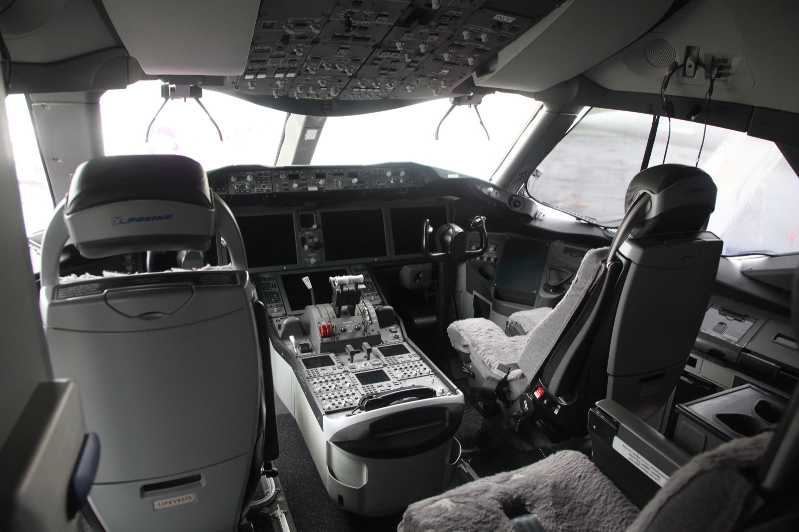
低能见度着陆按仪表着陆系统的类别分级，从 CAT I（决断高不低于 200 英尺）到 CAT IIIb（决断高低于 50 英尺或没有决断高，跑道视程可低至约 50 米）。CAT IIIb 通常必须自动着陆，机组只负责监控。还有一个理论上存在但实际不使用的 CAT IIIc——因为即使能落地，落地后还得看得见才能滑出跑道。
关于机组本身：现代客机是双人机组，而飞行时间与疲劳受到严格规章约束。美国的规则里，双人机组的飞行时间上限最严，三人机组可以延长到十三小时、四人机组到十七小时；执勤前必须有至少十小时连续休息；任意连续七天内必须有三十小时连续免于执勤。欧洲的规则结构不同但同样严格。所以超长途航班上通常有两组机组轮换——那趟十五小时的航班上，驾驶舱里的人换过班。
还有两类会上新闻的事
鸟击。最著名的一次是 2009 年 1 月，一架 A320 从纽约拉瓜迪亚机场起飞后撞上加拿大黑雁群，两台发动机同时失去推力，机组迫降哈德逊河，机上 155 人全部生还。这起事故之后，监管部门投入约 3.5 亿美元帮助定期客运机场落实野生动物管理计划，多数大型机场配备了野生动物生物学家；十四年后，涡扇发动机的吞鸟适航标准也被更新。而在 2024 年 12 月，韩国务安机场那起造成 179 人死亡的事故，鸟击也是链条的起点之一——同一类威胁，不同的结局。
火山灰。1982 年 6 月，一架波音 747 在印尼上空飞入火山灰云，四台发动机全部熄火。当时是夜间、灰云不可见，而整个行业还没有把火山灰认作喷气机的威胁，机组和管制一时无法判明原因。飞机在无动力下滑期间成功重启了发动机，安全备降雅加达，机上 263 人全部生还。后果是国际民航组织在 1990 年代建立了全球火山灰咨询中心网络，由九个分区负责发布火山灰扩散预报。又一次"一起事故换来一套体系"。
现在回答那个问题：该不该怕
前面所有内容都是准备工作。下面这部分要处理的是真正的问题，而处理的方式是：把数据老实地摆出来，包括那些对结论不利的。
"飞机比火车安全"——这句话取决于你按什么单位算
先给一组罕见的、把三种统计口径放在同一张表里的数据。它来自英国 1990–2000 年的统计，虽然年代较早，但正因为三个分母同时给出，它能揭示一件别处看不到的事：
把这三张图连起来看，会看到一个翻转：
- 按公里算，航空压倒性领先——0.05，是铁路（0.6）的十二分之一，是私家车（3.1）的六十二分之一。这是"飞机是最安全的交通工具"这句话的来源。
- 按小时算，航空（31）与铁路（30）几乎完全一样，而巴士（11）反倒比飞机安全近三倍。
- 按次数算，航空（117）看起来最差——是铁路的近六倍、巴士的近三十倍。
这三行数字放在一起，就是那句流行说法的全部真相和全部条件：飞机安全在"每公里"上，因为它一趟就飞很远。一次跨太平洋飞行相当于一万一千公里，用同样的距离开车会花掉一百多个小时并穿过无数个路口。当分母是距离时，飞机赢得毫无悬念；当分母换成"次数"时，一次飞行和一次通勤被当成了同一件事，飞机就吃亏了。
值得注意的是行业自己的措辞有多精确。国际航空运输协会总干事的原话是："Flying is the safest form of long-distance travel."——最安全的长途出行方式。那个"长途"不是修辞，它是这个统计结论成立的前提条件。
这张表是英国 1990–2000 年的数据，已经偏旧。航空的三个数字在过去二十五年里都大幅改善（见下一节），铁路与巴士也有改善。引用时请当作"三种口径的相对关系"的示例，不要当作当代绝对值。另有一份美国 2000–2009 年的研究给出：按每十亿旅客英里死亡数，商业航空 0.07、巴士 0.11、干线铁路 0.43、小汽车 7.28、摩托车 212.57。
现在的绝对数字是多少
行业最新的年度安全报告（2026 年 3 月发布，覆盖 2025 年）给出：
| 指标 | 2025 | 2024 | 五年均值 |
|---|---|---|---|
| 全事故率（每百万架次） | 1.32 | 1.42 | 1.27 |
| 折算 | 每 759,646 架次发生 1 起事故 | ||
| 事故总数 | 51 | 54 | 44 |
| 致命事故数 | 8 | 7 | 6 |
| 机上死亡人数 | 394 | 244 | 198 |
| 全年总航班量 | 3,870 万架次 | 3,790 万架次 | — |
几点需要说明，因为它们决定了怎么读这张表：
2025 年的死亡人数明显偏高，而原因是两起事故。一起客机坠毁（241 人）与一起客机与军用直升机的空中相撞（64 人），两起合计占当年机上死亡人数的 77% 以上。这就是航空安全统计的性质——它由极少数事件主导，因此年度间波动很大，只有多年平均才有意义。用单一年份的数字论证"今年飞机变危险了"或"变安全了"，都是误读。
长期趋势非常清楚。全事故率从 2005 年的 3.72 降到 2025 年的 1.32，二十年降幅约 64%。致命事故的五年滚动率从十年前的"每 350 万架次 1 起"改善到现在的"每 560 万架次 1 起"。
机型类别差异明显：喷气机 1.03，涡桨机 4.08（每百万架次）。这个差异主要不是飞机本身，而是涡桨机执飞的航线类型——短跑道、山区、气象条件差、监管环境参差的地区。
那么中国高铁呢
这个对比值得认真做，但必须诚实：可靠的中国高铁事故率序列很难取得。网上流传的一些数字（如"每亿人公里死亡 0.01 人"）出自内容农场式来源，不是国家铁路局或国际铁路联盟的官方发布，不应引用。
能确定的是两件事。第一，规模：截至 2025 年底，中国铁路营业里程约 16.5 万公里，其中高铁突破 5 万公里，规划到 2030 年达到 6 万公里。第二，事故记录：中国高铁运营以来最严重的事故是 2011 年 7 月 23 日的甬温线事故——一列动车组追尾另一列，40 人死亡、172 人受伤，国务院发布了专门的调查报告。而自那之后，中国高铁再未发生过造成旅客死亡的重大事故。
这个记录在十四年、五万公里、每年数十亿人次的规模上是极其出色的。所以对"在中国境内，高铁和飞机哪个更安全"这个问题，诚实的回答是：两者都非常安全，安全到这个选择不应该由安全性来决定。真正应该决定它的是时间、价格、舒适度和天气可靠性——短于一千公里的行程，高铁在门到门的总时间上通常赢；更远的距离，飞机赢。
为什么飞机事故让人格外恐惧
如果数据这么清楚，为什么它一点都不能让人安心？因为恐惧不是按概率计算的，它按另外三条规则运作。
而恐惧本身是有代价的，这个代价可以用尸体计数
这是这一章最锋利的一段。
2001 年 9 月之后，美国的航空客运量骤降，而公路交通量上升——大量原本要飞的人改成了开车。心理学家 Gerd Gigerenzer 对此做了统计：事件后三个月内，美国道路交通死亡增加了 353 人——超过了那四架被劫持客机上乘客死亡的总数。他在另一项分析中给出十二个月的数字：道路交通死亡增加约 1,595 人。
换句话说：为了躲避一个"可怕的"风险，人们换上了一个更致命但"不可怕"的风险，而这个选择本身杀死的人可能比原来那件事更多。
诚实的限定：后续研究者对这一归因存在争议。该分析是把事件后各月的道路死亡数与此前五年同期比较，未报告统计显著性检验；其他研究给出了不同的超额死亡估计。所以这个数字应该被当作一个数量级上的警示，而不是精确的因果测量。但它指向的方向——恐惧驱动的规避行为有真实成本——是站得住的。
这一点对"我朋友因为怕飞所以尽量坐高铁"这类选择有直接含义。在中国境内，改坐高铁是一个安全上完全站得住的选择（见上一节，两者都极其安全）。但如果规避的方式是长途自驾，那么按前面任何一种统计口径，这个选择都在显著提高风险。规避恐惧和降低风险，不总是同一件事。
《空中浩劫》的正确读法
现在处理那个具体的问题：看了几百集空难纪录片之后，一个人应该更怕飞还是更不怕飞？
答案是：更不怕，但需要换一个读法。
先做一道算术
这部纪录片从 2003 年首播至今，已经拍到第 26 季，加上特别篇总共两百多集，也就是覆盖了两百多起事故。而在同一个二十余年里，全球商业航空执飞了多少航班？以 2025 年的 3,870 万架次为基准，二十余年累计是数亿架次的量级。
也就是说：你在屏幕上看到的每一次坠机，背后都有超过两百万次平安落地，而那两百万次没有人拍。
这部片子拍得越好、越真实、越震撼，它对风险直觉的扭曲就越彻底。因为它是从一个"分母大到看不见"的样本里，专门把分子挑出来拍的——它是可得性启发的完美工业化生产。这不是它的缺点，这是它的选材标准。
但换个读法，它就变成了另一部片子
这里是这一章想说的核心：《空中浩劫》其实是一部关于"航空业如何变安全"的编年史，只是它把每一集都伪装成了一个悲剧。
注意每一集的结尾——几乎每一集的最后几分钟，讲的都是同一件事：因为这起事故，行业改了什么。加了一个告警系统、改了一条程序、重写了一段训练大纲、修了一条法规、重新设计了一个部件。
把这些结尾串起来，就是现代航空安全体系的建造史。前面讲过的风切变那一节就是完整的一例：两起事故，换来了地面探测网、机载告警系统、必修的改出训练和一整套运行程序，然后这类事故基本消失了。同样的模式在别处反复出现：
CRM：驾驶舱里的权力结构被重写
1977 年两架 747 在特内里费跑道相撞造成五百多人死亡，调查认定沟通失效与决策不当是关键成因；1978 年一架客机在波特兰因机组全神贯注排查起落架故障而耗尽燃油坠毁；更早的 1972 年，一架客机在大沼泽地坠毁，原因是全体机组都在盯着一个烧坏的指示灯，没有人在监控飞行。
1979 年美国航天局召开了一次名为"驾驶舱资源管理"的研讨会，与会者认定人际沟通、决策与领导力的失效是当时多数空难的深层因素。机组资源管理（CRM）这个术语由此诞生，1981 年第一个全面实施的航司项目上线。它做的事本质上是：让副驾驶敢于对机长说"我认为这样不对"。
EGPWS：撞山这类事故基本消失了
"可控飞行撞地"（CFIT）——飞机完好、机组清醒，却撞上了山或地面——曾是最大的杀手之一。在近地警告系统强制装机之前，大型客机每年约有 3.5 起致命 CFIT。
结果是这样的：到 2006 年，自强制令以来美国空域内的大型喷气客机再未发生过一起造成乘客死亡的 CFIT。空客 2020 年的一项研究给出了量化数字：CFIT 事故率从 1999 年的每百万飞行小时 0.18 起降到 2019 年的 0.02 起，下降 89%；2024 年的后续研究称过去二十年下降 98%，同期地形感知系统的装机率从 68% 升到 99%。
TCAS：一次撞机之后，机器的优先级高于管制员
2002 年 7 月 1 日夜，德国南部于伯林根上空 35,000 英尺，一架客机与一架货机相撞，71 人全部遇难。
而根本矛盾在于：两机的防撞系统都正确识别了冲突，并发出了方向相反的决断咨询。但一方的机组遵从了管制员的下降指令，另一方遵从了系统的下降指令——两架飞机同时下降，撞在了一起。
此后的规则修改只有一句话，但改变了整个行业的层级关系：防撞系统的决断咨询永远优先于管制指令。机组必须立即遵从，随后通报管制，冲突解除后再回到许可高度。系统本身也增加了反转逻辑与"改平"指令。此后，巡航高度上的商用客机之间再未发生过相撞。
关于最后一条需要一个精确的限定，否则会被读者抓住：2025 年 1 月确实发生过一起客机与军用直升机的空中相撞（64 人死亡），但那发生在低空进近阶段、涉及军民混合空域，与"巡航高度上两架客机互撞"不是同一类问题。区分清楚这一点很重要——含糊的安全宣称会削弱可信的那部分。
除了这三样，还有一层不那么戏剧化但同样重要的东西：安全管理体系（要求航司把安全当作一套有数据、有指标、有闭环的管理流程）、飞行数据监控（例行下载并分析每一个航班的飞行数据，发现超限趋势——把安全工作从"事后调查"变成"事前发现"），以及匿名免责报告系统（让一线人员敢于主动上报自己的错误而不必担心被追究）。
最后这一项的思路值得单独说一句，因为它反直觉：一个不惩罚错误上报的体系，才能知道错误在哪里。如果上报会导致处罚，人就会隐瞒，而隐瞒的错误会重复发生直到造成事故。整个现代航空安全文化建立在这个认识上。
所以，一个看过几百集空难纪录片的人，其实比大多数人更有资格不害怕——因为他实际上读完了这套体系的全部建造过程。他知道每一条看起来多余的规定背后有一个日期，知道乘务员反复检查椅背和遮光板不是没事找事。缺的只是最后一步：把每一集的结尾连起来看。
航司之间真的有安全差异吗
有，而且数据相当清楚。但差异的位置可能和直觉不同。
行业有一套叫 IOSA 的运行安全审计。2025 年的数据：
另一个参照是欧盟航空安全名单——被禁止进入欧盟空域的航司清单，最近一次更新在 2026 年 6 月 9 日，共 154 家（一年前是 169 家）。它的构成很能说明问题：
- 126 家来自 16 个国家——而理由不是这些航司本身有问题，而是这些国家的民航当局安全监管能力不足。整国被禁，不是逐家评估。
- 22 家俄罗斯注册航司
- 6 家其他国家的个别航司
- 另有 2 家受运行限制，只能用特定机型飞欧盟
这份名单里最值得注意的一点：几乎没有一家是普通读者会买票的航司。它禁的不是"某几架旧飞机"，而是监管体系失效的国家。所以那个关键洞见是："航司之间的安全差异"，本质上是"监管环境的差异"。
关于机队年龄，结论需要小心，因为它很容易被误读。一项对五十年事故数据的纵向研究发现，机龄超过二十年的机体存在致命事故风险上升的统计趋势——但同一项研究强调，美欧的严格监管环境通过高强度监督抵消了这一风险。更有意义的区分是：机械适航性不等于现代安全特性。一架老飞机可以在机械上完全适航，但它缺少新一代设计中内建的东西——自动飞行包线保护、复合材料的抗坠毁性与阻燃性等等。作为参照，全球商用机队的平均机龄约 15.1 年，其中客机部分约 12.8 年。
把这些合起来，对普通旅客的现实结论是：中美日韩欧之间的主流航线，所有承运人都通过了 IOSA、都在严格监管辖区内、机队年龄普遍低于全球均值。换句话说，"选一家更安全的航司"这个动作，在你决定飞哪条航线的时候就已经完成了——剩下的差异小到不值得焦虑。真正需要研究安全记录的场合，是在监管薄弱地区乘坐小型涡桨机的时候。
737 MAX 该怎么理解
这个案例不能回避，因为它是近年唯一一起让公众合理地怀疑"制造商是否可靠"的事件。
2018 年 10 月和 2019 年 3 月，两架 737 MAX 8 先后坠毁，分别造成 189 人和 157 人死亡。原因是一个叫 MCAS 的软件系统——它是为了补偿 MAX 因发动机前移上移而产生的抬头趋势而加入的。两起事故中，它因单一迎角传感器的错误数据被反复误触发，持续把机头压下去，而机组未被告知这个系统的存在。
随后是全球停飞，持续 20 个月，是美国商用客机史上最长的一次停飞。
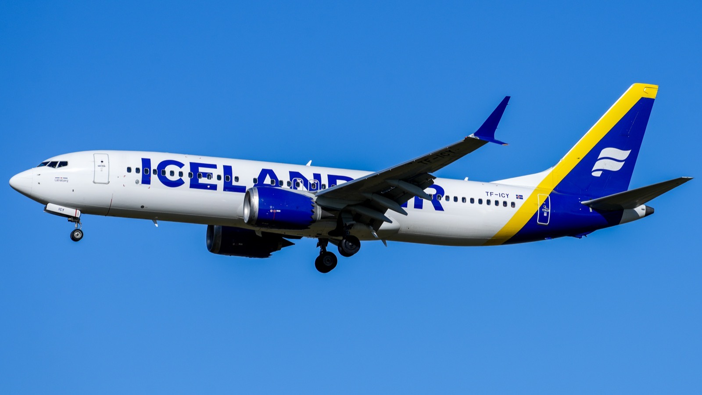
故事没有在复飞时结束。2024 年 1 月 5 日，一架 737 MAX 9 在爬升到 14,000 英尺时舱门塞脱落——原因是紧固件未被正确安装，压差把它整体推了出去。飞机安全备降，无人重伤。而事故调查的结论是把根本原因归咎于制造商的生产流程与质量体系，以及监管机构的监管失效。
监管的回应是一个很具体的动作：把 737 MAX 的产量封顶在每月约 38 架，未经批准不得提高。这是一件相当罕见的事——监管机构直接限制一家公司能造多少产品，理由是它证明不了自己能造好。
而这个限制在 2026 年 3 月被解除，5 月底获批把产量提升到每月约 47 架。也就是说，整改用了两年，而恢复产能的许可是逐级发放的。
那么该怎么理解这件事？我认为有两层，而且两层都要说：
第一层：这是一次真实的、严重的失败，而且不只是技术失败。MCAS 的问题不是"传感器坏了"，而是一个允许单点故障持续操纵飞机、且不告知机组的设计决策通过了所有内部评审。舱门塞事故也不是"一个工人手抖"，而是一套质量体系没有发现工序被跳过。这两件事的共同点是：组织出了问题，而不是零件出了问题。
第二层：这套体系的纠错机制确实运转了，而且运转得相当粗暴。停飞 20 个月、产量被封顶两年、事故调查公开点名监管机构自身失职——这些都不是行业惯常的自我保护姿态。而且它符合前面反复出现的那个模式：事故 → 调查 → 找出体系性原因 → 改规则。只不过这一次，被改的是制造商和监管机构。
诚实的结论是：737 MAX 现在是全世界被监督得最严的机型之一。如果要问"它安全吗"，理性的答案是——它现在受到的审视强度，恰恰来自它曾经证明过自己需要这种审视。这不构成"不要坐它"的理由，但它构成"不要把航空安全当作自动运转的东西"的理由。这套体系之所以安全，不是因为它不出错，而是因为它出错之后会痛。
真正能提高生还率的几件事
最后是可操作的部分。而这里要先破除一个印象。
"飞机出事就没人能活"——这个印象是错的，而且错得很远
美国国家运输安全委员会在 2001 年发布过一份专门的研究报告，分析 1983 至 2000 年间涉及美国定期航班的事故。结论是：
值得一提的是，该委员会撰写这份研究的明确动机之一，就是破除"空难基本无人生还"这个公众误解。
这个数字改变了整个问题的性质。如果多数事故是可生还的，那么"事故发生后你做了什么"就不是一个无意义的问题——它是决定你在那 76.6% 里面还是外面的变量。
那么，具体做什么
下面每一条都能追溯到这本书前面某处的依据：
全程系好安全带
哪怕安全带指示灯灭了。依据是本章前面那组数据：湍流重伤者中乘务员占 79%、风险是乘客的 24 倍，唯一的原因就是他们不能一直坐着。
成本为零，是本清单里回报率最高的一条数清到最近两个出口的座椅排数
依据是第六章那条 90 秒撤离认证：演示条件假设只有一半出口可用，且只有应急照明。真实事故中客舱可能充满烟雾，你看不见任何东西，只能靠数排数摸过去。所以要数两个方向——最近的那个可能正好是不可用的那一侧。
花三十秒，换一个在黑暗中仍然有效的信息撤离时绝对不要拿行李
拿行李会直接吃掉 90 秒预算，并在过道里堵住后面所有人。这是近年多起撤离事故反复暴露的问题——不是财产损失的问题，是把别人挡在里面的问题。
这一条保护的主要是别人，其次才是自己起降时保持椅背调直、遮光板打开
依据同样在第六章：椅背压缩后排的逃生空间，遮光板关系到暗适应和判断哪一侧出口可用。这两条是被要求的，配合它们不需要额外努力。
已经在做的事，知道原因之后会做得更认真关于"哪个座位更安全"，必须说清楚它的局限
这个问题有研究，但研究的质量必须和结论一起说，否则就是误导。
一项 2015 年的媒体分析翻查了美国的航空事故数据库，筛出既有死亡又有生还者、且留有座位图的事故——最终只有 17 起符合条件（最早 1985 年，最晚 2000 年）。结果是：机身后三分之一座位死亡率 32%，中三分之一 39%，前三分之一 38%；最好的是后部的中间座位，死亡率 28%。另一项分析了 1973 年以来 20 起事故，发现过半数事故里后排乘客的生还机会高出约 40%。
但这些分析的局限极大：
- 样本极小（17 起、20 起），而且数据陈旧（主要是 1985–2000 年）。
- 选择偏差明显：只有留下座位图的事故才被纳入，而这本身就是一种筛选。
- 最根本的问题：事故形态的差异远大于座位的差异。如果机尾先着地，前排反而更安全。撞击的角度、起火的位置、哪扇门能打开——这些因素对结果的影响，量级上远超"你坐第 12 排还是第 42 排"。
所以诚实的结论是：座位位置的影响，远小于"这是不是一起可生还事故"以及"你有没有系安全带、能不能在 90 秒内出去"。如果一定要选，靠近出口、不要坐在极限位置是个温和的偏好；但把注意力放在这上面，是在优化一个几乎不重要的变量，同时忽略了三个真正重要的。
给一个怕飞的人
这本书的最后一段留给这个问题：如果身边有人因为怕飞而尽量不飞，能说什么？
不要用"飞机比汽车安全"这句话，因为它太粗糙，而且对方多半已经听过一百遍了。能说的是这几件更具体的事：
第一，把恐惧的对象说清楚。大多数怕飞的人怕的不是概率，是失控感和不理解。而这一章前半部分讲的每一样东西——颠簸为什么弄不坏飞机、机翼为什么会弯、复飞为什么是好事、V1 之后为什么不能停——都是把"不理解"换成"理解"。知道自己感受到的那一记颠簸在 ±3.75 g 的验证范围里的什么位置，比听一百次"别怕"有用。
第二，如果对方看过空难纪录片，就换个读法给他。那两百多集不是两百多个理由不飞，是两百多条已经被修好的规则。而全球每年三千八百万架次航班，绝大多数从未被拍摄，因为无事发生。
第三，承认那句流行说法的条件。"飞机是最安全的交通工具"成立于"按公里"这个口径，而不是所有口径。诚实地说出这一点，反而会让对方更愿意相信你说的其余部分——一个愿意承认数据不利面的人，比一个只挑有利数字的人更可信。
第四，也是最后：在中国境内，选高铁完全不需要理由。两者都极其安全，这个选择应该由时间和舒适度决定，不该由恐惧决定，也不该由别人的说服决定。真正需要警惕的只有一种情况——用长途自驾来规避飞行。按本章任何一种统计口径，那都是把风险显著地调高了。
而对一个已经飞过很多次、看过很多集空难纪录片、仍然会在颠簸时握紧扶手的人来说，最有用的可能不是"不要怕"，而是这个：你感受到的那些让人不安的东西——颠簸、机翼弯曲、突然的复飞、发动机声音的变化——绝大多数都在设计余量之内，而且都有名字。知道它们的名字，是把恐惧变成知识最实际的一步。
- 各国事故调查机构（美国 NTSB、法国 BEA、英国 AAIB、日本 JTSB、中国民航局航安办）的最终报告全部公开，而且写得比纪录片精确得多。读一份完整的报告，会看到"原因"从来不是一个，而是一条链条上的七八个环节。
- 航空安全数据的一手来源：国际航空运输协会的年度安全报告、国际民航组织的安全报告、以及飞行安全基金会的各类专题简报。它们都公开发布，而且明确标注统计口径——这一点在读任何安全数字时都是第一位重要的。
- 想知道自己那趟航班的飞机具体是哪一架、机龄多少、之前飞了哪些航线，用航班追踪网站查注册号就行。这件事做几次之后，"飞机"会从一个抽象概念变成一个有履历的具体物件——对怕飞的人来说，这种具体化本身有帮助。
回到那张登机牌
开篇那张纸上的每一个字段，现在都可以重新读一遍了。
逐条说一遍：
OZ。这两个字母属于一家在四个月后就不存在的公司。它 1988 年成立，2003 年加入星空联盟，2024 年 12 月被同属天合联盟的大韩航空收购，2026 年 1 月搬进对方的航站楼，2026 年 10 月 15 日之后不能再往星空联盟里记里程，12 月 16 日退出星空，12 月 17 日法人被吸收。这张登机牌是一份并购进行时的快照，而它上面印着的联盟身份已经进入倒计时。
JFK → ICN。不是绕路——首尔几乎就坐在纽约到上海的大圆航线上，两段加起来比直飞只多出不到 1% 的距离。多出来的四个多小时几乎全是停出来的，而这个停留是整张全球航线网络的设计结果：把分散的客流在枢纽汇成干流，长途航班才填得满、票价才降得下来。韩国既不是起点也不是终点，它靠把自己的国土变成一座桥赚了这笔钱——这个模式连国际民航组织都不正式承认，却撑起了全世界最赚钱的一批航空公司。
02:45。这个不近人情的时刻不是随意定的，它是被仁川那头的清晨波次倒推出来的：北美各城市在当地深夜起飞，跨过日界线后恰好在首尔清晨陆续落地，紧接着一批飞往亚洲各地的航班在上午出发。整张时刻表的锚点不在纽约，在仁川。
ECONOMY，以及那个 Y。这两处不是一回事。前者是物理客舱，后者是全价经济舱的舱位代码——同一个客舱里可能坐着十几个不同代码的乘客，付的钱、能不能改签、能攒多少里程、超售时谁先被请下飞机，全都不同。而 Y 恰好是最好的那一档：在多数计划里按 100% 累积，而不是特价票的 25% 或 10%。这张票的累积资格是满的，只是没人去领。
ZONE 2。登机组是舱位与会员等级的外显，不是排队号。而学术研究早就证明"从后往前登机"并不是最快的方案——现实中不采用最优方案，是因为它跟"把优先登机作为商品出售"这件事直接冲突。
60J。这个座位号自己就说明了它在哪：60 排落在主甲板经济舱的区间内，而更干脆的证据是那个字母——A380 上层的 2-4-2 布局根本没有 J 座。所以它在一楼，3-4-3 横排十座的右侧三连座中间。而这架飞机上级别最高的 12 个座位也在一楼，就在机头，因为那里最宽；二楼后半截反而是经济舱，2-4-2，每人比楼下宽出一截，是常飞的人专门去抢的位置。"二楼全是头等和商务"这个直觉，恰好是反的。
A380-800。全世界最大的客机，翼展 79.75 米，最大起飞重量 575 吨，一共造了 251 架，已经停产。它输给了双发飞机——比 787-9 费油约三分之一，而 ETOPS 规则的放宽让四发的唯一优势彻底消失。它至今没有导致机体全损或人员死亡的事故，但这项记录的分母只有二十年和八十多万架次，不足以支撑"它比别的飞机安全好几倍"这个结论。它在气流中确实更稳，但原因不是流传最广的那个"翼载荷高"——真正起作用的是 575 吨的质量惯性，以及 80 米翼展对湍流场做的空间平均。
GATE 8，以及 ICN T2。那个 T2 是这次并购在物理世界里留下的证据：韩亚在 2026 年 1 月搬进了天合联盟的楼，比它正式换联盟早了十一个月。而在登机口的另一侧，行李正在被读取那个十位数的"车牌号"、匹配一条把人和行李绑在一起的报文、被分拣机甩进对应的滑槽，最后装进那个侧面削成斜角以贴合机身弧线的集装箱——放进客舱地板下面一米多的货舱里，旁边躺着商业货物。行李确实和人在同一架飞机上。
MEMBERSHIP CARD NO. 和 MILES。这两个空格是整张纸上唯一能立刻换成钱的部分。往返约一万四五千英里，Y 舱按 100% 累积，大约值一千三百元人民币。它不需要资格、不需要门槛、不需要多花一分钱——注册是免费的，注册当下就生效。而这件事现在有两个时限叠在一起：多数计划的补登窗口是六到十二个月，而韩亚航班能记进星空联盟的最后期限是 2026 年 10 月 15 日。窗口正在以周为单位关闭。
下次买票的清单
把全书压成一页可执行的东西。按重要性排序，不按流程顺序：
确认是一张联程票还是两张分开的票。看电子客票号——同一个号码带不同航段序号是联程，两个不同号码是两份合同。这一条决定了前段延误时是航司负责还是你自己负责，是全清单里后果最严重的一项。
衔接时间控制在一到三小时。低于一小时太紧，超过四小时是在浪费生命。留意有没有卫星厅需要乘捷运。
查一下机型和客舱布局。同一款 777 有 3-3-3 和 3-4-3 两种排法，差一英寸的座椅宽度，十五个小时里的差别相当明显。舒适度是航司决定的，不是机型决定的。
确认不是基础经济舱。如果是，把加行李、加选座、加改签的钱补回去再比价。
算一下 +1000 元能换到什么。换一家客舱更好的航司、换直飞、或者促销期的超经——这个价位段的实际选项比"升商务舱"现实得多。跨太平洋商务舱是经济舱的三到六倍价钱，不是加一千块。
填常旅客卡号。没有账户就现在注册，十分钟，免费，注册当下生效。这是全书回报率最高的一件事。
如果同一联盟有多个计划，查一下哪个累积比例更高。同一张票记进不同计划，里程数可能差一倍。
记下舱位代码。它决定这趟飞行能留下多少资产。
值机开放的第一时间选座（通常起飞前 24–48 小时）。避开洗手间和厨房前后两排；长途要睡觉就选靠窗；2-4-2 的靠窗双座和 3-3-3 的过道位是最值得抢的两类。
提前 24 小时以上订特殊餐。免费，而且先于普通餐食送达。
充电宝和备用电池放随身行李，电量别太满。
坐下之后数一下到最近两个出口的排数。三十秒，换一个在黑暗和烟雾里仍然有效的信息。
全程系安全带，哪怕灯灭了。湍流重伤者中乘务员占 79%，唯一原因是他们不能一直坐着。
多喝水。客舱湿度低于人体舒适所需，而气压相当于两千多米海拔，酒精效果被放大。
颠簸时想一下那个 7.6 米。那是 787 静力试验中翼尖在 150% 极限载荷下的弯曲量。
复飞时不用紧张。统计上，大多数不稳定进近的机组会选择硬着陆下去；执行复飞的那 3% 才是按规矩办事的。
留着登机牌和电子客票，直到里程到账。
翻一遍过去半年到一年没记过的航段，全部补登。时限从飞行日起算，通常六到十二个月，过期永远没了。
攒够了就用掉，不要囤。兑换前先问"还要另付多少现金"，燃油附加费能让同一个座位的实际成本差十几倍。
最后
这本书从头到尾只在做一件事：把一张所有人都拿过、看过、然后扔掉的纸，一格一格地读出来。
那张纸上没有任何秘密。航权体系是公约里的条文，枢纽波次写在时刻表里，舱位代码印在票面上，里程规则挂在官网的 PDF 里，适航载荷标准和撤离认证要求是公开的法规，事故调查报告全文可以下载，安全统计每年发布。它们不难，只是从来没有人在你登机之前把它们讲一遍。
而理解它们改变的东西其实很具体：下次站在值机柜台前，你知道那个输入框值一千多块；下次在候机厅看见一片尾翼，你知道那家公司靠什么活着；下次机翼在气流里上下弯动，你知道它被验证到什么程度；下次落地前飞机突然拉起来，你知道那是有人在按规矩办事。
飞行不会因此变得更舒适。但它会从一件"发生在你身上的事"，变成一件你看得懂的事。
图片来源（均来自 Wikimedia Commons，按出现顺序）：
封面与韩亚 A380（洛杉矶）— Glenn Beltz，CC BY 2.0 · 法兰克福机场航拍 — Brücke-Osteuropa，CC0 · 国航反鱼骨商务舱 — N509FZ，CC BY-SA 4.0 · 新航 777-300ER 头等舱 — Dan Nevill / Altair78，CC BY-SA 2.0 · 波音 787（羽田）— Masahiro TAKAGI，CC BY 2.0 · 商飞 C919（虹桥）— 4300streetcar，CC BY 4.0 · 阿联酋 A380 — Mike McBey，CC BY 2.0 · 韩亚 A380 上层经济舱 — Simply Aviation，CC BY 4.0 · 协和号（曼彻斯特）— Ken Fielding，CC BY-SA 3.0 · 韩亚 A380（成田）— Sidowpknbkhihj，CC BY-SA 4.0 · 新加坡航空 A350 — Ian Gratton，CC BY 2.0 · 国泰 777（珀斯）— Bahnfrend，CC BY-SA 4.0 · 土耳其航空 A330 — AndrewDawes，CC BY-SA 4.0 · 埃塞俄比亚航空 787（奥斯陆）— Bahnfrend，CC BY-SA 4.0 · 瑞安航空 737 — Raimond Spekking，CC BY-SA 4.0 · 西南航空 737 — Acroterion，CC BY-SA 4.0 · 春秋航空 A320 — Aeroprints.com，CC BY-SA 3.0 · 仁川机场航站楼 — ノボホショコロトソ，CC BY 4.0 · 希思罗 T5 休息室 — Ian S，CC BY-SA 2.0 · 行李装机 — Saskjon，CC BY-SA 3.0 · FedEx 777 货机 — Wico B.，CC BY-SA 4.0 · 泰航长途经济舱餐 — User:Mattes，公有领域 · 积雨云 — Alf van Beem，CC0 · 787 驾驶舱 — dschwen，CC BY-SA 3.0 · Icelandair 737 MAX — MarcelX42，CC BY-SA 4.0 · 汉莎 747-8 — Acroterion，CC BY-SA 4.0 · 空客 A320neo — Don-vip，CC BY-SA 4.0 · 日航 A350-900 — Melvin Loi，CC BY-SA 2.0 · 芬航 A330-300（成田）— Nanashinodensyaku，CC BY-SA 4.0 · 联合航空 777-300ER 经济舱 — 4300streetcar，CC BY 4.0
主要资料来源：国际航空运输协会《2025 年度安全报告》（2026-03 发布）及其舱位与安全数据；国际民航组织"Freedoms of the Air"官方定义；美国联邦航空条例 14 CFR Part 25（载荷与撤离认证）、Part 250（超售）、Part 117（飞行时间限制）；美国交通部 2024-10 拒载赔偿调整规则；欧盟第 261/2004 号条例及 2026 年改革案；中国民航局行业标准 MH/T 1060—2014《公共航空运输航班超售处置规范》与交通运输部《公共航空运输旅客服务管理规定》；新加坡航空 KrisFlyer 官方舱位累积文件（2026-07-02 版）；Priority Pass 官方使用条件；国际机场协会 2025 年度机场排名；SITA《行李 IT 洞察 2026》；波音《世界航空货运预测》；国泰航空 2025 年度业绩公告；瑞安航空 2026 财年业绩公告；韩亚航空与大韩航空官方公告；美国国家运输安全委员会 NTSB/SR-01/01 生还性研究；美国航天局格伦研究中心升力理论教学页面；雷丁大学晴空湍流研究（2023）；Fraunhofer 建筑物理研究所与康奈尔大学味觉研究；Savage (2013) 美国交通死亡风险跨方式比较；英国 1990–2000 三口径交通死亡率统计。
数据时点：除特别注明外，全书机队、航线、联盟成员、里程规则、票价、赔偿标准与安全统计均以 2026 年 8 月为时点。航空业变动极快——机队会退役、联盟会换人、里程规则每年都在改、赔偿上限按通胀调整——具体操作前请以航司与监管机构的官方当期公告为准。文中凡来源存在分歧或无法核实的数字，已在正文中明确标注或回避。